1. 개요
1. 개요
Source: https://www.sweeper.or.kr/etc/manual/1.html
1. 개요

소프트웨어 자산관리 프로그램
| THE SOFTWARE MANAGEMENT |
SWeeper
Windows OS 기반의 PC에 관리 에이전트를 설치하여 운영하는 /자/산/관/리/솔/루/션/입니다.
- 기능은 하드웨어(PC 장치) 자원관리, 소프트웨어 관리, 배포관리, 자산 관리로 분류되며, 구매한 라이선스에 따라 사용 가능합니다.
- 서버프로그램 설치 OS는 Windows server 2022 이상부터 지원하며, DBMS는 MariaDB(무료)을 지원합니다.
- 간단한 환경설정을 통해 다국어 선택이 가능하며, 현재 한국어를 기본으로 다양한 언어가 지원될 수 있도록 구현되어 있습니다.
- 한국소프트웨어저작권협회 자체적으로 준비한 SWDB를 기본 제공하여 보다 쉽게 소프트웨어 관리가 될 수 있도록 준비하고 있습니다.
제품 공급
- 회사명 : 한국소프트웨어저작권협회
- 주소 : (06145) 서울특별시 강남구 선릉로 105길 3 솜씨빌딩 3~6층
- 대표전화 : 070-7709-3752
- 팩스 : 02-567-2933
제품 기술지원
- SWeeper는 웹 사이트를 통해 기술지원 및 원격지원이 가능합니다.
- SWeeper 사이트에 접속하시면, 기술지원을 받을 수 있습니다.
- https://www.sweeper.or.kr/product/custsupport
© Copyright SWeeper Inc.. All Rights Reserved
1-1. 설치
Source: https://www.sweeper.or.kr/etc/manual/11.html
1-1. 설치
1. 개요 ››


SWeeper 시스템 통신/암호화 구성도

서버 권장 사양정보
| 장비 | OS | CPU | RAM | HDD |
| ~ 150대 | Windows Server 2022 | Intel xeon (4core) 3.0 GHz 이상 | 8GB 이상 | 100GB이상 |
| ~ 500대 | Windows Server 2022 | Intel xeon (4core) 3.0 GHz 이상 | 8GB 이상 | 100GB이상 |
| ~ 1000대 | Windows Server 2022 | Intel xeon (8core) 3.0 GHz 이상 | 16GB 이상 | 200GB이상 |
| ~ 3000대 | Windows Server 2022 | Intel xeon (8core) 3.0 GHz 이상 | 32GB 이상 | 300GB이상 |
| ~ 이상 | Windows Server 2022 | Intel xeon (4core) 3.0 GHz 이상 | 32GB 이상 | 300GB이상 |
SWeeper 서버 프로그램의 경우 지원담당 엔지니어를 통해서만 설치 가능합니다. 사용자는 에이전트를 설치하고 관리자는 Manager 프로그램을 설치합니다.
관리콘솔 프로그램은 .NET FRAMEWORK 4.8을 지원하는 Windows 7 SP1+ 이상의 OS에서만 설치/운영이 가능합니다.
- 설치 언어 선택
사용 언어를 선택한 뒤 확인 버튼을 클릭합니다.

- 설치경로 설정
설치경로를 설정하는 화면 입니다. 변경사항이 없을 경우 다음 버튼을 클릭합니다.
- 시작메뉴 폴더 설정
시작 메뉴폴더 위치를 설정합니다. 변경사항이 없을 경우 다음 버튼을 클릭합니다.
- 설치 준비 완료
설치를 위한 설정 작업이 완료되었습니다. 설정된 내용이 확인되면 설치 버튼을 클릭합니다.
- 설치 진행
설치 진행 상태가 표시되며 완료되기 까지 잠시만 기다려 주십시오.
- 설치 완료
설치가 완료되었습니다. 완료 버튼을 클릭하시면 됩니다.
© Copyright SWeeper Inc.. All Rights Reserved
1-2. 화면구성
Source: https://www.sweeper.or.kr/etc/manual/12.html
1-2. 화면구성
1. 개요 ››


관리콘솔에 로그인하였을 때, 기본화면에 대한 설명입니다.
- 관리콘솔 설치하면, 로그인 화면이 팝업됩니다.
-
로그인 정보 입력 내용
-
아 이 디 : 생성한 계정을 입력합니다.
- 패 스 워 드 : 패스워드를 입력합니다.
- 서 버 선 택 : SWeeper DataServer IP를 입력합니다.
한번 입력된 서버IP는 저장되어, 재 로그인 시 기본입력이 됩니다. - 포 트 선 택 : 포트번호 "8220"을 입력합니다.
-
접속 아이피 : PC에 설정된 IP를 입력합니다.
자동으로 표시되지만 선택이 잘못된 경우 원격제어 기능을 사용할 수 없으므로 사용중인 IP를 확인하여 선택하시기 바랍니다. -
콘솔화면
SWeeper 콘솔 화면 구성은 아래 그림과 같이 6가지로 분류되어 있습니다.
-
화면구성
-
리본메뉴 : 직관적인 아이콘으로 각 메뉴를 표시를 하여 관리자가 쉽게 선택하여 기능을 사용할 수 있도록 했습니다.
- 조직도 : 부서, 네트워크 등의 분류를 표시하는 화면으로 장비 설치현황, 소프트웨어 현황 등과 연계하여 조회되도록 합니다.
- 메인화면 : 각 기능별 조회 결과가 표시되는 화면으로 리스트 또는 수량 등 다양한 정보를 표시하게 됩니다.
- 속성창 : 메인화면에서 조회되는 각 정보에 대한 상세한 내용을 추가적으로 표시합니다.
-
상태표시줄 : 관리콘솔의 현재 작업 상태를 표시합니다.
-
Server IP : 현재 접속한 SWeeper 서버의 IP 정보를 표시합니다.
- 로그인아이디 : 콘솔 로그인한 계정을 표시합니다.
- 상태 메시지 : 관리 콘솔에서 발생하는 작업 메시지를 출력합니다.
-
예약 로그오프 : 관리자 접속 보안을 위한 로그 오프 예약 시간을 표시합니다.
-
60분이 지나면, 프로그램 종료 메시지가 제공됩니다. 이때 확인을 누르면 자동 60분이 연장되고, 그렇지 않으면 프로그램 종료됩니다.
-
접속시간 : 로그인한 시간을 표시합니다.
-
한국어 : 현재 관리콘솔에 표시되는 언어 정보를 표시합니다.
-
조직도 메뉴 : 단축 아이콘(보이기/감추기)
참고사항
- 톱니바퀴 아이콘을 통해 상태 표시줄에 표시할 항목을 설정할 수 있습니다.
- 컬럼영역에서 마우스 우클릭 시 "열선택"에서 메인화면에서 노출될 열을 선택 할 수 있습니다.
s
- 열 설정 기능을 이용하여 그리드뷰 열설정을 편하게 할 수 있습니다.
© Copyright SWeeper Inc.. All Rights Reserved
1-2-1. 조직도
Source: https://www.sweeper.or.kr/etc/manual/127.html
1-2-1. 조직도


좌측에 위치한 조직도에서는 부서/필터그룹/네트워크그룹/장비그룹/장비보관함의 정보를 확인할 수 있습니다. 7시 방향에 위치한 버튼으로 조직도 메뉴를 열고 닫을수 있습니다.
- 처음 로그인시 조직도 화면이 감춰져 있습니다.
- 7시 방향의 조직도 버튼을 클릭합니다.
- 조직도 메뉴중 부서를 클릭합니다.
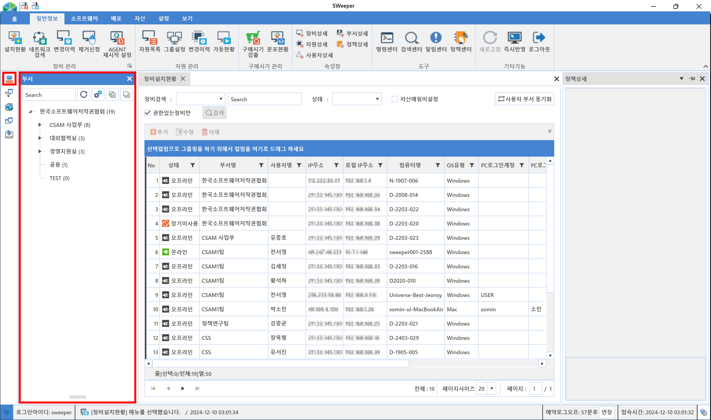
참고사항
메인화면을 넓게 이용하고자 할때, 언제든 조직도 버튼을 숨길수 있습니다.
© Copyright SWeeper Inc.. All Rights Reserved
1-2-1-1. 부서
Source: https://www.sweeper.or.kr/etc/manual/1211.html
1-2-1-1. 부서
1. 개요 ›› 1-2. 화면구성 ›› 1-2-1. 조직도 ››


8-2-1. 부서관리에 추가된 부서의 장비들이 보여집니다.
부서화면 설정
-
장비 정보없는 부서제외
-
부서그룹목록에 부서에 장비가 없는 경우, 부서를 보여주지 않습니다.
-
장비포함
아래 항목에서 선택된 장비들을 부서단위로 보여줍니다.
-
온라인
-
온라인 상태의 장비만 보여줍니다.
-
오프라인
-
오프라인 상태의 장비를 보여줍니다.
-
장기미사용
-
장기미사용 상태의 장비를 보여줍니다.
-
장비포함(상세)
-
구분자
-
아래 선택한 항목들을 무엇으로 구분하여 보여줄지 지정합니다.
-
사용예 (구분자 / 로 구분하고 사용자와 컴퓨터명이 보여지도록 할 경우)
-
더블클릭하면 "선택 및 순서"를 변경할 수 있는 팝업이 나타납니다.
- 장비포함에서 온라인, 오프라인만 선택한 결과, 우측 조직도에서 온/오프라인 장비만 보여집니다.
-
구분자 (/)로 선택하고, 아래 사용자와 컴퓨터명을 선택한 결과, 우측 조직도에서 컴퓨터명과 사용자가 (/)로 구분하여 보여집니다.
-
우측 설정에서 순서가 컴퓨터명이 1로, 사용자명이 2로 지정되었기 때문에, 우측 조직도에서 컴퓨터명이 먼저 보여졌다는 것을 참고해 주시기 바랍니다.
참고사항
-
정책센터에서 부서, 장비그룹, 장비를 선택할 때, 조직도에서 드래그 앤 드롭(Drag & Drop) 기능으로 선택이 가능합니다.
-
부서의 적용 예
-
[정책센터 - 정책그룹 - 부서]를 선택합니다.
- 조직도에서 해당 부서를 선택 드래그 합니다.
- [정책센터 - 정책그룹 - 부서]에 드롭합니다.
-
미니 장비리스트
-
평시에는 감추어 있으나, 마우스로 드래그 업/다운시 선택한 부서에 속한 장비 리스트를 확인할 수 있습니다.
© Copyright SWeeper Inc.. All Rights Reserved
1-2-1-2. 필터그룹
Source: https://www.sweeper.or.kr/etc/manual/1212.html
1-2-1-2. 필터그룹
1. 개요 ›› 1-2. 화면구성 ›› 1-2-1. 조직도 ››


8-2-2. 필터그룹 에서 저장한 그룹의 장비들이 보여집니다.

© Copyright SWeeper Inc.. All Rights Reserved
1-2-1-3. 네트워크 그룹
Source: https://www.sweeper.or.kr/etc/manual/1213.html
1-2-1-3. 네트워크 그룹
1. 개요 ›› 1-2. 화면구성 ›› 1-2-1. 조직도 ››


8-2-3. 네트워크 설정에서 저장한 그룹의 장비들이 보여집니다.
© Copyright SWeeper Inc.. All Rights Reserved
1-2-1-4. 장비그룹
Source: https://www.sweeper.or.kr/etc/manual/1214.html
1-2-1-4. 장비그룹
1. 개요 ›› 1-2. 화면구성 ›› 1-2-1. 조직도 ››


8-2-4. 장비그룹에서 저장한 그룹의 장비들이 보여집니다.
© Copyright SWeeper Inc.. All Rights Reserved
1-2-1-5. 장비보관함
Source: https://www.sweeper.or.kr/etc/manual/1215.html
1-2-1-5. 장비보관함
1. 개요 ›› 1-2. 화면구성 ›› 1-2-1. 조직도 ››


특정장비(점검이 필요하거나, 잦은 문제가 발생하는 장비)들을 임시로 담아두고 관리하는 용도로 사용합니다. 장비의 정보가 보이는 모든 메뉴에서 우클릭 메뉴를 통해 장비보관함으로 이동할 수 있습니다.

장비보관함에 장비 등록 방법
- 우클릭 명령으로 추가
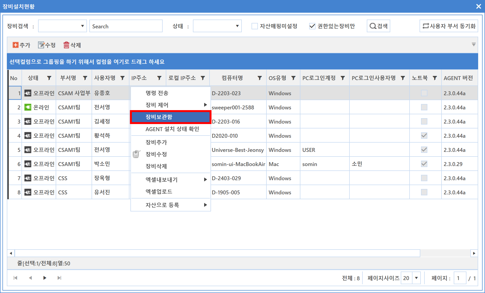
- 장비보관함에서 추가

장비보관함에서 장비 삭제 방법
- 장비보관함에서 장비 선택후 삭제
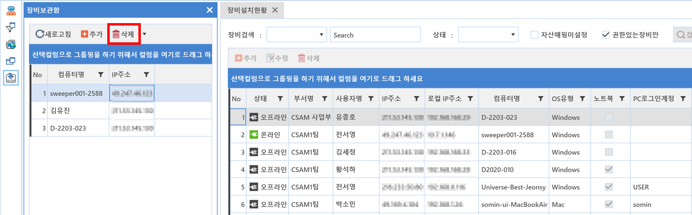
- 장비보관함에서 전체 삭제

© Copyright SWeeper Inc.. All Rights Reserved
2. 홈
Source: https://www.sweeper.or.kr/etc/manual/2.html
2. 홈


MENU / HOME
SWeeper
운용을 위한 환경설정 메뉴입니다.
| THE SOFTWARE MANAGEMENT |
© Copyright SWeeper Inc.. All Rights Reserved
2-1. 환경설정
Source: https://www.sweeper.or.kr/etc/manual/21.html
2-1. 환경설정
2. 홈 ››


라이선스 및 서버, 에이전트, 기능 동작에 대한 환경설정을 할 수 있는 메뉴입니다. 라이선스를 제외한 일반, 소프트웨어, 배포 환경설정은 각 기능메뉴의 런처 다이얼로그를 통해 설정가능합니다.
환경설정
런처다이얼로그
아래 그림에 표시된 런처다이얼로그를 선택하면 해당 환경설정 화면이 팝업됩니다.

참고사항
SWeeper 제품을 설치후 라이선스 만료일이 다가오면, 관리콘솔 로그인시 메세지 창으로 알려줍니다.
(라이선스 만료 3개월 전 1회, 2개월전 1회, 1개월 전 무한)
© Copyright SWeeper Inc.. All Rights Reserved
2-1-1. 라이선스설정
Source: https://www.sweeper.or.kr/etc/manual/211.html
2-1-1. 라이선스설정


SWeeper 제품의 라이선스 정보를 확인하고 변경할 수 있습니다.
- 회사명 : 구매회사명을 표시합니다.
- 라이선스 키 : 라이선스 키 정보를 표시합니다.
- 라이선스 변경 : 라이선스 정보를 변경합니다. (슈퍼관리자로 로그인시에만 버튼 표시됨)
- 라이선스 수 : 구매수량을 표시합니다.
- 라이선스 만료일 : 라이선스 만료일자를 표시합니다.
© Copyright SWeeper Inc.. All Rights Reserved
2-1-2. 일반설정
Source: https://www.sweeper.or.kr/etc/manual/212.html
2-1-2. 일반설정


SWeeper로 자산관리에 앞서 기본적인 설정을 입력하는 곳으로 관리콘솔, 에이전트, 서버, 원격제어, 메일서버의 환경설정을 할 수 있습니다.
© Copyright SWeeper Inc.. All Rights Reserved
2-1-2-1. 관리콘솔
Source: https://www.sweeper.or.kr/etc/manual/2121.html
2-1-2-1. 관리콘솔
2. 홈 ›› 2-1. 환경설정 ›› 2-1-2. 일반설정 ››


관리콘솔에서 사용될 언어에 대한 설정을 합니다.

언어 : 콘솔 화면에 표시되는 메뉴, 버튼등에 표시되는 글자의 언어를 변경할 수 있습니다. (현재는 한국어만 지원합니다.)
페이지사이즈 : 콘솔 화면에 표시되는 페이지 사이즈를 변경할 수 있습니다.
자동으로 속성창 실행 : 콘솔 우측에 장비상세속성창을 자동으로 표시합니다.
중복 로그인 차단 : 서로 다른 위치에서 중복 관리자계정 로그인을 차단합니다.
접속허용IP :
- 활성화 : 접속 허용한 IP만 콘솔 접속할 수 있습니다.
- IP주소 : 접속 허용할 IP를 지정합니다.
© Copyright SWeeper Inc.. All Rights Reserved
2-1-2-2. AGENT
Source: https://www.sweeper.or.kr/etc/manual/2122AGENT.html
2-1-2-2. AGENT
2. 홈 ›› 2-1. 환경설정 ›› 2-1-2. 일반설정 ››


사용자 PC에 설치된 에이전트가 기본적인 수행을 위해 필요한 여러가지 설정을 할 수 있습니다.
Agent 포트 : 에이전트에서 서버와 통신하기 위한 대기포트를 설정합니다.
보고 주기/명령 요청 주기(분) : 에이전트가 서버로 보고하는 주기와 또는 에이전트가 수행할 명령을 요청하는 주기를 설정합니다.
- 보고 시간은 향후 PC 사용시간을 산정하는 Data로 사용됩니다.
- 최대 설정시간 : 60분
AGENT 버전 : 에이전트 현재 버전을 표시합니다.
- 처음 서버를 설치한 경우에는 표시되지 않습니다.
- 담당 엔지니어를 통해 에이전트 패치가 있었을 경우에만 표시됩니다.
AGENT 버전 (MAC) : MAC 에이전트 현재 버전을 표시합니다.
- 처음 서버를 설치한 경우에는 표시되지 않습니다.
- 담당 엔지니어를 통해 에이전트 패치가 있었을 경우에만 표시됩니다.
초기 부서 : 에이전트 설치 후 기본 설정될 부서를 설정합니다.
장기미사용장비전환기준(일) : 장기 미사용장비로 전환되는 기준일을 설정합니다.
- 보고시간을 기준으로 하며 최근 보고일자 기준으로 설정된 전환 기준일만큼 보고가 없을 경우 장기미사용 상태로 변경됩니다.
- 최대 설정시간 : 180분
설치유도 여부 : 설치유도 여부를 설정합니다.
수신메시지 삭제 (일) : 설정한 일수가 지난 메시지를 삭제합니다.
-
0 (기본) : 메시지를 삭제하지 않습니다.
-
0으로 설정시 사용자 화면에서 삭제일 항목이 활성화 되어, 사용자 지정 가능합니다. (12-3-2-3. 환경설정 참고)
-
n일 : 현재일 기준 n+1 일 이전 메시지를 삭제합니다.
-
사용자 화면에서는 수신메시지 삭제일 항목이 비활성화 됩니다. (관리자 설정에 따라 동작)
-
최대 설정시간 : 180일
네트워크검색설정
- [일반정보 - Agent - 네트워크검색 설정]에서 Agent는 네트워크 정보를 검색하여 서버에 보고하는데, 이에 대한 설정입니다.
-
검색 프로토콜 : 검색에 포함할 프로토콜을 선택합니다.
-
SNMP : SNMP 설정이 되어 있는 Network, 프린터 장비검색을 위해 사용됩니다. (SNMP 인증인 public으로 합니다.)
-
NetBIOS : 장비의 컴퓨터명, 워크그룹을 검색하기 위해 사용합니다.
-
검색 쓰레드개수 : 검색에 사용할 쓰레드 개수를 설정합니다.
-
쓰레드 개수가 많을 수록 검색 장비 PC의 성능저하가 발생할 수 있으므로 5 이상 설정하지 않을 것을 권장합니다.
-
검색 주기 (분) : 네트워크 검색 시간 주기를 설정합니다.
-
검색 시간이 짧을 수록 실시간 검색 결과 신뢰성이 높아집니다.
-
검색네트워크 범위 : 검색할 네트워크 범위를 Network 단위가 아닌 Range로 설정합니다.
네트워크차단 예외
- 네트워크 범위 : 네트워크 차단시에 연결 허용할 범위를 지정합니다.
© Copyright SWeeper Inc.. All Rights Reserved
2-1-2-3. 서버
Source: https://www.sweeper.or.kr/etc/manual/2123.html
2-1-2-3. 서버
2. 홈 ›› 2-1. 환경설정 ›› 2-1-2. 일반설정 ››


서버 동작에 대한 환경설정을 할 수 있습니다.

- 명령서버 포트 : 명령서버와 에이전트간 통신하기 위한 대기 포트를 설정할 수 있습니다.
- 명령서버 연결유지용 대기 포트 : 공유기 등과 같은 NAT 장비 내부 에이전트와 통신하기 위한 연결유지용 대기 포트를 설정할 수 있습니다.
-
서버 보고 주기(분) : 서버의 상태 확인을 위한 보고 주기 시간 간격을 설정할 수 있습니다.
-
최대 설정시간 : 60분
-
명령여부조회주기(분) : 서버가 에이전트에 수행할 명령이 있는지 조회하는 주기를 설정합니다.
-
최대 설정시간 : 60분
© Copyright SWeeper Inc.. All Rights Reserved
2-1-2-4. 원격제어
Source: https://www.sweeper.or.kr/etc/manual/2124.html
2-1-2-4. 원격제어
2. 홈 ›› 2-1. 환경설정 ›› 2-1-2. 일반설정 ››


원격제어에 대한 환경설정을 할 수 있습니다.
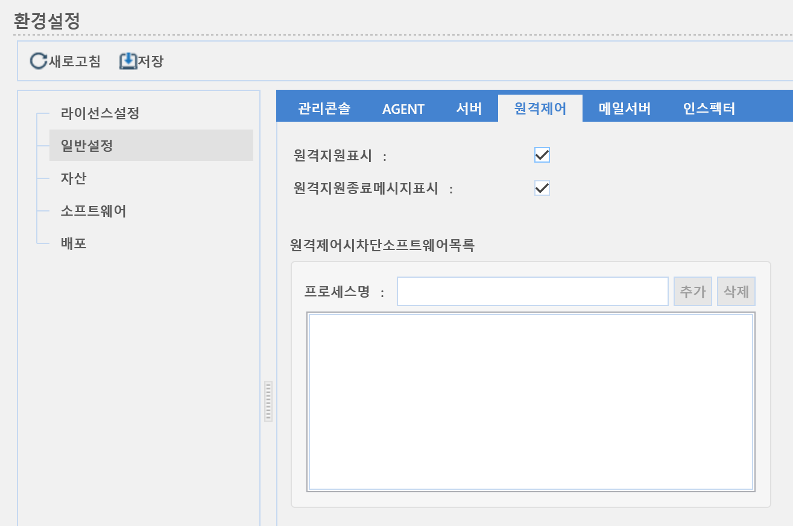
- 원격지원 표시 여부 : PC에 원격지원을 했을 경우 화면에 "원격지원 중"이라는 상태 표시 여부를 설정합니다.
- 원격지원 종료 메시지 표시 여부 : 원격지원 완료 후 종료 시 원격 접속 시간 및 관리자 정보를 표시하는 메시지 팝업 여부를 설정합니다.
- 원격제어 시 차단 소프트웨어 목록 : 원격제어 시 보안을 위한 특정 실행파일을 실행할 수 없도록 하는 설정을 합니다.
참고사항
-
강제 원격제어시에는 "원격지원 표시 여부"와 "원격지원 종료 메시지 표시여부" 옵션에 관계없이, 무조건 표시됩니다.
-
원격제어시, 콘솔 관리자 PC에 TCP 8230~8300 중 미사용 포트가 Listening 되며 에이전트 접속 대기합니다.
원격제어 사용 포트가 차단되지 않도록 방화벽 설정을 점검 바랍니다.
-
다른 사람이 해당 PC에 원격데스크톱으로 연결한 경우, 원격제어 동의 메시지창이 사용자에게 전달되지 않아, 원격제어가 불가능합니다.
-
관리콘솔 로그인 접속 아이피와 동일한 접속 IP 주소를 가진 장비는 원격 제어할 수 없습니다.
원격제어 참고사항
- 원격제어화면에서 "Function-리부팅 후 재접속" 옵션은 에이전트 장비가 30초(5초 간격 6회) 이내에 게스트(관리자)와 연결되지 않으면 관리자 화면에서 무한대기하게 되는 경우가 있습니다.
재기동시 네트워크 카드가 늦게 활성화되는 경우에도 무한대기 현상이 생길수 있습니다. 이때는 다시 연결을 시도하시기 바랍니다.
© Copyright SWeeper Inc.. All Rights Reserved
2-1-2-5. 메일서버
Source: https://www.sweeper.or.kr/etc/manual/2125.html
2-1-2-5. 메일서버
2. 홈 ›› 2-1. 환경설정 ›› 2-1-2. 일반설정 ››


사용자가 관리자에게 SW신청을 했거나, 새로운 장비가 추가되는 등의 이벤트가 발생했을 때, 담당자에게 해당 내용을 알려주기 위해 설정합니다.
메일서버
- 메일서버SSL 사용여부 : SSL(Secure Socket Layer) 사용여부를 설정합니다.
- 메일서버계정 : 메일 전송에 사용될 메일 서버 계정을 입력합니다.
- 메일서버주소/아이피 : 메일 서버의 도메인 주소 또는 IP Address를 입력합니다.
- 메일서버비번: 메일 서버 계정의 비밀번호를 입력합니다.
- 메일서버포트 : 메일 서버 대기 포트를 입력합니다.
- 이벤트로그 발생 시 메일 전송 여부 : 이벤트 로그 발생 시 메일 알림을 위한 메일 전송 여부를 설정합니다.
알람설정
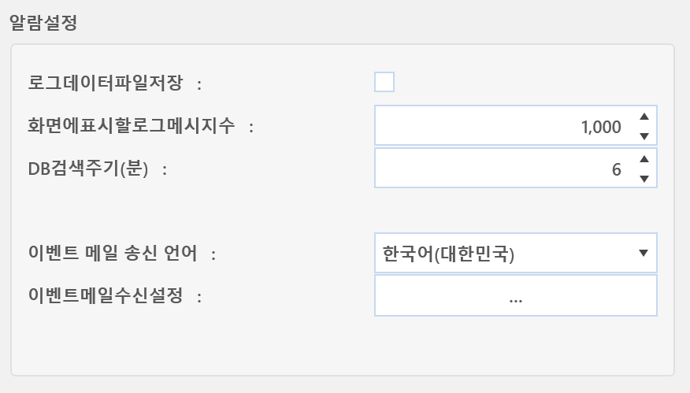
- 로그 데이터 파일 저장 : 콘솔을 실행한 후 발생하는 오류나 알람 정보등을 로컬에 저장할지 여부를 설정합니다.
- 화면에 표시할 로그 메시지 수 : 콘솔 작업 메시지 창에 표시되는 로그의 최대 열 수를 설정합니다.
-
DB 검색 주기 : 주기적으로 알람 정보를 검색하는 주기를 설정합니다.
-
최대설정시간 : 1440분
-
이벤트 메일 송신 언어 : 발송 메일 언어를 설정합니다. (현재는 한국어만 설정가능합니다.)
-
이벤트 메일 수신 설정 : 특정 이벤트가 발생할 때 발송되는 메일 정보를 설정합니다.
-
2-1-2-5-1 에서 자세히 설명합니다.
하드디스크
-
디스크 임계치 (%) : 에이전트 PC가 입력한 임계치를 초과할 경우 관리자 알림 및 메일이 전송됩니다.
-
최대 임계치 : 100%
참고사항
- Windows : NONE, TLS 지원
- Linux : TLS, SSL 지원
-
Windows, Linux 서버에서 TLS 로 설정시, 참고사항입니다.
-
SSL 선택
-
Gmail.com 포트 : 587
-
Gmail 이용시, 구글계정관리 - 보안 - "보안 수준이 낮은 앱의 엑세스" 사용 체크
- 데이터서버 재시작 또는 즉시반영
© Copyright SWeeper Inc.. All Rights Reserved
2-1-2-5-1. 이벤트메일 수신설정
Source: https://www.sweeper.or.kr/etc/manual/21251.html
2-1-2-5-1. 이벤트메일 수신설정
2. 홈 ›› 2-1. 환경설정 ›› 2-1-2. 일반설정 ›› 2-1-2-5. 메일서버 ››


특정 이벤트가 발생했을 때, 관리자에게 각 이벤트별 어떠한 내용으로 알림메일을 발송할 지에 대한 설정을 합니다. 이렇게 설정된 이벤트들은 지정된 관리자에게 자동으로 메일 발송이 됩니다. 메시지를 받기 위한 관리자 설정은 9-1-1. 관리자 관리에서 설명합니다.
이벤트 메일 수신설정
- 해당 항목을 클릭합니다.

- 각 항목에 대해 수정

-
설명
-
[@Event]
- EquipNew(신규장비), SwRequest(SW신청), AssetNew(신규자산) 같은 이름으로 표기
- [@EquipId]
- 장비키가 표기
- [@Time]
- 발생시간 표기
- [@Contents]
- Contents 내용 표기
- [@IP]
- IP 표기
- [@User]
-사용자 표기
- [@Dept]
-부서 표기
- [@LicenseType]
- 라이선스타입 표기
- 저장
참고사항
-
이벤트 메일을 수신하기 위해서는 메일서버 설정이 반드시 필요합니다.
-
현재 이벤트는 아래 5개에 대해서만 가능합니다.
- 신규자산
- 새로운 자산이 추가된 경우
- 장비신규 설치
- 새로운 장비에 에이전트를 설치한 경우
- 디스크 임계치 초과
- 디스크 임계치가 초과한 경우
- SW신청
- 사용자가 SW를 신청한 경우
- 소프트웨어 구매 만료
-
소프트웨어 만료일이 15일 이하인 경우
-
이벤트 메일 수신 예
- 설정
- 결과

© Copyright SWeeper Inc.. All Rights Reserved
2-1-2-6. 인스펙터
Source: https://www.sweeper.or.kr/etc/manual/2126.html
2-1-2-6. 인스펙터
2. 홈 ›› 2-1. 환경설정 ›› 2-1-2. 일반설정 ››


인스펙터에 대한 환경설정을 할 수 있습니다.
- 정밀점검 : 정밀점검 여부를 설정합니다.
- 폰트포함검색 : 폰트를 포함하여 검색할지 여부를 설정합니다.
- 폰트만 검색 : 폰트만 검색할지 여부를 설정합니다.
- 검색UI표시여부 : 인스팩터 명령시, 사용자 PC에 인스펙터 UI를 표시할지 여부를 설정합니다.
- 전체디스크대상검색 : 전체디스크 대상으로 검색할지 여부를 설정합니다.
- 검사 후 삭제여부 : 인스펙터 검사가 종료된 후, PC 인스펙터 관련 파일들을 삭제할 지 여부를 설정합니다.
© Copyright SWeeper Inc.. All Rights Reserved
2-1-3. 자산
Source: https://www.sweeper.or.kr/etc/manual/213.html
2-1-3. 자산


SWeeper 자산관리에 필요한 설정을 할 수 있습니다.
© Copyright SWeeper Inc.. All Rights Reserved
2-1-3-1. AGENT
Source: https://www.sweeper.or.kr/etc/manual/2131AGENT.html
2-1-3-1. AGENT
2. 홈 ›› 2-1. 환경설정 ›› 2-1-3. 자산 ››


자산기능 사용시, 유용한 설정들을 변경할 수 있습니다. 관리자는 사용자PC에 11-3-1-1. 기본정보의 "사용자 정보입력"과 같은 창을 보낼수 있습니다.
SWeeper에서는 "사용자 정보입력" 창의 자산 입력이 초기에는 비활성화 되도록 기본설정이 되어있어, 사용자는 입력을 할 수 없도록 하였습니다.
본 설정에서는 이를 활성화하여 입력하도록 하며, 때에 따라서는 강제로 입력하도록 설정할 수 있습니다.
-
자산 입력 활성화 여부
-
자산을 입력할 수 있도록 활성화 합니다.
-
자산 입력 필수 여부
-
사용자가 자산정보 입력을 필수화 합니다.
© Copyright SWeeper Inc.. All Rights Reserved
2-1-3-2. 바코드
Source: https://www.sweeper.or.kr/etc/manual/2132.html
2-1-3-2. 바코드
2. 홈 ›› 2-1. 환경설정 ›› 2-1-3. 자산 ››


SWeeper 에서는 자산의 바코드를 출력하는 기능을 제공합니다.
출력한 바코드는 PC, 모니터 등의 장비에 부착하고, 실물자산앱을 통해 바코드를 스캔하면 그 자산의 정보를 불러와 실사를 진행할 수 있습니다.
SWeeper 설치 시 기본 템플릿을 제공하며, 바코드템플릿은 추가 수정 삭제가 가능합니다.
템플릿 설정 방법
-
이름
-
바코드 템플릿 이름을 설정합니다.
-
프린터
-
바코드 프린터를 설정합니다.
-
용지의 가로길이 (mm)
-
용지의 가로길이를 설정합니다.
-
용지의 세로길이 (mm)
-
용지의 세로길이를 설정합니다.
-
용지회전
-
용지 인쇄시 회전 여부를 설정합니다.
-
출력내용
-
바코드 출력 내용을 설정합니다.
- 출력 내용 수정을 원하는 경우 담당 엔지니어에게 문의 바랍니다.
© Copyright SWeeper Inc.. All Rights Reserved
2-1-4. 소프트웨어
Source: https://www.sweeper.or.kr/etc/manual/217.html
2-1-4. 소프트웨어


소프트웨어 기능 동작과 관련된 환경설정을 할 수 있습니다.
© Copyright SWeeper Inc.. All Rights Reserved
2-1-4-1. 기본설정
Source: https://www.sweeper.or.kr/etc/manual/2141.html
2-1-4-1. 기본설정
2. 홈 ›› 2-1. 환경설정 ›› 2-1-4. 소프트웨어 ››


에이전트의 소프트웨어 검색과 관련된 설정이 존재하며 초기 부팅 시, 속도저하 등이 발생할 경우, 다음 설정으로 이를 해소할 수 있습니다.
-
경고 메시지 주기(초)
-
제거유도 메시지 팝업 주기를 초단위로 설정할 수 있습니다.
-
검색 중 지연 시간
-
지속적으로 멈춤없이 검색할 경우 PC 속도에 영향을 줄 수 있으므로 검색 중 일시적으로 중지 후 재검색 할 수 있는 시간을 설정할 수 있습니다.
-
검색 전 지연 시간 :
-
에이전트는 PC 부팅 완료와 동시에 실행되어 검색 기능이 동작됩니다. 이 때 다른 프로그램도 함께 동작되어 발생될 수 있는 성능저하를 방지하기 위해 검색 전 지연시간을 설정할 수 있습니다.
-
휴면 라이선스(일)
-
라이선스 할당된 소프트웨어를 지정한 일자 동안 사용하지 않을 경우 라이선스 상태를 휴면 라이선스로 변경하기 위한 설정입니다.
-
한눈에보기 검색기간(일)
-
한눈에보기에서 데이터 조회기간을 설정할 수 있습니다.
-
제거유도 설정
-
제거유도창 문구와 경고 횟수를 수정 할 수 있습니다.
-
SW자동회수 설정
-
설정한 정책에 의해 할당된 소프트웨어 라이선스를 자동회수 할 수 있도록 설정할 수 있습니다.
© Copyright SWeeper Inc.. All Rights Reserved
2-1-4-1-1. 제거유도 설정
Source: https://www.sweeper.or.kr/etc/manual/21411.html
2-1-4-1-1. 제거유도 설정
2. 홈 ›› 2-1. 환경설정 ›› 2-1-4. 소프트웨어 ›› 2-1-4-1. 기본설정 ››


인가되지 않은 SW가 사용자의 PC에 이미 설치된 경우, 관리자는 SW설정에서 이를 삭제할 수 있도록 제거유도를 할 수 있습니다. 이 때 사용자 PC에 팝업되는 제거유도창의 메시지 문구를 관리자나 기업이 원하는 문구로 수정이 가능합니다.
설정 방법
1) 제거유도 설정 우측의 버튼을 클릭합니다.

2) 경고메시지 횟수 및 내용을 수정합니다.

-
설명
-
경고횟수 : 불법 소프트웨어를 설치한 사용자 PC에 몇번의 경고메시지 팝업할 지 횟수 지정
- 제거유도창 수정 : 기본 제공하는 제거유도창을 수정하고자 할 때 체크
- 헤드 문자열 : 한줄 40글자까지 입력 가능합니다.(다음줄 입력 불가)
- 내용 1문자열 : 한줄 당 50자까지만 출력됩니다. (입력은 되지만 실제 출력시 잘립니다.)
- 추가 입력을 원하면 다음줄에 입력하세요.
- 내용 2문자열 : 한줄 당 40자까지만 출력됩니다. (입력은 되지만 실제 출력시 잘립니다.)
- 추가 입력을 원하면 다음줄에 입력하세요.
- 제거유도 이미지: : 제거 유도창에 나타나는 이미지로 지원하는 이미지의 최대 사이즈는 585*400입니다.
3) Agent 재시작
적용할 장비(그룹)를 선택하고, 우클릭 명령으로 에이전트를 재시작 합니다. 자세한 사항은 10-4-4-2. AGENT 재시작 을 참고하시기 바랍니다.
참고사항
-
제거유도창을 띄우기 위해서는 해당 PC에 "SW자산관리"라는 작동기능과 "경고창 표시"라는 SW정책이 있어야 합니다.
-
관리콘솔에서 변경한 문구는 에이전트가 재시작될 때 적용됩니다.
-
SWeeper에서 기본 제공하는 제거 유도 문구는 다음과 같습니다.
© Copyright SWeeper Inc.. All Rights Reserved
2-1-4-1-2. SW자동회수 설정
Source: https://www.sweeper.or.kr/etc/manual/21412SW.html
2-1-4-1-2. SW자동회수 설정
2. 홈 ›› 2-1. 환경설정 ›› 2-1-4. 소프트웨어 ›› 2-1-4-1. 기본설정 ››


SW라이선스 관리는 사용자들의 변동(인사이동, 퇴사, 미사용등)시, 적절한 SW할당 및 회수를 하는 것입니다.
그러나 실제 운영환경에서는 종종 관리 누락이 발생하고, 장기간 지속될 경우, 회수되지 못한 SW들이 쌓이게됩니다.
이러한 상황이 발생하지 않도록 사전에 SW자동회수 조건을 만들고 실행하여, 항시 가용할 수 있는 SW를 확보할 수 있도록 하기위한 설정입니다.
설정 방법
- SW 자동회수설정 우측의 버튼을 클릭합니다.
- SW 자동회수 설정창이 팝업되며, 좌측 상단에 있는 추가 버튼을 클릭합니다.
- SW 자동회수 규칙을 설정할 수 마법사가 팝업되며 다음 버튼을 클릭합니다.
- 규칙이름과 정보삭제, 회수에 대한 설정을 합니다. 설정을 완료한 뒤 다음 버튼을 클릭합니다.

- 규칙이름 : 설정을 관리할 규칙 이름을 입력 합니다.
- 인가 설치정보 삭제 : 합법으로 판단한 소프트웨어 설치 정보 삭제 여부를 설정합니다.
- 미인가 설치정보 삭제 : 불법으로 판단한 소프트웨어 설치 정보 삭제 여부를 설정합니다.
- 장비별 라이선스 회수 : 장비 단위로 할당된 라이선스 회수 여부를 설정합니다.
- 사용자별 라이선스 회수 : 사용자 단위로 할당된 라이선스 회수 여부를 설정합니다.
-
휴면라이선스 회수 : 휴면라이선스 회수 여부를 설정합니다.
-
한번이라도 실행한 SW중에서, 기준일동안 실행한 적이 없는 SW를 회수합니다.
-
기준일 : 환경설정 > 환경설정 > 소프트웨어 > 기본설정 > 휴면라이선스(일)
-
장비와 자산, 사용자 상태, 접속일 기준 설정을 합니다.
-
자동 회수의 핵심되는 설정으로, 자산과 사용자 상태에 따른 회수를 많이 사용합니다.
-
마지막으로 요약화면이 나타나며 설정 내용을 확인한 뒤 완료 버튼을 클릭하면 설정 완료 됩니다.
- 설정 완료된 규칙이 등록된 것을 확인 합니다.
© Copyright SWeeper Inc.. All Rights Reserved
2-1-4-2. DB설정
Source: https://www.sweeper.or.kr/etc/manual/2142DB.html
2-1-4-2. DB설정
2. 홈 ›› 2-1. 환경설정 ›› 2-1-4. 소프트웨어 ››


SWDB DB업데이트와 SPC 라이선스 정보를 설정할 수 있습니다.

-
DB 업데이트 설정
-
SWDB 생성시간 : 소프트웨어 DB가 만들어진 시간을 표시합니다.
- SWDB 파일 버전 : 소프트웨어 DB 파일 버전을 표시합니다.
- SWDB/+DB 연동시간 : 소프트웨어 DB 연동 예약 시간을 설정 합니다.
-
파일생성 : 관리자가 변경한 SWDB DB에 대한 내용을 파일로 생성하며, 추후 에이전트가 재시작(소프트웨어 검색)시 변경된 파일을 가져가도록 하기 위한 버튼입니다. 예약시간에 자동 생성되지만, 즉시 변경이 필요한 경우 클릭합니다.
-
SWDB 설정 : 한국소프트웨어저작권협회(SPC)의 소프트웨어 DB 연동을 위한 설정입니다.
- 연동 여부 : 연동 여부를 설정합니다.
- DB 동기화 : 강제 연동이 필요한 경우 클릭합니다.
-
오프라인 동기화 : 폐쇄망으로 운영되는 고객사의 경우, 수동으로 DB동기화를 하기 위한 버튼입니다.
-
엔지지어로부터 제공된 최신 DB파일을 선택하면 최신화가 됩니다.
-
최종 동기화 시간 : 최종 동기화 되었던 시간을 표시합니다.
-
동기화 결과에 상관 없이 업데이트 됩니다.
-
최종 동기화 성공시간 : 동기화 최종적으로 성공되었던 시간을 표시합니다.
- 동기화 버전 : 공통 SWDB의 최근 동기화된 버전을 표시합니다.
-
동기화 버전 (커스텀) : 커스텀 SWDB의 최근 동기화된 버전을 표시합니다.
-
해당 기능을 사용하기 위해서는 담당 엔지니어와 협의하셔야 합니다.
-
라이선스만료일 : SWDB 라이선스 만료일이 표시됩니다.
-
폰트 동기화 : 폰트 동기화가 필요한 경우 클릭합니다.
-
+DB 설정 : 한국소프트웨어저작권협외(SPC)의 SAMDB 연동을 위한 설정입니다.
- 연동여부 : 연동 여부를 설정합니다.
- DB 동기화 : 강제 연동이 필요한 경우 클릭합니다.
-
오프라인 동기화 : 폐쇄망으로 운영되는 고객사의 경우, 수동으로 DB동기화를 하기 위한 버튼입니다.
-
엔지니어로부터 제공된 최신 DB파일을 선택하면 최신화가 됩니다.
-
최종 동기화 시간 : 최종 동기화 되었던 시간을 표시합니다.
-
동기화 결과에 상관 없이 업데이트 됩니다.
-
최종 동기화 성공시간 : 동기화 최종적으로 성공되었던 시간을 표시합니다.
- 동기화 버전 : 최근 동기화된 버전을 표시합니다.
- 라이선스 키 : SAMDB 라이선스 키를 입력합니다.
- 등록 아이피 : SAMDB 인증에 필요한 서버 IP를 입력합니다.
- 등록 MAC : SAMDB 인증에 필요한 서버 MAC을 입력합니다.
주의사항
SAMDB설정에서 등록아이피와 등록MAC은 SAMDB사용을 위해 소프트웨어 저작권 협회에 제공한 정보로, 해당 정보의 서버만이 SAMDB와 동기화를 할 수 있습니다. 만약 해당 서버의 HW문제로 아이피나 MAC정보가 변경되는 경우에는 반드시 SPC에 해당 내용(네트워크 정보 변경)을 통보하여, 정보 변경을 하시기 바랍니다.
© Copyright SWeeper Inc.. All Rights Reserved
2-1-5. 배포
Source: https://www.sweeper.or.kr/etc/manual/218.html
2-1-5. 배포


배포기능 동작과 관련된 환경설정을 할 수 있습니다.
© Copyright SWeeper Inc.. All Rights Reserved
2-1-5-1. 에이전트
Source: https://www.sweeper.or.kr/etc/manual/2151.html
2-1-5-1. 에이전트
2. 홈 ›› 2-1. 환경설정 ›› 2-1-5. 배포 ››


배포와 관련된 에이전트 동작에 대한 환경설정을 할 수 있습니다.
- 배포진행바 표시 여부 : 배포가 될 경우 PC 화면에 배포 진행에 대한 상태표시 여부를 설정할 수 있습니다.
- P2P 가능 HDD 여유공간(GB) : P2P 기능을 할 경우 PC의 배포 가능한 HDD 여유공간을 확인하여 동작할 수 있는 설정을 할 수 있습니다.
- 배포결과 보고주기(분) : 서버에 배포 결과 보고 주기에 대한 시간을 분단위로 설정할 수 있습니다.
© Copyright SWeeper Inc.. All Rights Reserved
2-1-5-2. 서버
Source: https://www.sweeper.or.kr/etc/manual/2152.html
2-1-5-2. 서버
2. 홈 ›› 2-1. 환경설정 ›› 2-1-5. 배포 ››


배포와 관련된 서버의 환경설정을 할 수 있습니다.
- 배포서버 대기 포트 : 배포 서버가 운영 서버 및 에이전트와 통신하기 위한 대기 포트를 설정합니다.
- 배포서버 동기화 주기(분) : 배포서버의 동기화 주기를 분단위로 설정합니다.
- 배포대상 생성 주기(분) : 배포대상 생성 주기를 분단위로 설정합니다.
© Copyright SWeeper Inc.. All Rights Reserved
2-2. 시작화면 설정
Source: https://www.sweeper.or.kr/etc/manual/22.html
2-2. 시작화면 설정
2. 홈 ››


관리콘솔 로그인시 지정한 메뉴가 첫페이지에 보여지도록 하는 메뉴입니다. 관리콘솔 접속시 자주 사용하는 메뉴를 설정하면, 로그인시 자동으로 설정한 화면이 보여집니다.
설정방법
참고사항
복수개의 메뉴항목을 설정목록으로 지정할 수 있습니다. 복수개를 지정하고 로그인 했을 경우에는 목록의 맨 아래의 메뉴가 먼저 보여집니다.
© Copyright SWeeper Inc.. All Rights Reserved
2-3. 콘솔 정보
Source: https://www.sweeper.or.kr/etc/manual/23.html
2-3. 콘솔 정보
2. 홈 ››


콘솔 프로그램의 상세정보를 확인할 수 있습니다.

© Copyright SWeeper Inc.. All Rights Reserved
2-4. 뉴스
Source: https://www.sweeper.or.kr/etc/manual/24.html
2-4. 뉴스
2. 홈 ››


한국소프트웨어저작권협회에서 제공하는 최신 News 정보를 Web 형태로 한눈에 확인할 수 있습니다.
-
SWDB
-
한국소프트웨어저작권협회(SPC)에서 제공하는 소프트웨어 DB의 업데이트 현황을 확인 할 수 있습니다.
-
핫이슈 소프트웨어
-
최근의 이슈로 떠오르는 소프트웨어가 무엇인지 확인 할 수 있습니다.
-
대체 소프트웨어
-
불법 소프트웨어를 대체할 수 있는 프리웨어를 소개합니다.
-
활용 팁
-
각 기업에서 활용 할 만한 SWeeper 제품 활용 법을 알려드립니다.
-
뉴스 클리핑
-
각 기업의 IT담당자께서 알아두시면 좋을 만한 주요 뉴스를 확인 할 수 있습니다.
-
신규 출시 정보
-
SWeeper에 새롭게 추가된 기능에 대해 소개해 드립니다.
주의사항
New 정보를 보기 위해서는 해당 고객사에서 한국소프트웨어저작권협회(SPC) 웹서버로 접속이 가능해야 합니다. 외부로의 인터넷 접속이 안되는 폐쇄망이거나, 방화벽과 같은 보안장비에서 웹사이트 접속이 차단된 경우 화면 내용이 표시되지 않습니다.
© Copyright SWeeper Inc.. All Rights Reserved
2-5. 도움말
Source: https://www.sweeper.or.kr/etc/manual/25.html
2-5. 도움말
2. 홈 ››


SWeeper 사용시, 궁금한 사항을 언제든 확인할 수 있도록 매뉴얼을 제공합니다.
주의사항
매뉴얼은 관리콘솔에서 단축기(F1)을 통해 확인할 수 있으나, SPC 웹서버를 접속할 수 있어야만 내용을 확인할 수 있습니다. 폐쇄망 환경이거나 방화벽과 같은 보안장비에서 웹사이트 접속을 차단하는 경우에는 확인이 불가능 합니다.
© Copyright SWeeper Inc.. All Rights Reserved
2-6. 비밀번호 변경
Source: https://www.sweeper.or.kr/etc/manual/26.html
2-6. 비밀번호 변경
2. 홈 ››


콘솔 프로그램에 접속한 계정의 비번벌호를 변경할 수 있습니다.

현재 사용 중인 비밀번호 입력 후 새 비밀번호를 입력하여 확인 버튼을 클릭하면 변경이 완료됩니다.
© Copyright SWeeper Inc.. All Rights Reserved
3. 공통
Source: https://www.sweeper.or.kr/etc/manual/3.html
3. 공통


MENU | 공통
SWeeper
어느 메뉴에서든 표시되는 기능들이며 자주 사용되는 기능들에 한해서 도구와 공통기능으로 분류됩니다.
| THE SOFTWARE MANAGEMENT |
© Copyright SWeeper Inc.. All Rights Reserved
3-1. 도구
Source: https://www.sweeper.or.kr/etc/manual/31.html
3-1. 도구
3. 공통 ››


도구는 4개의 센터(명령센터, 검색센터, 알림센터, 정책센터)로 구성되며, 항상 유용하게 사용할 수 있는 기능입니다.

© Copyright SWeeper Inc.. All Rights Reserved
3-1-1. 명령센터
Source: https://www.sweeper.or.kr/etc/manual/311.html
3-1-1. 명령센터


명령에 대한 모든것을 관리하는 곳으로, 관리자가 에이전트에 명령을 보내기 위한 곳으로써, 명령을 수행하거나, 수행한 결과를 확인할 수 있습니다. 또한 반복적인 명령도 수행 및 확인이 가능합니다.
참고사항
- 본 메뉴에서는 프린트 기능이 제공되지 않습니다.
© Copyright SWeeper Inc.. All Rights Reserved
3-1-1-1. 명령전송 결과
Source: https://www.sweeper.or.kr/etc/manual/3111.html
3-1-1-1. 명령전송 결과
3. 공통 ›› 3-1. 도구 ›› 3-1-1. 명령센터 ››


에이전트에 전송된 명령의 현황을 검색할 수 있으며, 상태 및 진행률, 그래프로 구성된 결과를 확인할 수 있습니다.

참고사항
반복명령을 설정하는 경우, 관리자명이 표시되지 않습니다. (설정된 시간에 자동으로 명령을 수행하기 때문에 )
명령 실행 이력
명령이 실행된 장비들의 상세 정보를 확인할 수 있습니다.
- 처리상태 : 명령의 처리 상태를 알려줌
- 상세결과 : 상태에 대한 상세내역이 있는 경우 보여줌
참고사항
원격제어의 경우 시작시간 항목이 따로 존재하며, 이는 원격제어 시작시간을 의미합니다.
원격제어의 명령실행이력에서 종료시간은 원경제어명령전송 종료시간이 아닌, 원격제어 종료시간을 의미합니다.
명령 상세 정보
전송된 명령의 설정 상세 정보를 확인할 수 있습니다.

명령 기능 사용
특정 장비를 선택하여 마우스 우클릭 할 경우 표시되는 기능을 설명합니다.

-
명령추가 : 새로운 명령을 신규로 생성하여 전송하는 기능입니다.
-
추가 버튼 또는 마우스 우클릭하여 명령 추가 메뉴를 선택합니다.
- 아래 그림과 같은 명령 생성 Wizard가 팝업됩니다.

- 추가 버튼 또는 장비보관함을 클릭하여 명령 대상을 추가한 뒤 다음 버튼을 클릭합니다.
- 전달할 명령을 선택한 뒤 필요한 명령설정을 하고 다음 버튼을 클릭합니다.
-
명령 전송 시간설정을 합니다.
-
시간설정은 예약전송, 반복전송만 가능합니다. (분 단위)
- 반복전송은 반복명령 화면에서 추가해야만 설정 가능합니다.
- 분산전송 : 명령 과부하를 방지하기 위한 설정으로 시간에 분단위로 장비수를 나누어 전송하기 위한 설정입니다.
- 분산 유효 시간 : 분산 전송 시간을 유지하는 시간 설정 입니다.
-
설정이 완료되면 완료버튼을 클릭하여 명령 추가를 완료합니다.
-
명령재전송 : 이미 전송한 명령을 다시 재전송하는 기능입니다.
-
원격제어같은 실시간 명령은 재전송할 수 없습니다.
-
명령복사 : 이미 전송한 명령을 복사하여 명령을 전송할 수 있는 기능이며, 내용 편집이 가능합니다.
-
원격제어같은 실시간 명령은 재전송할 수 없습니다.
-
상태변경 : 전송한 명령 중 긴급히 전송 중지할 경우 사용되며 다시 진행 중으로 변경 가능합니다.
© Copyright SWeeper Inc.. All Rights Reserved
3-1-1-2. 반복명령
Source: https://www.sweeper.or.kr/etc/manual/3112.html
3-1-1-2. 반복명령
3. 공통 ›› 3-1. 도구 ›› 3-1-1. 명령센터 ››


특정 명령을 지정된 시간에 반복적으로 전송할 때, 사용하기 위한 기능입니다. 예를 들어 중요한 메시지를 특정기간에 반복적으로 보내야 하거나, 매일 특정시간에 PC 전원을 꺼야할 때 해당명령을 사용할 수 있습니다.
반복명령
- 반복명령이란 특정 명령을 예약 시간에 맞춰 반복적으로 전송될 수 있도록 하는 기능입니다.
- 예를 들어 특정 시간에 메시지 전송이 설정된 기간동안 지속적으로 팝업되도록 명령이 반복적으로 전송됩니다.
명령 기능

- 추가 : 새로운 반복명령을 신규로 생성하는 기능입니다.
- 수정 : 등록된 반복명령을 수정할 수 있습니다.
- 삭제 : 등록된 반복명령을 삭제할 수 있습니다.
- 상태변경 : 진행 중인 반복명령을 중지 시킬 수 있습니다.
참고사항
-
반복명령은 30분 기다리면 예약명령이 생성되고 수행됩니다.
-
반복명령을 쿼리그룹이나 부서에 내리는 경우. 장비 추가/삭제되면 명령 대상 업데이트는 자정 12시에 반영됩니다.
© Copyright SWeeper Inc.. All Rights Reserved
3-1-1-3. 명령이력
Source: https://www.sweeper.or.kr/etc/manual/3113.html
3-1-1-3. 명령이력
3. 공통 ›› 3-1. 도구 ›› 3-1-1. 명령센터 ››


장비를 검색하여 장비별 전달되었던 명령 정보 및 처리 상태 등을 확인 하거나 명령 종류에 따른 명령 정보 및 처리 상태를 확인 할 수 있습니다.
© Copyright SWeeper Inc.. All Rights Reserved
3-1-2. 검색센터
Source: https://www.sweeper.or.kr/etc/manual/312.html
3-1-2. 검색센터


검색에 대한 모든것을 관리하는 곳으로써, 장비나 부서, 사용자에 대한 검색에 사용합니다.

참고사항
본 메뉴에서는 프린트 기능이 제공되지 않습니다.
© Copyright SWeeper Inc.. All Rights Reserved
3-1-2-1. 장비검색
Source: https://www.sweeper.or.kr/etc/manual/3121.html
3-1-2-1. 장비검색
3. 공통 ›› 3-1. 도구 ›› 3-1-2. 검색센터 ››


조건에 맞는 장비를 쉽게 검색할 수 있으며, 다른 페이지에서 장비 참조용도로 사용할 수 있습니다. 특히, 특정 장비 명령을 사용하기 위한 용도로 메뉴 이동없이 용이하게 사용할 수 있습니다.

참고사항
장비검색에서 부서명 검색은 부서경로를 기준으로 검색됩니다.
© Copyright SWeeper Inc.. All Rights Reserved
3-1-2-2. 부서검색
Source: https://www.sweeper.or.kr/etc/manual/3122.html
3-1-2-2. 부서검색
3. 공통 ›› 3-1. 도구 ›› 3-1-2. 검색센터 ››


부서 정보를 쉽게 조회할 수 있습니다.
참고사항
부서검색에서 부서명 검색은 전체 경로명의 최종 부서를 기준으로 검색하고, 전체 경로명 검색은 부서명이 완전 일치하는 조건으로 검색합니다.
© Copyright SWeeper Inc.. All Rights Reserved
3-1-2-3. 사용자검색
Source: https://www.sweeper.or.kr/etc/manual/3123.html
3-1-2-3. 사용자검색
3. 공통 ›› 3-1. 도구 ›› 3-1-2. 검색센터 ››


사용자 정보를 쉽게 검색할 수 있습니다.
참고사항
사용자검색에서 부서명 검색은 부서전체 경로를 기준으로 검색됩니다.
© Copyright SWeeper Inc.. All Rights Reserved
3-1-3. 알림센터
Source: https://www.sweeper.or.kr/etc/manual/313.html
3-1-3. 알림센터


알림에 대한 모든것을 관리하는 곳으로써, SWeeper를 운용중 발생하는 모든 메일이나 이벤트를 확인할 수 있고, 에이전트에 공지할 내용을 등록/관리에 사용합니다.
© Copyright SWeeper Inc.. All Rights Reserved
3-1-3-1. 메일로그
Source: https://www.sweeper.or.kr/etc/manual/3131.html
3-1-3-1. 메일로그
3. 공통 ›› 3-1. 도구 ›› 3-1-3. 알림센터 ››


장비가 자산등의 신규 장비가 추가되거나 변경되는 사항들에 대한 로그를 확인할 수 있습니다. 이 로그들은 이벤트 메일수신 설정된 관리자에게 자동으로 발송되는 메일의 내용과 동일합니다.
© Copyright SWeeper Inc.. All Rights Reserved
3-1-3-2. 이벤트로그
Source: https://www.sweeper.or.kr/etc/manual/3132.html
3-1-3-2. 이벤트로그
3. 공통 ›› 3-1. 도구 ›› 3-1-3. 알림센터 ››


장비나 자산 등 신규 추가되거나 변경되는 정보를 관리자에게 자동으로 통보하기 위한 이벤트 정보들을 확인할 수 있습니다.

참고사항
+ 버튼이 표시된 항목을 클릭하면, 상세 정보를 확인할 수 있습니다.
© Copyright SWeeper Inc.. All Rights Reserved
3-1-3-3. 공지사항
Source: https://www.sweeper.or.kr/etc/manual/3133.html
3-1-3-3. 공지사항
3. 공통 ›› 3-1. 도구 ›› 3-1-3. 알림센터 ››


에이전트에 표시되는 공지사항 정보를 등록 관리할 수 있습니다.
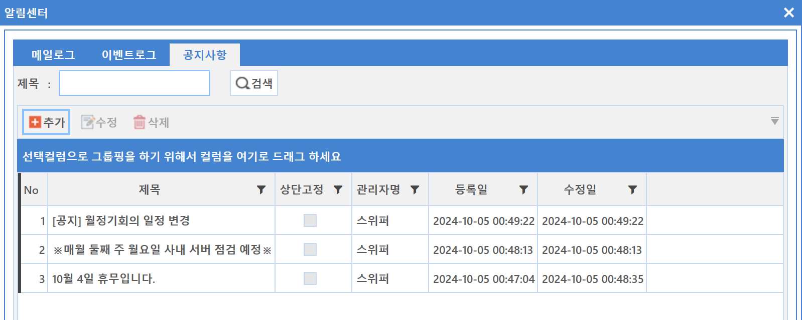
공지사항 기능
- 추가 : 새로운 공지사항을 추가한다.
- 수정 : 공지사항을 수정한다.
- 삭제 : 공지사항을 삭제한다.
에이전트 공지사항 확인
[기본정보] 메뉴를 클릭한 뒤 공지사항 내용을 확인하고 조회 버튼을 클릭하면 공지내용을 확인할 수 있습니다.

© Copyright SWeeper Inc.. All Rights Reserved
3-1-4. 정책센터
Source: https://www.sweeper.or.kr/etc/manual/314.html
3-1-4. 정책센터


정책에 대한 모든 것을 관리하는 센터로, 관리자가 전체 에이전트를 관리하거나 통제하기 위한 모든 정책을 생성하고, 각 장비나 부서등에 해당 정책을 적용할 수 있습니다.
-
작동기능 : 에이전트가 수행할 기능들을 생성/관리합니다.
-
소프트웨어 정책 : 에이전트에 "SW관리" 작동기능이 부여된 경우, 수행할 SW 정책을 생성/관리합니다.
-
사용자인증정책 : 에이전트에 "사용자인증" 작동기능이 부여된 경우, 수행할 사용자인증정책을 생성/관리합니다.
-
시간동기화정책 : 에이전트에 "시간동기화" 작동기능이 부여된 경우, 수행할 시간동기화 정책을 생성/관리합니다.
참고사항
본 메뉴에서는 프린트 기능이 제공되지 않습니다.
© Copyright SWeeper Inc.. All Rights Reserved
3-1-4-1. 정책적용
Source: https://www.sweeper.or.kr/etc/manual/3141.html
3-1-4-1. 정책적용
3. 공통 ›› 3-1. 도구 ›› 3-1-4. 정책센터 ››


3-1-4-2. 정책설정에서 생성한 정책을 에이전트가 수행하기 위해 대상(부서, IP대역, 장비그룹, 장비)을 지정합니다. 정책을 지정하는 방법은 2가지가 있습니다.
- 첫째 : 생성한 정책을 수행할 대상(부서, IP대역, 장비그룹, 장비)을 지정하는 방법
- 둘째 : 대상(부서, IP대역, 장비그룹, 장비)에 생성한 정책을 지정하는 방법
-
정책 적용 버튼
-
정책을 기준으로 대상을 지정
-
아래와 같이 선택합니다.

-
대상을 기준으로 정책을 지정
-
아래와 같이 선택합니다.

© Copyright SWeeper Inc.. All Rights Reserved
3-1-4-1-1. 정책기준 적용
Source: https://www.sweeper.or.kr/etc/manual/3-1-4-1-1.html
3-1-4-1-1. 정책기준 적용
3. 공통 ›› 3-1. 도구 ›› 3-1-4. 정책센터 ›› 3-1-4-1. 정책적용 ››


3-1-4-2. 정책설정에서 생성한 다양한 정책에 대상(부서, IP대역, 장비그룹, 장비)을 지정합니다.
-
적용 방법
-
정책기준으로 변경
- 정책 선택

- 부서/IP대역/장비그룹/장비 선택 (부서선택의 예)

- 적용된 상태

참고사항
-
각각의 다른 정책들에 동일한 부서/IP대역/장비그룹/장비를 중복 지정할 수 없습니다.
-
'A'라는 정책에 "한국소프트웨어저작권협회" 부서를 지정하고, 'B'라는 정책에서 다시 "한국소프트웨어저작권협회" 부서를 지정할 경우, 'A'라는 정책에서 "한국소프트웨어저작권협회"는 자동 제외됩니다.
-
한 정책에서 혹은 여러 정책들에서 지정된 부서/IP대역/장비그룹/장비들은, 우선순위가 존재하며, 장비가 가장 높습니다.
-
부서 < IP대역 < 장비그룹 < 장비
-
'A'라는 정책에 "한국소프트웨어저작권협회" 부서를 지정하고, 'B'라는 정책에 "한국소프트웨어저작권협회" 부서의 장비인 "PC1"을 지정하면, "PC1"은 'B' 정책으로 수행됩니다.
-
정책이나 대상이 변경되면, 별다른 명령수행이 없어도, 해당 [부서/IP대역/장비그룹/장비]에 전달되어 수행됩니다.
© Copyright SWeeper Inc.. All Rights Reserved
3-1-4-1-1-1. 정책 IP대역 관리
Source: https://www.sweeper.or.kr/etc/manual/314111IP.html
3-1-4-1-1-1. 정책 IP대역 관리
3. 공통 ›› 3-1. 도구 ›› 3-1-4. 정책센터 ›› 3-1-4-1. 정책적용 ›› 3-1-4-1-1. 정책기준 적용 ››


3-1-4-1. 정책적용 에서 정책을 수행할 대상을 지정하거나, 특정 대상에 정책을 부여하고자 할 때 해당하는 대상은 총 4개(장비나 장비그룹, IP대역, 부서)가 있습니다. 이중 IP대역에 해당하는 그룹을 설정합니다.
설정 방법
정책적용에서 "대상기준"으로 변경합니다.
- "정책IP대역 관리" 버튼을 클릭합니다.
- "추가" 버튼을 누르고 내용을 입력합니다.
- 확인후 저장된 내용을 확인합니다.
© Copyright SWeeper Inc.. All Rights Reserved
3-1-4-1-2. 대상기준 적용
Source: https://www.sweeper.or.kr/etc/manual/31412.html
3-1-4-1-2. 대상기준 적용
3. 공통 ›› 3-1. 도구 ›› 3-1-4. 정책센터 ›› 3-1-4-1. 정책적용 ››


대상(부서, IP대역, 장비그룹, 장비)에 3-1-4-2. 정책설정 에서 생성한 정책을 지정합니다. 대상을 선택하고, 선택한 대상에 정책을 지정합니다.
-
적용 방법
-
대상기준으로 변경

- [부서/IP대역/장비그룹/장비] 를 선택 (장비 예)
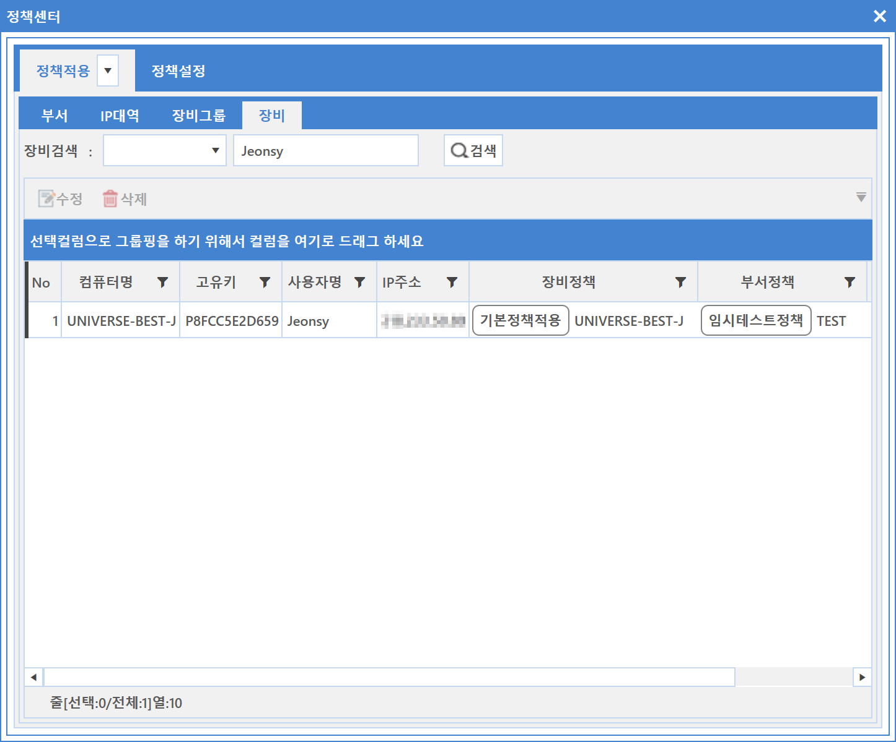
- 정책 선택
- 적용된 상태
참고사항
- 각각의 [부서/IP대역/장비그룹/장비]들에 동일한 정책을 지정할 수 있습니다.
-
정책이 지정된 부서/IP대역/장비그룹/장비들 사이에는 동작 우선순위가 존재하며, 장비에 적용된 것을 우선 적용합니다.
-
부서 < IP대역 < 장비그룹 < 장비
- "한국소프트웨어저작권협회" 부서에 'A'라는 정책을 지정하고, "한국소프트웨어저작권협회" 부서의 장비인 "PC1"에 'B'라는 정책을 지정하면, "PC1"은 'B' 정책으로 수행됩니다.
- 아래 그림과 같이 Jeonsy 장비에 [장비정책/IP대역정책/부서정책]이 모두 설정된 경우, 장비정책을 적용합니다.
-
정책이나 대상이 변경되면, 별다른 명령수행이 없어도, 해당 [부서/IP대역/장비그룹/장비]에 전달되어 수행됩니다.
© Copyright SWeeper Inc.. All Rights Reserved
3-1-4-2. 정책설정
Source: https://www.sweeper.or.kr/etc/manual/3142.html
3-1-4-2. 정책설정
3. 공통 ›› 3-1. 도구 ›› 3-1-4. 정책센터 ››


단위 정책(작동기능, 소프트웨어 정책, 사용자인증 정책, 정책IP대역 관리)들을 조합하여, 마스터 정책들을 만들기 위한 화면입니다.
정책을 만든 이후에는 이 정책을 수행할 장비나 부서같은 그룹을 할당(3-1-4-1. 정책적용)하면 해당 장비나 부서는 마스터 정책의 설정대로 동작합니다.
설정 방법
- 정책설정 Tab을 선택한 뒤 추가 버튼을 클릭합니다.
-
신규 추가된 그룹의 이름과 설명을 입력합니다.
-
그룹정보
-
정책그룹 : 정책그룹 명을 입력합니다.
-
빌트인 여부 : 빌트인 정책 여부를 확인합니다.
-
빌트인 설정이 되었을 경우 정보를 변경할 수 없습니다.
-
설명 : 간단한 정책 설명을 입력합니다.
-

-
정책정보에서 각 단위기능을 선택합니다.
-
정책정보
-
작동기능 : 생성한 [작동기능 그룹]을 선택합니다.
- 소프트웨어 : 생성한 [소프트웨어 정책]을 선택합니다.
-
확장기능 : 생성한 [확장기능 정책]을 선택합니다.
-

-
위 이미지에서 노란색 네모를 누르면, 앞서 생성한 단위 정책을 선택할 수 있습니다.
-
저장합니다.

-
정책 적용 대상을 추가합니다.
참고사항
- 기존의 정책을 복사하는 기능을 통해, 정책생성 시간을 단축할 수 있습니다.
© Copyright SWeeper Inc.. All Rights Reserved
3-1-4-2-1. 작동기능
Source: https://www.sweeper.or.kr/etc/manual/31421.html
3-1-4-2-1. 작동기능
3. 공통 ›› 3-1. 도구 ›› 3-1-4. 정책센터 ›› 3-1-4-2. 정책설정 ››


마스터 정책그룹에서 사용할 소그룹 정책중 하나인, 작동기능을 설명합니다. SWeeper에서 제공하는 기능들을 수행하기 위해서는, 장비(Agent) 혹은 부서등에 작동기능(HW자산관리, SW자산관리, 배포 등) 정책이 적용되어야 합니다. 관리자가 부서나 생산현장 상황에 따라 작동기능을 선별하여 적용하고자 한다면, 아래의 방법에 따라 정책을 만들고, 3-1-4-1. 정책적용 같이 적용할 수 있습니다
설정 방법
- "작동기능" 버튼을 클릭합니다.
- 팝업된 "작동기능 정책"에서 "추가"를 선택하고, 그룹명에 이름을 입력합니다.
- 작동기능을 선택하고 저장을 누릅니다.
- 새로운 그룹명으로 저장되었음을 확인합니다.

© Copyright SWeeper Inc.. All Rights Reserved
3-1-4-2-2. 소프트웨어 정책
Source: https://www.sweeper.or.kr/etc/manual/31422.html
3-1-4-2-2. 소프트웨어 정책
3. 공통 ›› 3-1. 도구 ›› 3-1-4. 정책센터 ›› 3-1-4-2. 정책설정 ››


마스터 정책그룹에서 사용할 소그룹 정책중 하나인, 소프트웨어 정책을 설명합니다.
소프트웨어 관리에 중요한 요소인 모니터링이나 필요한 정책들을 세부적으로 정책을 생성하여, 정책을 관리하고 장비나 부서등에 상세한 SW 기능들에 대한 정책(모니터링, 통제등)을 설정할 수 있습니다.
관리자가 부서나 생산현장 상황에 따라 소프트웨어 정책을 선별하여 적용하고자 한다면, 아래의 내용을 참고하여 정책을 만든후 3-1-4-1. 정책적용 에서 적용할 수 있습니다.
설정 방법
- "소프트웨어 정책" 버튼을 클릭합니다.
- 팝업된 "소프트웨어 정책설정"에서 "추가"를 선택하고, 이름과 항목을 체크합니다.
- 리비전 : 정책 버전을 표시합니다.
- 이름 : 정책명을 입력합니다.
-
소프트웨어검색 : 검색 기능 설정입니다.
-
모니터링 : 모니터링 기능 설정입니다.
-
모니터링 시간 : 모니터링 예약 시간을 설정입니다.
-
제거유도 : 제거 유도 설정 입니다. (불법 혹은 상용 유형의 SW가 설치된 장비 대상)
-
경고창표시 : 제거유도, 경고창 팝업 설정입니다.
- 네트워크차단 : 네트워크 차단 설정입니다.
-
제거유도시간 : 제거유도 팝업 예약 시간을 설정입니다.
-
제거유도 (마이닝) : 마이닝 제거유도 설정입니다. (마이닝 유형의 SW가 설치된 장비 대상)
-
경고창표시 : 제거유도, 경고창 팝업 설정입니다.
- 네트워크차단 : 네트워크 차단 설정입니다.
-
제거유도시간 : 제거유도 팝업 예약 시간을 설정입니다.
-
실행차단 : 실행차단 설정입니다.
- 설치차단 : 설치 차단 설정을 합니다.
-
빌트인 : 빌트인 여부를 알려줍니다.
-
설정 후 저장을 누릅니다.
- 새로운 이름으로 저장되었음을 확인합니다.
참고사항
-
모니터링시간이나 제거유도 시간 설정은 다음을 참고합니다.
-
[...]을 클릭합니다. (모니터링시간 예)
- "추가"버튼을 누른후 시작/종료시간을 선택합니다. (직접 입력도 가능합니다)

- 확인 후 저장을 누릅니다.
© Copyright SWeeper Inc.. All Rights Reserved
3-2. 공통기능
Source: https://www.sweeper.or.kr/etc/manual/32.html
3-2. 공통기능
3. 공통 ››


메뉴권한과 상관없이 모든 계정에서 사용할 수 있는 기능입니다.
© Copyright SWeeper Inc.. All Rights Reserved
3-2-1. 새로고침
Source: https://www.sweeper.or.kr/etc/manual/321.html
3-2-1. 새로고침


조회된 Data를 갱신하기 위한 기능으로 조회화면을 클릭한 뒤, 새로고침 메뉴를 클릭하면 Data를 다시 조회할 수 있습니다.

© Copyright SWeeper Inc.. All Rights Reserved
3-2-2. 즉시반영
Source: https://www.sweeper.or.kr/etc/manual/325.html
3-2-2. 즉시반영


관리자가 변경한 설정내용을 서버에 즉시 알리고, 결과를 보고자 할 때 사용합니다.

© Copyright SWeeper Inc.. All Rights Reserved
3-2-3. 로그아웃
Source: https://www.sweeper.or.kr/etc/manual/3-2-3.html
3-2-3. 로그아웃


관리콘솔 프로그램을 종료하고 로그인 화면으로 돌아갑니다.

© Copyright SWeeper Inc.. All Rights Reserved
4. 일반정보
Source: https://www.sweeper.or.kr/etc/manual/4.html
4. 일반정보


MENU | 일반정보
SWeeper
하드웨어 자원 정보 및 OS 운영정보등을 쉽게 관리할 수 있는 기능입니다.
| THE SOFTWARE MANAGEMENT |
PC 사용자 설정에서 부서관리 또한 가능하며, 다양한 변경이력을 통해 관리 효율성을 높일 수 있습니다.

© Copyright SWeeper Inc.. All Rights Reserved
4-1. 장비관리
Source: https://www.sweeper.or.kr/etc/manual/41.html
4-1. 장비관리
4. 일반정보 ››


에이전트 관리를 목적으로 하며 설치현황, 네트워크 검색, 변경이력, 제거신청 기능을 통해 다양한 관리를 할 수 있도록 구현되어 있습니다.
© Copyright SWeeper Inc.. All Rights Reserved
4-1-1. 설치현황
Source: https://www.sweeper.or.kr/etc/manual/411.html
4-1-1. 설치현황


에이전트 설치현황 확인이 가능하며, 온/오프라인 정보를 실시간으로 확인할 수 있습니다. 또한 OS정보, 네트워크 정보, 제품정보등 다양한 PC환경에 대한 정보 확인이 가능합니다.
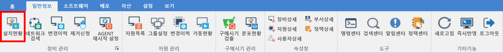
화면 구성은 아래 그림과 같이 조직도, 메인화면, 속성창 조합으로 기본표시되며, 특히 속성창을 활용하여 효과적으로 관리할 수 있습니다.

주요기능
- 장비 추가
에이전트 설치가 불가능한 장비를 등록하기 위한 기능입니다.
- 마우스 우클릭 장비추가
-
정보입력

-
적색으로 표시된 부분을 필수 입력사항 입니다.
-
고유키는 기존에 있는 고유키 정보와 중복되지 않아야 합니다.
-
장비 수정
-
입력된 장비 정보를 수정할 수 있습니다.
-
장비 삭제
-
입력한 장비정보를 삭제할 수 있습니다.
-
장비보관함
장비 보관함으로 이동한 장비는 [도구-장비보관함]에서 확인할 수 있습니다.
-
명령 활용
-
설치현황은 SWeeper의 가장 기본 기능을 수행할 수 있는 메뉴이며, 명령 기능을 효과적으로 사용할 수 있도록 합니다.
- 장비 선택 후 마우스 우클릭을 하면 다양한 명령을 수행할 수 있습니다.
- 명령 대상 장비가 불규칙하에 분포되어 검색이 어려울 경우 장비보관함에 임시저장하여 명령을 수행하면 좀 더 효과적으로 운영할 수 있습니다.

-
명령관련 자세한 사항은 명령(3-1-1. 명령센터) 편을 참고하여 주시기 바랍니다.
-
속성창 활용
-
속성창은 장비의 추가정보를 보여줄 수 있으며, 관리 효율을 높여줄 수 있는 기능입니다.
-
아래 속성창을 사용하시면 좋습니다.
- 자원상세
- 정책상세
- SW설치목록 (SWDB)
- SW설치목록 (제어판)
- SW설치목록 (+DB)
참고사항
-
사용자 부서 동기화
-
기업내의 인사 변동으로 인하여, 사용자의 부서가 변경된 경우, 해당 사용자의 장비도 사용자의 부서와 일치시키고자 할 때 사용합니다.
- 아래 그림과 같이, 인사 변동이 존재할 경우 해당 장비가 나타납니다.
- 사용자부서 동기화 창에서 우클릭 '선택한 데이터 동기화' 를 클릭하면 선택한 장비만 동기화 할 수 있습니다.
- 장비 설치현황 또한 파일 업로드를 제공하며, 방법은 5-1-1. 라이선스와 동일합니다.
- 우클릭 엑셀 내보내기시, 해당 PC에 다운받으려는 엑셀 버전이 설치되어 있어야 합니다.
업로드시에는 다운받은 엑셀파일을 임의로 변경하면, 업로드시 실패할 수 있습니다. 정확한 데이터만 입력해 주시기 바랍니다.
다운받은 엑셀파일에서 진한 회색이 된 곳은 필수 입력 컬럼이며, 붉은 표시된 곳은 업로드 가능한 컬럼입니다.
주의사항
내려받은 엑셀샘플 양식의 서식이 변경되면, 업로드시 문제가 될 수 있습니다.
다른 파일에서 Copy & Paste 시, 의도치 않게 서식이 변경되어 오류가 발생됨을 주의하시기 바랍니다.

© Copyright SWeeper Inc.. All Rights Reserved
4-1-1-1. 자산매핑 장비 확인
Source: https://www.sweeper.or.kr/etc/manual/4111.html
4-1-1-1. 자산매핑 장비 확인
4. 일반정보 ›› 4-1. 장비관리 ›› 4-1-1. 설치현황 ››


자산으로 매핑된 장비를 확인할 수 있습니다. 자산관리와 연계하는 경우, 자산으로 매핑하지 않은 장비를 쉽게 식별할 수 있습니다.
참고사항
자산 등록관련 자세한 사항은 7-1-1. 자산목록을 참고하시기 바랍니다.
© Copyright SWeeper Inc.. All Rights Reserved
4-1-1-2. 권한있는 장비 확인
Source: https://www.sweeper.or.kr/etc/manual/4112.html
4-1-1-2. 권한있는 장비 확인
4. 일반정보 ›› 4-1. 장비관리 ›› 4-1-1. 설치현황 ››


관리자가 권한이 부여된 장비만 볼 수 있습니다. SWeeper는 기본적으로 권한과 관계없이 모든 장비를 확인할 수 있으며, 권한이 부여된 장비만 수정이나 명령을 수행할 수 있습니다.

참고사항
위 이미지에서 장비추가나 명령전송 등이 활성화되어 보이지만, 실제 장비 추가나 명령전송시 권한에 따른 제약을 만나게 됩니다.
관리자의 권한 관련 자세한 사항은 8-1-3. 권한관리을 참고하시기 바랍니다.
© Copyright SWeeper Inc.. All Rights Reserved
4-1-1-3. 사용자 부서 동기화
Source: https://www.sweeper.or.kr/etc/manual/4113.html
4-1-1-3. 사용자 부서 동기화
4. 일반정보 ›› 4-1. 장비관리 ›› 4-1-1. 설치현황 ››


조직내 사용자의 부서가 변경되는 인사이동이 있는 경우, 매핑된 장비의 부서가 자동으로 변경된 사용자 부서로 업데이트 되는 기능입니다.
적용 예
- 사용자 부서가 변경된 경우 아래와 같이 "사용자 부서 동기화"를 누르면 팝업이 발생하고, 변경되는 대상장비 리스트가 나타납니다.

동기화 되기 위한 조건
- 사용자 유형이 개인이어야 합니다.
- 사용자 부서가 존재해야 합니다.
- 장비에 대한 권한이 필요합니다.
참고사항
조직내 사용자의 부서가 변경되었고, 위 동기화 조건을 충족하는 장비 전체에 대해 관리자는 사용자 부서 동기화를 할 수 있습니다.
© Copyright SWeeper Inc.. All Rights Reserved
4-1-1-4. 자산으로 등록
Source: https://www.sweeper.or.kr/etc/manual/4114.html
4-1-1-4. 자산으로 등록
4. 일반정보 ›› 4-1. 장비관리 ›› 4-1-1. 설치현황 ››


장비와 자산이 매핑되어 있지 않을 경우는 선택한 장비 정보로 자산을 신규등록하여 매핑할 수 있고, 기존 자산을 검색하여 매핑할 수도 있습니다.
아래 이미지와 같이 장비의 우클릭 메뉴를 이용하여, 신규자산이나 기존 자산으로 등록할 수 있습니다.
신규자산으로 등록
- 장비를 신규 자산으로 등록합니다.
- 자산번호 생성규칙과 자산명을 직접 설정할 수 있습니다. (장비 복수 선택 가능)
-
장비구매일 자산입고일로 사용 : 장비의 구매일을 자산 입고일에 반영할지 여부를 선택합니다.
-
새로 추가한 자산 정보에 선택한 장비 정보가 자동 입력됩니다.
기존 자산으로 등록
- 기존에 이미 등록된 자산이 있는 경우 사용합니다.
- 기존 등록된 자산중에 선택한 후 확인버튼을 클릭합니다.
- 해당 자산정보에 선택한 장비 정보가 자동 입력됩니다.
© Copyright SWeeper Inc.. All Rights Reserved
4-1-2. 네트워크 검색
Source: https://www.sweeper.or.kr/etc/manual/412.html
4-1-2. 네트워크 검색


IP주소를 사용하는 모든 장비를 검색할 수 있으며, 에이전트 설치/미설치 구분 및 SNMP를 사용하는 Network 장비도 확인 가능합니다.
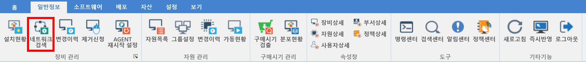
[환경설정] - [일반] - [AGENT]에서 설정된 네트워크 범위를 기준으로 에이전트 작동 기능을 통해 기능이 활성화 되며,
C Class를 기본 단위로 설치된 에이전트 중 임의 한대가 검색을 위한 Master Probe로 동작합니다.
검색된 Network정보는 C Class 단위로 트리구조로 자동 생성되고 수집된 정보도 표시됩니다.
단, C Class 기준으로 설치된 에이전트가 없다면, 기타 장비가 존재하더라도 검색이 되지 않습니다.
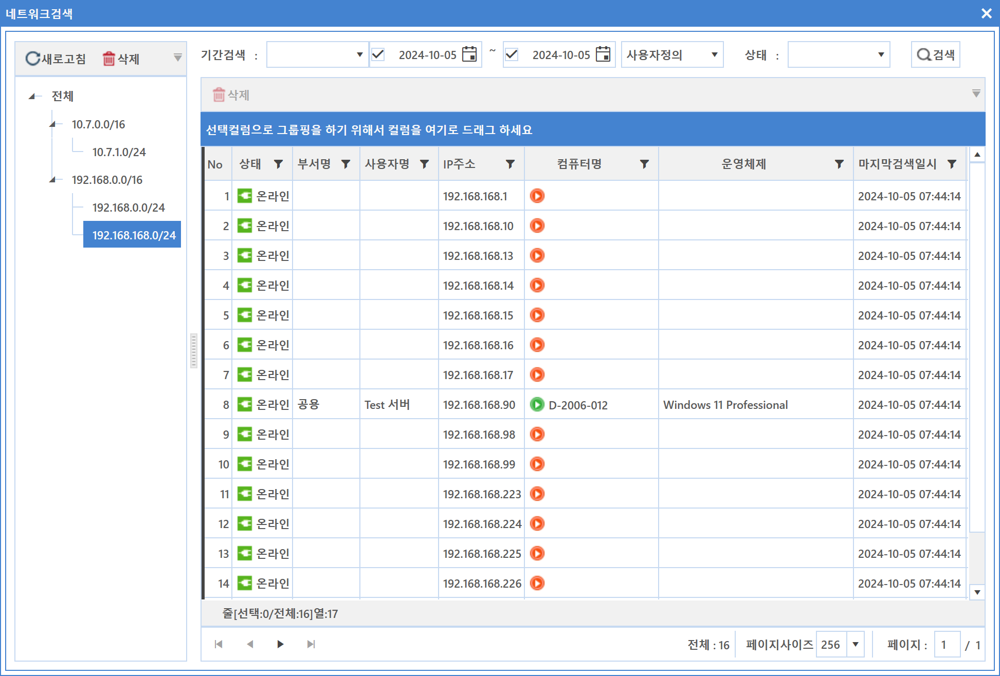
각 서브넷에는 한개의 마스터가 존재(녹색의 활성화 표시)하며, 해당 네트워크에 대한 정보를 수집하는 역할을 합니다.
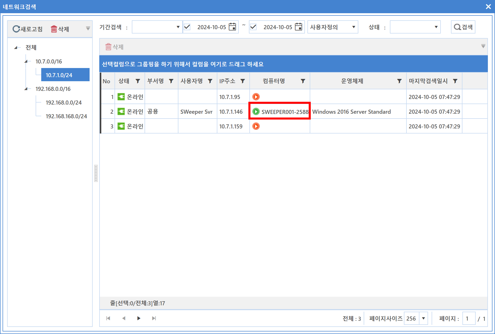
특정 서브넷의 누적된 불필요한 정보(오프라인)를 삭제할 때는 우클릭의 "데이터 삭제"를 이용하며 마스터가 신규 정보를 다시 업데이트 합니다.

마지막 검색일시는 해당 IP가 마스터에 마지막으로 온라인 검색된 시간을 의미합니다.

참고사항
- Master Probe 기능은 윈도우 Agent만 지원합니다.
- 검색주기는 [환경설정] - [일반설정] - [Agent] - [네트워크검색 설정]에서 가능합니다.
© Copyright SWeeper Inc.. All Rights Reserved
4-1-3. 변경이력
Source: https://www.sweeper.or.kr/etc/manual/413.html
4-1-3. 변경이력


작업유형별이나 기간별 발생한 에이전트의 정보(IP, MAC, 컴퓨터명, 부서)가 변경된 이력을 확인할 수 있습니다.
참고사항
- 버튼 클릭시 변경된 내용을 상세히 확인할 수 있습니다. (변경 항목, 변경 전/후)
© Copyright SWeeper Inc.. All Rights Reserved
4-1-4. 제거신청
Source: https://www.sweeper.or.kr/etc/manual/414.html
4-1-4. 제거신청


설치된 에이전트를 제거하기 위해 신청 및 승인을 할 수 있습니다.
임의 삭제 남용을 방지하기 위해 요청키와 제거키를 사용하도록 구현되어 있습니다.
-
요청키 : 에이전트 신청을 통해 생성된 고유키(SHA2) 입니다.
-
에이전트가 오프라인인 경우 요청을 할 수 없으므로 이메일 등을 통해 요청키를 전달합니다.
-
제거키 : 에이전트 삭제를 위해 생성된 고유키(SHA2) 입니다.
-
반드시 요청키가 있어야만 하며 요청키 없이 생선된 제거키는 사용할 수 없습니다.
-
에이전트는 반드시 삭제 화면에서 제거키를 입력해야만 삭제 가능합니다.
참고사항
-
에이전트 신청/승인 기능은 사용자가 삭제할 수 있는 기반을 마련하기 위한 기능으로 관리자가 직접 삭제하는 경우 명령을 통해 원격 삭제 가능합니다.
-
에이전트에서 제거신청 시 생성되는 '요청키는 고정된 값이 아니며 에이전트를 재시작하면 '요청키'가 변경되므로 제거신청을 다시해야 합니다.
설정방법
에이전트에서 신청방법은 에이전트 매뉴얼을 참고하시기 바랍니다.
- 에이전트에서 요청키로 삭제 신청을 합니다.
-
신청된 내용을 검색 후 해당 내용에 마우스 우클릭하여 승인 및 거절 메뉴를 클릭합니다.
-
에이전트 제거 승인 및 거절 화면이 팝업되면 상태(신청, 승인, 거절)를 변경하여 확인 버튼을 클릭합니다.
-
승인을 완료하면 제거키가 생성된 것을 확인할 수 있습니다.
-
생성된 제거키를 신청한 사용자에게 전달합니다.
© Copyright SWeeper Inc.. All Rights Reserved
4-1-5. AGENT 재시작 설정
Source: https://www.sweeper.or.kr/etc/manual/415AGENT.html
4-1-5. AGENT 재시작 설정


에이전트는 매일 밤 12시에 재기동(시작)을 하도록 되어있습니다. 이 시간을 변경하고 싶은 경우 아래 기능을 사용합니다.
아래 설정을 하게되면 밤12시 재기동은 동작하지 않습니다.
설정방법
-
그룹을 추가합니다.
-
그룹 명과 에이전트를 재시작 할 시작시간, 종료시간을 설정합니다. (분 단위로 설정 가능)
-
그룹에 포함시킬 장비를 선택합니다.
-
Agent 재시작 명령을 내립니다.
-
실제로 Agent 자동 재시작된 시간을 확인할 수있습니다. ("Agent 재시작 명령"을 통해 재시작된 경우는 표시되지 않습니다.)
참고사항
변경한 내용은 Agent 재시작 이후에 반영됩니다.
© Copyright SWeeper Inc.. All Rights Reserved
4-2. 자원 관리
Source: https://www.sweeper.or.kr/etc/manual/4-2.html
4-2. 자원 관리
4. 일반정보 ››


PC에서 수집된 하드웨어 장치(CPU, RAM, VGA, 모니터 등)의 정보현황을 관리할 수 있습니다.
© Copyright SWeeper Inc.. All Rights Reserved
4-2-1. 자원목록
Source: https://www.sweeper.or.kr/etc/manual/421.html
4-2-1. 자원목록
4. 일반정보 ›› 4-2. 자원 관리 ››


장비별로 자원(하드웨어)정보 현황을 쉽게 확인할 수 있습니다.
자원상세 속성창을 함께 사용할 경우 장비별 상세 장치 내용을 확인할 수 있습니다.

© Copyright SWeeper Inc.. All Rights Reserved
4-2-2. 그룹설정
Source: https://www.sweeper.or.kr/etc/manual/422.html
4-2-2. 그룹설정
4. 일반정보 ›› 4-2. 자원 관리 ››


자원정보를 카테고리, 속성 별로 그룹화하여 보고서에서 활용할 수 있습니다. 종류가 다양한 장치들을 관리자가 적절한 그룹을 생성하고, 이를 보고서에서 출력할 수 있도록 하였습니다.

설정방법
- 카테고리에서 대상 장치를 선택합니다.
- 그룹기준속성에서 필요한 속성을 선택합니다.
-
미분류 그룹핑이 기본이며, 그룹을 추가하려면 추가버튼을 클릭합니다.

-
새그룹으로 생성되며, 수정버튼을 클릭하면 그룹명 변경이 가능합니다.
-
그룹명 생성 완료 후 미분류를 선택하면 우측에 장치들이 표시되며 그룹핑할 대상 장치를 찾아 마우스 우클릭하여 해당 그룹을 선택합니다.

-
생성된 그룹을 선택하면 해당 장치가 그룹에 포함된 것을 확인할 수 있습니다.
그룹 내용 확인
- 보기 메뉴에서 보고서를 클릭하여 하드웨어 현황 보고서에서 확인할 수 있습니다.
- 부서와 카테고리, 그룹기준 속성을 설정하고 보고서 출력 버튼을 클릭하면 결과를 조회할 수 있습니다.
참고사항
본 메뉴에서는 프린트 기능이 제공되지 않습니다.
© Copyright SWeeper Inc.. All Rights Reserved
4-2-3. 변경이력
Source: https://www.sweeper.or.kr/etc/manual/4-2-3.html
4-2-3. 변경이력
4. 일반정보 ›› 4-2. 자원 관리 ››


작업유형별, 기간별 에이전트 장치(CPU, RAM, HDD 등)가 변경된 이력을 확인할 수 있습니다.


© Copyright SWeeper Inc.. All Rights Reserved
4-2-4. 가동현황
Source: https://www.sweeper.or.kr/etc/manual/424.html
4-2-4. 가동현황
4. 일반정보 ›› 4-2. 자원 관리 ››


특정일, 기준시간대별 가동한 장비수를 그래프 추이로 확인할 수 있으며, 그래프의 포인트를 클릭할 경우 해당시간에 가동한 장비 상세현황을 하단화면에서 확인할 수 있습니다.

© Copyright SWeeper Inc.. All Rights Reserved
4-3. 구매시기 관리
Source: https://www.sweeper.or.kr/etc/manual/44.html
4-3. 구매시기 관리
4. 일반정보 ››


PC의 구매일을 알 수 없는 경우를 대비하여 구매일을 추정하는 기능을 제공합니다.

© Copyright SWeeper Inc.. All Rights Reserved
4-3-1. 구매시기 검출
Source: https://www.sweeper.or.kr/etc/manual/431.html
4-3-1. 구매시기 검출
4. 일반정보 ›› 4-3. 구매시기 관리 ››


에이전트에서 수집된 바이오스 제조일을 이용하여 PC의 구매시기를 검출할 수 있습니다.
-
구매시기 검출 방법 (우클릭 메뉴)
-
바이오스 기준 구매일 사용
-
바이오스 제조일을 이용하여 구매일이 자동으로 입력됩니다.
-
직접 입력
-
구매일을 직접 입력합니다.
-
장비 구매일 반영
-
"일반정보-설치현황" 구매일 정보에 반영됩니다. (자산과 이미 매핑되었을 경우에는 반영되지 않습니다.)
참고사항
- 바이오스 기준으로 구매일 추정하는 경우 바이오스 장보를 서버에 올린 장비만 가능합니다. (장기미사용, 오프라인 장비 불가)
© Copyright SWeeper Inc.. All Rights Reserved
4-3-2. 분포현황
Source: https://www.sweeper.or.kr/etc/manual/433.html
4-3-2. 분포현황
4. 일반정보 ›› 4-3. 구매시기 관리 ››


장비별로 구매년도 분포 현황을 쉽게 확인할 수 있습니다.

입력 기준일에 해당하는 데이터를 부서별로 확인할 수 있습니다.

참고사항
검색된 결과는 하위부서 수량을 포함하지 않습니다.
© Copyright SWeeper Inc.. All Rights Reserved
4-4. 속성창
Source: https://www.sweeper.or.kr/etc/manual/4-4.html
4-4. 속성창
4. 일반정보 ››


[메인화면] 에서 표시하기 힘든 많은 데이터를 별도의 창을 이용하여 상세한 정보를 표시합니다.
필드 목록이 많을 경우 한 눈에 볼 수 있는 내용이 제한적이므로 SWeeper에서는 속성창이라는 확장 화면을 제공하고 있습니다.
특히 최근 대형화되고 가로비율이 큰 모니터의 경우 상당히 효과적으로 관리할 수 있도록 화면 구성이 가능합니다.
또한 Docking 기능으로 화면을 여러개 결합하여 비교할 수 있어서 조회 기능을 극대화 할 수 있습니다.
© Copyright SWeeper Inc.. All Rights Reserved
4-4-1. 장비상세
Source: https://www.sweeper.or.kr/etc/manual/4-4-1.html
4-4-1. 장비상세


선택한 장비에 대한 일반적인 상세정보를 볼 수 있는 속성창입니다. 4-1-1. 설치현황에서 장비 추가 혹은 수정 화면에서 설정한 내용이 속성으로 표시됩니다.


화면 설명
-
기본정보 : 에이전트의 기본이 되는 정보입니다.
-
고유키 : 장비 고유키 값 입니다.
- AGENT 버전 : 에이전트 프로그램 버전 정보 입니다.
-
보고일 : 에이전트가 서버에 보고하는 일자와 시간입니다.
-
사용자 정보 : 장비를 사용중인 사용자 정보입니다.
-
자산정보 : 최소한으로 정보입력으로 입력한 정보입니다.
-
자산매핑 : 자산과 장비를 매핑되었는지 여부를 알려줍니다.
- 자산번호 : 관리자가 입력한 자산번호가 나타납니다.
-
구매일 : 관리자가 입력한 구매일이 나타납니다.
-
네트워크 정보 : 장비의 네트워크 정보입니다.
- 시스템 정보 : 장비의 시스템 정보입니다.
-
환경설정 : 에이전트 환경설정 정보입니다.
-
NAT 접속 : 공유기나 라우터를 통해 NAT되어 서버와 연결된 경우, 표시됩니다.
- 연결유지모드 : 서버와 에이전트간의 연결을 유지합니다.
- 업그레이드 보류 : 업그레이드 받지 않도록 설정합니다.
- 사용자 정보입력요청 : 에이전트 재기동시 사용자 정보입력 요청할 때 표시합니다.
-
테스트장비 : 테스트 장비로 입력할 때 사용합니다.
-
부가정보 : 부가입력 정보입니다.
© Copyright SWeeper Inc.. All Rights Reserved
4-4-2. 자원상세
Source: https://www.sweeper.or.kr/etc/manual/4-4-2.html
4-4-2. 자원상세


선택한 장비에 대한 장치정보들 즉, 장비 자원상세정보를 볼수 있는 속성창입니다.


화면설명
- 장비의 HW 자원정보(바이오스, CPU, 메인보드, 메모리, 하드디스크, 랜, 비디오카드, 광학디스크, 모니터)를 확인할 수 있습니다.
- 각 장치별 상세한 정보는 장비를 선택할 경우 즉시 변경되기 때문에 내용 확인에 용이합니다.
© Copyright SWeeper Inc.. All Rights Reserved
4-4-3. 사용자상세
Source: https://www.sweeper.or.kr/etc/manual/4-4-3.html
4-4-3. 사용자상세


선택한 장비의 사용자에 대한 사용자 상세정보를 확인할 수 있는 속성창입니다.

© Copyright SWeeper Inc.. All Rights Reserved
4-4-4. 부서상세
Source: https://www.sweeper.or.kr/etc/manual/4-4-4.html
4-4-4. 부서상세


선택한 장비의 부서에 대한 부서 상세정보를 볼 수 있는 속성창입니다.
© Copyright SWeeper Inc.. All Rights Reserved
4-4-5. 정책상세
Source: https://www.sweeper.or.kr/etc/manual/4-4-5.html
4-4-5. 정책상세


선택한 장비에 적용되어 있는 마스터 정책과 상세 정책내용을 확인할 수 있습니다.

© Copyright SWeeper Inc.. All Rights Reserved
5. 소프트웨어
Source: https://www.sweeper.or.kr/etc/manual/5.html
5. 소프트웨어


MENU | 소프트웨어
SWeeper
기업에서 구매한 소프트웨어 라이선스를 등록하고 사용자에게 할당/회수를 하며, 소프트웨어 사용현황을 확인하는 등의 효율적인 소프트웨어 관리를 제공합니다.
| THE SOFTWARE MANAGEMENT |
특히 사전 보유된 소프트웨어 DB와 연계하여 관리자 운영 편의성을 높였습니다.
소프트웨어 저작권 협회(SPC) DB 연동을 통한 현황 파악이 가능하며, 윈도우 제어판 정보 현황도 함께 비교 분석 가능합니다.
다양한 통제 정책 설정을 통해 불법 소프트웨어 사용을 쉽게 통제할 수 있습니다. 그러나 통제 남용은 강한 사용자 불만을 야기할 수 있으므로 충분한 사전 공지 후 적용하는 것이 바람직합니다.
한국소프트웨어저작권협회(SPC) SWeeper 소프트웨어 관리는 효과적이고 합리적인 소프트웨어 라이선스 운영을 가능하게 합니다.

© Copyright SWeeper Inc.. All Rights Reserved
5-1. 자산관리
Source: https://www.sweeper.or.kr/etc/manual/51.html
5-1. 자산관리
5. 소프트웨어 ››


소프트웨어 관리를 위한 라이선스 구매등록, 라이선스 할당, 라이선스 신청/승인, 이력현황등을 관리할 수 있습니다.
참고사항
소프트웨어의 자산관리 메뉴항목을 선택하면 아래 그림과 같이 "소프트웨어 작업항목" 메뉴가 추가로 나타납니다. 수행 가능한 내용은 5-1-2-1. 기본정보에서의 소프트웨어 추가/수정/삭제가 가능하며, 8-2-7. 코드관리에서의 소프트웨어 코드를 등록/수정 할수 있습니다.
© Copyright SWeeper Inc.. All Rights Reserved
5-1-1. 라이선스
Source: https://www.sweeper.or.kr/etc/manual/511.html
5-1-1. 라이선스


관리 소프트웨어 목록으로 제조사 및 상용유형으로 분류되어 있으며, 라이선스 정보를 관리할 수 있습니다.
또한, Excel 파일을 SWeeper DB로 업로드가 가능하므로, 기존의 구매자료를 쉽게 등록할 수 있습니다.
소프트웨어라이선스 탭에서 검색 버튼을 클릭 하여 기존에 추가한 소프트웨어 라이선스를 확인 할수 있습니다.
검색 옵션에 따라 해당 옵션에 맞는 검색결과를 확인 할 수 있습니다.
- 구매SW명 : 구매 SW명을 기준으로 검색이 가능합니다.
- SW명 : SWeeper DB에 등록된 소프트웨어 명을 기준으로 검색이 가능합니다.
- 구매처 : 해당 SW 라이선스를 구매한 구매처를 기준으로 검색이 가능합니다.
- 구매부서 : 해당 SW 라이선스를 구매한 부서를 기준으로 검색이 가능합니다.
- 구매부서(하위포함) : 헤당 SW 라이선스를 구매한 부서의 하위 부서까지 포함하여 검색이 가능합니다.
- 제조사 : 해당 SW의 제조사를 기준으로 검색이 가능합니다.
Excel 업로드 방법
참고사항
사용자에 라이선스 할당을 위해서는, 소프트웨어 라이선스 구매 등록시 SWDB와의 매핑이 필요합니다.
- 마우스 우클릭하여 엑셀업로드 메뉴를 선택합니다.
- 엑셀 업로드 Wizard가 팝업되며, "양식 다운로드"에서 파일을 내려받아 내용에 맞도록 편집하여 저장합니다.

- 엑셀 업로드 버튼을 클릭하여 저장된 Excle 파일을 선택합니다.
- 업로드된 내용을 확인 후 다음 버튼을 클릭하면 처리결과가 표시되며 완료 버튼을 클릭하면 작업이 완료됩니다.
참고사항
- 우클릭 파일 내보내기(양식 다운로드)시, 해당 PC에 다운받으려는 엑셀 버전이 미리 설치되어 있어야 합니다.
- 다운받은 엑셀파일을 임의로 변경해서는 안되며, 입력 양식의 실수로 인한 실패시에는 결과 항목에 실패원인이 출력됩니다.
- 다운받은 엑셀파일에서 진한 회색이 된 곳은, 필수 입력 컬럼입니다.
주의사항
내려받은 엑셀샘플 양식의 서식이 변경되면, 업로드시 문제가 될 수 있습니다.
다른 파일에서 Copy & Paste 시, 의도치 않게 서식이 변경되어 오류가 발생됨을 주의하시기 바랍니다.
(대표적인 예)
구매일과 만료일 입력시, 구매일 (텍스트)을 날자로 변경되었을 경우, 실제 데이터 오류의 예
- 셀서식을 임의로 날짜로 변경
- 업로드시 데이터 오류

© Copyright SWeeper Inc.. All Rights Reserved
5-1-1-1. 소프트웨어 라이선스 구매 등록
Source: https://www.sweeper.or.kr/etc/manual/5111.html
5-1-1-1. 소프트웨어 라이선스 구매 등록
5. 소프트웨어 ›› 5-1. 자산관리 ›› 5-1-1. 라이선스 ››


라이선스 구매내역을 등록하고 편집할 수 있으며, 구매한 소프트웨어를 사용자에게 할당할 수 있습니다.

소프트웨어 구매 등록 방법
-
추가 버튼을 클릭합니다.
-
구매한 SW 정보들을 입력 합니다.
-
라이선스 할당을 위해서는 "소프트웨어명"을 찾아 매핑해야 합니다.
-
(참고) 한번 매핑 후 저장하면, 소프트웨어명을 수정할 수 없습니다.
-
기업에서 구매한 인증서가 있는 경우, 해당 내용을 저장할 수 있습니다.
-
왼쪽 추가 버튼을 클릭합니다.

- 라이선스 키, 라이선스 수량, 파일명을 설정한 후 저장 버튼을 클릭합니다.
- 완료되면 라이선스 정보가 제목이되어 등록됩니다.
참고사항 1
사용자에 라이선스 할당을 위해서는, 소프트웨어 라이선스 구매 등록시 SWDB와의 매핑이 필요합니다.
한번 구매 등록후에는 수정을 통해 구매 수량을 변경할 수 없으나, 5-1-1-2. 소프트웨어 리소스 생성 확인 에서 우클릭 명령으로 추가/삭제가 가능합니다.
참고사항 2
구매인증서정보 추가시 설정한 파일은 다운로드가 가능합니다.
참고사항 3
등록 가능한 구매 인증서 파일 크기는 최대 20MB 입니다.
© Copyright SWeeper Inc.. All Rights Reserved
5-1-1-2. 소프트웨어 리소스 생성 확인
Source: https://www.sweeper.or.kr/etc/manual/5112.html
5-1-1-2. 소프트웨어 리소스 생성 확인
5. 소프트웨어 ›› 5-1. 자산관리 ›› 5-1-1. 라이선스 ››


아래와 같이 기업에서 구매한 소프트웨어 정보를 입력하고, 매핑(소프트웨어명)하면, 구매수량에 입력한 수량만큼 하단창에 리소스가 생성됩니다.
- 소프트웨어 구매 등록


- 생성된 리소스ID
(HelpNDoc 구매수량 10개 만큼의 리소스ID 10개 생성된 화면)
소프트웨어 설정 컬럼 설명
- 만료 : 라이선스 만료 여부
- 리소스 ID : 할당할수 있는 라이선스
- 할당부서 : 해당 리소스를 관리하는 담당부서
- 자동할당 : 해당 소프트웨어가 할당된 부서의 장비에 설치시 자동으로 라이선스를 할당
- 하위부서포함 : 하위부서의 장비(사용자)에도 라이선스 할당할지 여부
- 인가일 : 장비(사용자)에 라이선스 할당한 날짜
- 시리얼키 : 소프트웨어 라이선스 구매시, 받은 라이선스 키 입력
- 설치 : 라이선스 할당한 장비(사용자)가 해당 소프트웨어 설치 여부
- 할당방식 : 라이선스 할당 방식(장비/사용자)
- 인가대상부서 : 라이선스 할당한 부서
© Copyright SWeeper Inc.. All Rights Reserved
5-1-1-3. 소프트웨어 라이선스 할당/회수
Source: https://www.sweeper.or.kr/etc/manual/5113.html
5-1-1-3. 소프트웨어 라이선스 할당/회수
5. 소프트웨어 ›› 5-1. 자산관리 ›› 5-1-1. 라이선스 ››


생성된 리소스화면에서 "우클릭 명령"으로 "장비"나 "사용자"에게 라이선스를 할당할 수 있습니다. 또한 회수도 가능합니다.
라이선스 할당
소프트웨어 설정 창에서 라이선스를 할당(장비/사용자)할 수 있습니다.
-
장비 라이선스 할당
-
리소스 우클릭 (장비 라이선스 할당)

-
장비 선택
-
기간을 지정할 수 있습니다. (종료일 이후 라이선스가 자동 회수됩니다.)
-
확인
-
할당방식에서 장비에 할당했음을 확인할 수 있습니다.
-
사용자 라이선스 할당
-
리소스 우클릭 (사용자 라이선스 할당)

-
사용자 선택
-
기간을 지정할 수 있습니다. (종료일 이후 라이선스가 자동 회수됩니다.)

-
확인
-
할당방식에서 사용자에 할당했음을 확인할 수 있습니다.

-
라이선스 회수
-
해당 리소스 우클릭(라이선스 회수 선택)
- 회수 확인
참고사항 1
라이선스 구매 등록시 라이선스 만료일을 입력한 경우, 해당 만료일이 되면 만료에 체크가 되면서 라이선스는 자동 회수 됩니다.

© Copyright SWeeper Inc.. All Rights Reserved
5-1-1-4. 구매대장 대비 설치 소프트웨어 현황
Source: https://www.sweeper.or.kr/etc/manual/5-1-1-4.html
5-1-1-4. 구매대장 대비 설치 소프트웨어 현황
5. 소프트웨어 ›› 5-1. 자산관리 ›› 5-1-1. 라이선스 ››


기업에서 구매한 소프트웨어 라이선스를 기준으로 구매/설치/잔여 등의 현항을 확인할 수 있습니다.
즉, 구매한 소프트웨어 대비하여, 전체 설치현황을 확인하거나, 부족분/잔여사항등을 확인할 수 있습니다.
소프트웨어 현황

컬럼 설명
- 구매 : 구매한 소프트웨어 라이선스 수량
- 전체설치 : 해당 소프트웨어를 설치한 장비 수량
- 구매잔여 : 구매량에서 전체설치수량을 제외한 수량
- 인가 : 관리등록한 소프트웨어 중 장비나 사용자에 라이선스를 할당한 수량
- 잔여 : 인가 후 남은 수량
상단의 특정 소프트웨어를 선택하면, 하단의 정보창에서 해당 소프트웨어에 대한 구매 정보가 나타납니다.
아래 그림과 같이 등록했다면, 동일 데이터가 다수 보여집니다.

참고사항
"구매대장대비 설치소프트웨어현황" 탭에서 각 소프트웨어를 더블클릭하면 소프트웨어상세 화면으로 연결됩니다.
© Copyright SWeeper Inc.. All Rights Reserved
5-1-2. SWDB
Source: https://www.sweeper.or.kr/etc/manual/5-1-2SWDB.html
5-1-2. SWDB


관리 소프트웨어 목록으로 제조사 및 상용유형으로 분류되어 있으며, 라이선스 정보를 관리할 수 있습니다. SWDB는 SPC에서 제공하는 소프트웨어 DB로 관리에 필요한 소프트웨어를 제공하고 있습니다. 만약 DB에 존재하지 않는 소프트웨어는 추가 등록 및 관리가 가능합니다.

- 우클릭 명령 (관리 선택/해제)

- 우클릭 명령 (모니터링 선택/해제)

- 우클릭 명령 (복사)

-
주요기능
-
SWDB 추가
-
새로운 SWDB를 등록하기 위한 기능입니다.
-
SWDB 수정
-
등록한 SWDB를 수정하기 위한 기능입니다.
-
SWDB 삭제
-
등록한 SWDB를 삭제하기 위한 기능입니다.
-
빌트인 된 SWDB는 삭제할 수 없습니다.
참고사항
-
소프트웨어는 관리로 지정되어야만, 해당 소프트웨어에 대한 관리(모니터링, 실행차단, 라이선스 제어 등)를 할 수 있습니다.
-
(중요) 소프트웨어가 미관리로 지정되면, 해당 소프트웨어에 대해 지급된 라이선스들이 모두 자동 회수 되며, 이력현황(할당및 회수이력)에 기록됩니다.
-
본 메뉴에서는 프린트 기능이 제공되지 않습니다.
© Copyright SWeeper Inc.. All Rights Reserved
5-1-2-1. 기본정보
Source: https://www.sweeper.or.kr/etc/manual/5121.html
5-1-2-1. 기본정보
5. 소프트웨어 ›› 5-1. 자산관리 ›› 5-1-2. SWDB ››


소프트웨어명, 제조사, 사용유형, 폰트 등 소프트웨어의 기본이 되는 정보를 관리할 수 있습니다.
-
설명
-
상용유형 : 해당 소프트웨어 제조사에서 고객에게 제공하는 유형으로, 선택사항으로는 상용, 프리, 쉐어, 패키지등이 있습니다.
- 사용유형 : 소프트웨어가 어떤 용도로 사용되는지 나타내는 것으로, 선택사항으로는 백신, 사무용, 폰트, 그래픽, 운영체제 등이 있습니다.
- 소프트웨어 유형 : 소프트웨어의 유형별로 분류하는 것으로, 선택사항으로는 업무, 비업무, 차단, 모니터링등이 있습니다.
- OS유형 : 소프트웨어의 OS 유형을 선택합니다.
- 관리 : 해당 소프트웨어를 관리할 것인지 체크합니다.
- 폰트 : 해당 소프트웨어가 폰트인지 여부를 체크합니다.
- 라이선스유형 동기화 : SWDB 라이선스유형과 동기화할 것인지 여부를 선택합니다.
- 사용용도 동기화 : SWDB 사용용도유형과 동기화할 것인지 여부를 선택합니다
- 소프트웨어유형 동기화 : SWDB 소프트웨어 유형과 동기화할 것인지 여부를 선택합니다
- 모니터링 : 해당 소프트웨어를 모니터링 할 것인지 체크 합니다.
- 설치차단 : 해당 소프트웨어를 설치차단할 것인지 체크합니다.
- 제거유도 : 해당 소프트웨어를 제거유도할 것인지 체크합니다.
- 실행차단 : 해당 소프트웨어를 실행차단할 것인지 체크합니다.
참고사항
상용유형, 사용유형, 소프트웨어 유형에 나타나지 않은 항목은 "8-2-7. 코드관리"에서 추가하여 사용할 수 있습니다.
주의사항
- (중요) 관리여부가 체크되어야만 5-2-1. 설치현황이나 5-2-3. 실행현황에서 설치정보 및 실행정보를 확인할 수 있습니다.
- 기본정보에서 수정할 수 있는 항목은 "이름", "제조사", "관리 여부", "폰트", "소비자가", "라이선스유형 동기화", "사용용도 동기화", "소프트웨어유형 동기화" , "모니터링", "설치차단", "제거유도", "실행차단" 입니다.
- "관리"를 체크하지 않으면, 에이전트(PC)는 해당 소프트웨어에 대한 정보를 서버에 전송하지 않습니다.
- "모니터링"을 체크 하지 않으면, 실행파일 모니터링이 되지 않으며 실행 현황 또한 업데이트 되지 않습니다.
© Copyright SWeeper Inc.. All Rights Reserved
5-1-2-2. 설치 판단 규칙
Source: https://www.sweeper.or.kr/etc/manual/5122.html
5-1-2-2. 설치 판단 규칙
5. 소프트웨어 ›› 5-1. 자산관리 ›› 5-1-2. SWDB ››


소프트웨어 설치 여부를 판단할 수 있는 기능으로 제어판 정보 등을 기준으로 장비에서 검색할 수 있는 조건을 설정합니다.
빌트인 된 소프트웨어는 수정이 불가능하며, 추가 등록된 소프트웨어에 한하여 설치판단 규칙을 직접 설정할 수 있습니다.
설치판단 규칙 등록방법은 담당엔지니어에게 문의 바랍니다.
© Copyright SWeeper Inc.. All Rights Reserved
5-1-2-3. 실행 파일
Source: https://www.sweeper.or.kr/etc/manual/5-1-2-3.html
5-1-2-3. 실행 파일
5. 소프트웨어 ›› 5-1. 자산관리 ›› 5-1-2. SWDB ››


실행파일 설정은 등록된 파일을 기준으로 모니터링과 차단을 하기 위한 설정입니다.
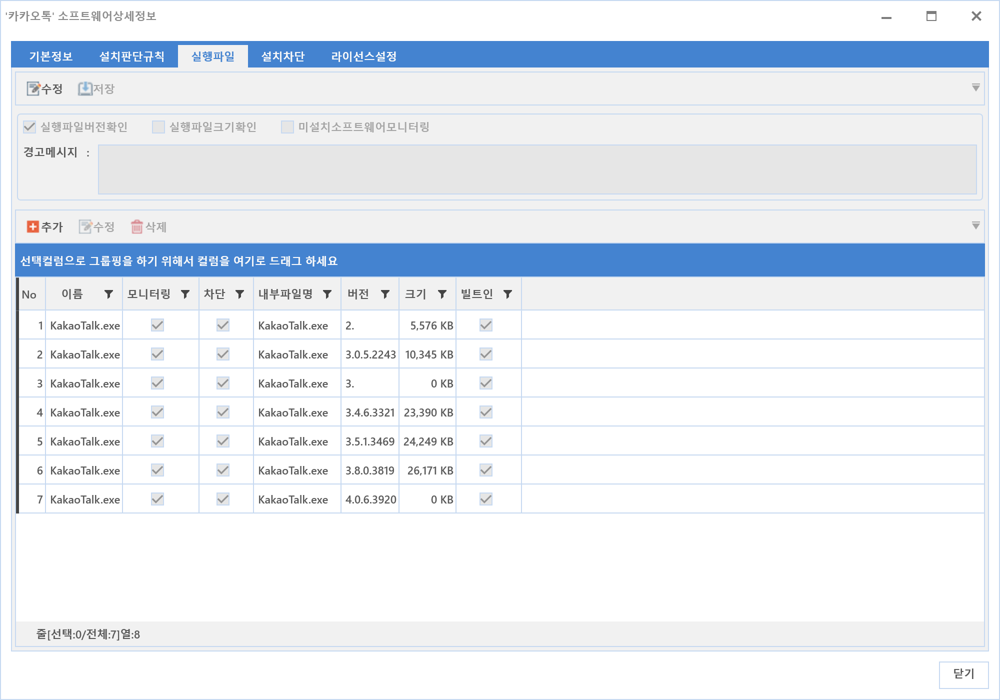
-
설명
-
실행파일버전 확인
-
모니터링이나 실행차단시, 등록한 파일의 버전을 체크할 것인지 여부를 선택합니다.
-
실행파일크기 확인
-
모니터링이나 실행차단시, 등록한 파일의 크기를 체크할 것인지 여부를 선택합니다.
-
미설치 소프트웨어 모니터링
-
"5-1-2-2. 설치 판단 규칙"과 부합하지 않더라도, 등록한 파일을 모니터링 할 것인지 여부를 선택합니다.
- 이 때는 반드시 "5-1-2-1. 기본정보 에서 모니터링"에 체크되어 있어야 합니다.
설정방법
- 수정 버튼을 클릭합니다.

-
실행파일 버전확인여부 / 실행파일 크기확인 / 미설치소프트웨어모니터링 에 체크 여부를 설정을 합니다.
-
체크 여부에 따라 파일의 버전이나 크기를 확인하여 실행차단이나 모니터링시 참고하게 됩니다.
-
경고 메시지를 등록합니다.
-
차단메시지의 내에 표시되는 내용을 직접 입력할 수 있습니다.
-
추가 버튼을 클릭하여 실행파일을 등록합니다.
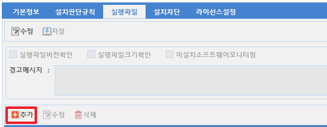
- 모니터링 여부, 차단 여부 중 필요한 설정에 체크합니다.
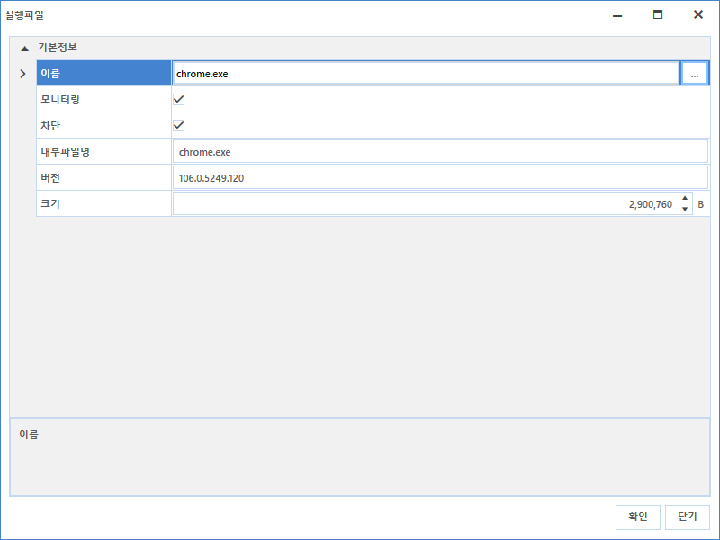
- 등록이 완료되면 닫기 버튼을 클릭합니다.

주의사항
- (중요) 모니터링 혹은 실행파일 등록시에는 "모니터링" 혹은 "미설치소프트웨어모니터링"에 체크 되어야 5-2-3. 실행현황에서 해당 소프트웨어 실행정보를 확인할 수 있습니다.
- "모니터링"에 체크를 설정하기 위해서는 5-1-2-1. 기본정보 를 참고하시기 바랍니다.
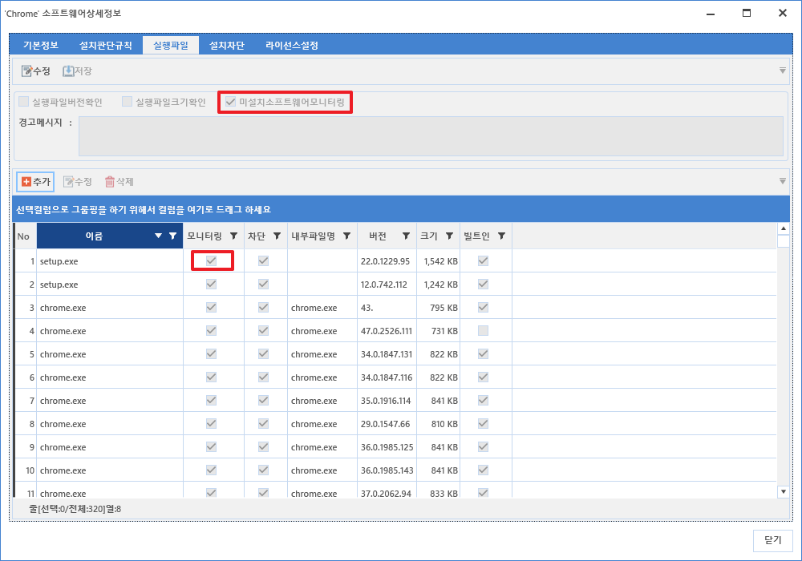
© Copyright SWeeper Inc.. All Rights Reserved
5-1-2-4. 설치 차단
Source: https://www.sweeper.or.kr/etc/manual/5124.html
5-1-2-4. 설치 차단
5. 소프트웨어 ›› 5-1. 자산관리 ›› 5-1-2. SWDB ››


소프트웨어 설치를 차단하기 위한 파일 정보를 등록합니다. 실행차단과 의미는 동일하나 설치와 관련된 파일정보들을 등록하여 차단하는 점에서 차이가 있습니다.
설정방법
- 추가 버튼을 클릭합니다.
- 설치차단 설정 화면이 팝업됩니다.

-
차단 유형을 선택합니다.
-
MSI 파일 차단 : Msiexec.exe를 통해 설치되는 확장자 MSI 파일을 차단하기 위한 설정입니다.

- 복사차단
파일이나 폴더가 하드디스크에 복사되는 것을 차단합니다.

-
폴더 여부
-
이름에 폴더를 선택한 뒤 폴더 여부를 체크하면 폴더 생성을 차단합니다.
-
설치 시 생성되는 폴더를 차단하기 위한 설정입니다.
-
이름 예시
-
C:\Temp\Test\*
-
C:\Temp\Test 폴더 내 복사차단
-
C:\Temp\Test
-
C:\Temp\Test 폴더 자체 생성을 막음
-
a.exe
-
a.exe 가 존재하는 폴더에는 a.exe 복사 가능
-
a.exe 가 존재하지 않는 폴더로는 a.exe 복사 불가
-
실행차단
파일 Hash(SHA2) 값을 기준으로 실행되는 것을 차단합니다.

- 읽기차단
Setup.exe 같은 실행파일이 CAB과 같은 압축파일등을 읽는 행위를 차단합니다.
Setup.exe를 차단해도 이후 동작으로 인해 설치되는 것을 방지하기 위한 차단 설정입니다.
- 타이틀차단
설치 시 윈도우 타이틀에 표시되는 명칭을 기준으로 차단하는 설정합니다.
간혹 타이틀 이름으로 제어되지 않는 프로그램도 있습니다. (ex SWeeper Agent 프로그램)

- 등록을 완료합니다.
참고사항1
- 최근 프로그램들은 복잡 다양하여, 한가지 방법으로 모든 설치를 차단할 수 없습니다. 그러므로 다양한 설치차단 방법으로 관리자는 차단 여부를 확인 후, 전사적용하여야 합니다.
- 이미 설치된 불법 소프트웨어는 설치차단에 등록되어있어도 설치차단이 동작하지 않습니다.
© Copyright SWeeper Inc.. All Rights Reserved
5-1-2-5. 라이선스 설정
Source: https://www.sweeper.or.kr/etc/manual/5125.html
5-1-2-5. 라이선스 설정
5. 소프트웨어 ›› 5-1. 자산관리 ›› 5-1-2. SWDB ››


선택한 소프트웨어에 대한 유형을 설정하고, 라이선스 사용현황을 확인할 수 있으며, 필요시 라이선스 할당/회수도 가능합니다.

주요 버튼 설명
-
라이선스 유형
-
불법 : 무조건 불법으로 간주합니다.
- 상용 : 라이선스 할당 설정이 가능하며 할당받지 못한 소프트웨어 사용자는 불법이 됩니다.
- 프리웨어 : 라이선스 제한이 없는 무료 소프트웨어 설정입니다.
- 사이트 : 수량 제한 없는 라이선스 설정입니다. (EA 라이선스)
- 번들 : 번들 제품에 해당하는 라이선스타입으로, 프리웨어랑 동작이 유사합니다.
-
마이닝 : 인지되지 않은 SW를 검출하기 위한 유형으로, 불법이랑 동작이 유사합니다.
-
그룹종류
-
단순그룹 : 라이선스 관리는 개별적으로 하면서 수량만 합계를 구하기 위한 그룹입니다.
- 통합그룹 : 기업의 SW라이선스 계약형태가 SW사용에 대한 버전 제약이 없을 경우, 통합하여 사용하기 위한 그룹입니다.
- 패키지그룹 : MS OFFICE와 같이 특정 패키지를 구매시, 워드나 엑셀 같은 소프트웨어에 대한 사용권이 함께있는 경우에 사용하는 그룹입니다.
자세한 사항은 5-3-1. 그룹설정을 참고하시기 바랍니다.
-
라이선스정리
-
인사 변경등이 발생시, 할당한 라이선스를 자동 회수 합니다
-
장비라이선스 할당
-
소프트웨어 라이선스의 담당부서를 참고하여, 장비에 라이선스를 할당할 수 있습니다.
-
할당하려는 장비의 부서에 라이선스가 없다면, 라이선스 키가 나타나지 않습니다.
-
사용자 라이선스 할당
-
사용자에 라이선스를 할당할 수 있습니다.
- 사용자 부서에서 구매한 라이선스가 있는 경우, 해당 부서 사용자에게 라이선스를 할당할 수 있습니다.
- 하위부서 포함인 경우, 하위부서 사용자에게 할당 가능합니다.
주요 탭 설명
-
구매라이선스 탭
-
전체 구매 라이선스 현황을 부서가준으로 확인 할 수 있습니다.
-
임시인가 탭
-
임시라이선스를 할당한 전체 장비를 확인하거나, 우클릭 명령으로 장비에 임시라이선스를 할당/회수할 수 있습니다.
-
전체설치장비 탭
-
해당 소프트웨어를 설치한 전체 장비를 확인할 수 있으며, 정식(임시)라이선스를 할당/회수 할 수 있습니다.
-
부서라이선스 탭
-
구매라이선스탭에서 선택한 부서에 대한 발급가능한 라이선스를 확인 할 수 있고, 할당/회수/수정 할 수 있습니다.
-
부서설치장비 탭
-
구매라이선스탭에서 선택한 부서에 설치된 장비만을 보여주며, 정식(임시)라이선스를 할당/회수 할 수 있습니다.
© Copyright SWeeper Inc.. All Rights Reserved
5-1-2-5-1. 사용자 라이선스 할당
Source: https://www.sweeper.or.kr/etc/manual/51251.html
5-1-2-5-1. 사용자 라이선스 할당
5. 소프트웨어 ›› 5-1. 자산관리 ›› 5-1-2. SWDB ›› 5-1-2-5. 라이선스 설정 ››


[자산관리-라이선스]에서 사용자 라이선스를 할당한 것과 같이, SWDB의 상세정보에서도 사용자 라이선스 할당이 가능합니다.
사용자 라이선스 할당 방법
- 사용자 라이선스 할당.

- 리소스ID 선택
선택 가능한 리소스ID 리스트가 표시되며, 사용자에게 할당할 리소스 선택합니다.

- 사용자 선택
선택가능한 사용자 리스트가 보여지며, 할당할 대상을 선택합니다

- 사용자 라이선스 할당 확인
사용자 할당 방식으로 라이선스가 할당되었음을 확인할 수 있습니다.

- 모든 라이선스 할당이 완료되면 전체적인 통계현황을 확인할 수 있습니다.

참고사항 1
사용자 라이선스 할당은 리소스에서 우클릭 명령으로 할 수 있습니다.
참고사항 2
사용자에 라이선스를 할당하고, 해당 장비에 소프트웨어가 설치가 된 경우, 활성화 된 '+' 표시를 누르면 장비 상세정보를 확인할 수 있습니다.

© Copyright SWeeper Inc.. All Rights Reserved
5-1-2-5-2. 장비 라이선스 할당
Source: https://www.sweeper.or.kr/etc/manual/51252.html
5-1-2-5-2. 장비 라이선스 할당
5. 소프트웨어 ›› 5-1. 자산관리 ›› 5-1-2. SWDB ›› 5-1-2-5. 라이선스 설정 ››


앞서 [자산관리-라이선스]에서도 장비 라이선스를 할당할 수 있었고, BOX의 상세정보에서도 장비별 라이선스 할당이 가능합니다.
장비 라이선스 할당 방법
- 장비 라이선스 할당

- 리소스ID 선택
할당 가능한 리소스ID 리스트가 보여지며, 원하는 리소스를 선택합니다.

- 장비 선택
선택가능한 장비 리스트가 보여지며, 사용할 장비를 선택합니다.

- 장비 라이선스 할당 확인
선택한 PC에 장비 라이선스가 할당되었음을 확인할 수 있습니다.
- 모든 라이선스 할당이 완료되면 전체적인 통계현황을 확인할 수 있습니다.
참고사항
- 장비 라이선스 할당은 리소스에서 우클릭 명령으로 할 수 있습니다.

- 장비에 라이선스를 할당하고, 해당 장비에 소프트웨어가 설치가 된 경우, 활성화 된 '+' 표시를 누르면 장비 상세정보를 확인할 수 있습니다.

- 부서설치장비에서 '장비 라이선스 일괄할당' 으로 한번에 여러 장비에 라이선스 할당을 할 수 있습니다.

© Copyright SWeeper Inc.. All Rights Reserved
5-1-2-5-3. 임시 라이선스 할당
Source: https://www.sweeper.or.kr/etc/manual/51253.html
5-1-2-5-3. 임시 라이선스 할당
5. 소프트웨어 ›› 5-1. 자산관리 ›› 5-1-2. SWDB ›› 5-1-2-5. 라이선스 설정 ››


각 소프트웨어별로 임시라이선스 할당/회수/수정 할 수 있습니다.
임시 라이선스 할당 방법
- 임시인가 탭으로 이동합니다.
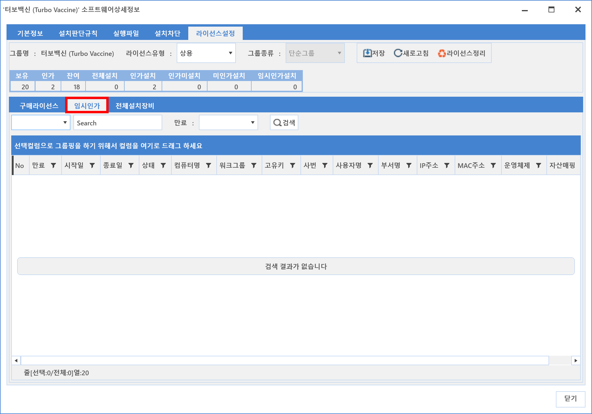
- 빈공간 우클릭 메뉴에서 라이선스 할당을 선택합니다.

- 임시 인가하려는 장비를 선택합니다.
- 임시 인가 기간, 처리사유를 입력합니다.

- 임시라이선스 할당된 장비를 확인합니다.
임시 라이선스 회수
- 할당된 임시 장비의 우클릭 메뉴에서 라이선스 회수를 선택릅니다.

- 회수상태를 확인합니다.
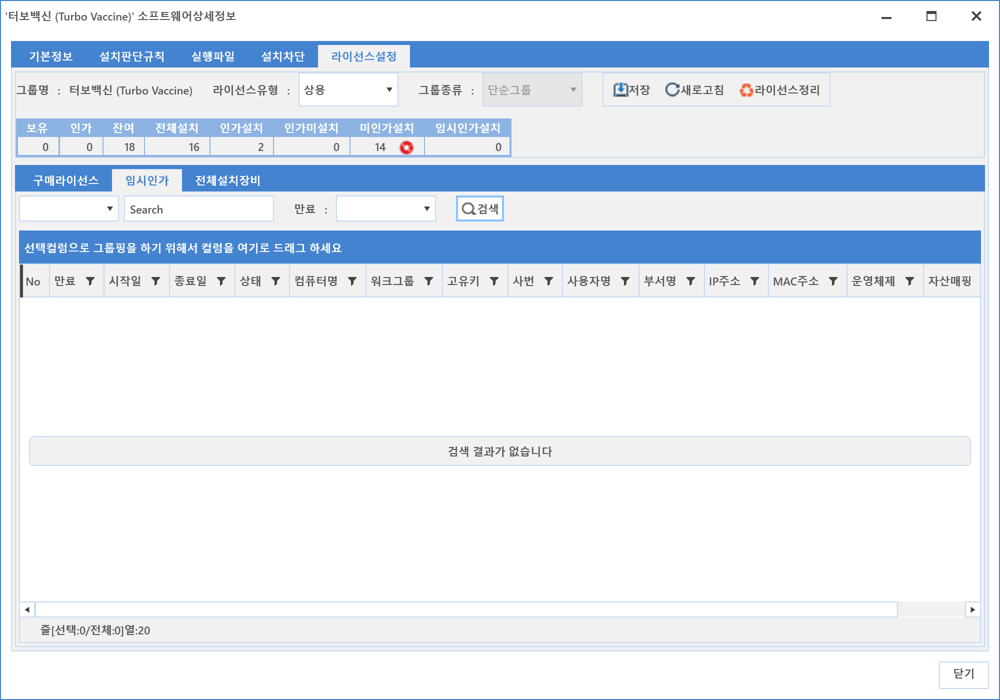
임시 라이선스 수정
이미 할당한 임시 라이선스도에 대해 기간을 수정할 수 있습니다.
- 할당된 임시 장비의 우클릭 메뉴에서 라이선스 수정를 선택합니다.

- 기간을 변경합니다.
참고사항
- '임시 라이선스 일괄할당' 으로 한번에 여러 장비에 임시할당을 할 수 있습니다.
© Copyright SWeeper Inc.. All Rights Reserved
5-1-3. SW신청
Source: https://www.sweeper.or.kr/etc/manual/513SW.html
5-1-3. SW신청


라이선스 신청/승인을 관리할 수 있는 메뉴입니다.
사용자가 에이전트 UI 메뉴 중 SW 설치정보 메뉴에서 라이선스 할당받지 않은 소프트웨어를 선택하여 신청할 수 있으며, 해당 신청 내용은 SW 신청메뉴에 나타납니다.
신청 내역 확인 방법
SW신청 메뉴에서 검색 버튼 클릭하여 기존의 SW신청 내역을 확인할 수 있습니다.

참고사항
장비검색의 옵션에 따라 해당 옵션에 맞는 검색결과를 확인 할 수 있습니다.
- 사번 : 사번을 기준으로 검색이 가능합니다
- 사용자명 : 사용자명을 기준으로 검색이 가능합니다
- 컴퓨터명 : 컴퓨터명을 기준으로 검색이 가능합니다
- 부서명 : 부서명을 기준으로 검색이 가능합니다
- IP주소 IP주소를 기준으로 검색이 가능합니다
- 로컬IP주소 : 로컬IP주소를 기준으로 검색이 가능합니다
- 부서경로 : 해당 부서의 하위 부서까지 포함하여 검색이 가능합니다.
설정방법
- 승인 대상 내용을 선택하여 마우스 우클릭 한 뒤 승인 및 거부 메뉴를 선택합니다.
-
소프트웨어 신청 승인 화면이 팝업되며 승인 정보를 설정 합니다.
-
라이선스 유형
-
정식 라이선스 : 기간이 없는 라이선스 입니다.
-
임시 라이선스 : 사용 시간을 설정할 수 있습니다.
-
상태
-
관리자 승인 : 라이선스를 할당합니다.
-
관리자 거절 : 신청을 거절 합니다.
-
승인사유 : 승인 내용을 기록합니다.
- 승인 처리된 내용을 확인합니다.

참고사항
관리자 승인시 이미 라이선스가 할당된 경우에는 아래와 같은 팝업 메시지가 발생합니다.

© Copyright SWeeper Inc.. All Rights Reserved
5-1-4. 이력현황
Source: https://www.sweeper.or.kr/etc/manual/514.html
5-1-4. 이력현황


불법 소프트웨어 차단 정책에 대한 로그 및 소프트웨어 설치/삭제, 라이선스 할당/회수에 대한 정보를 조회할 수 있습니다.
각 탭에서 검색 버튼을 클릭하여 이력 현황을 확인 할 수 있습니다.
검색 옵션에 따라 해당 옵션에 맞는 검색결과를 확인 할 수 있습니다.
- 소프트웨어명 : 소프트웨어명을 기준으로 검색이 가능합니다.
- 사용자명 : 사용자명을 기준으로 검색이 가능합니다.
- 컴퓨터명 : 컴퓨터명을 기준으로 검색이 가능합니다.
- 고유키 : 고유키를 기준으로 검색이 가능합니다.
- IP주소 IP주소를 기준으로 검색이 가능합니다.
- 로컬IP주소 : 로컬IP주소를 기준으로 검색이 가능합니다
- PC로그인계정 : PC로그인계정을 기준으로 검색이 가능합니다.
- 부서경로 : 해당 부서의 하위 부서까지 포함하여 검색이 가능합니다.
© Copyright SWeeper Inc.. All Rights Reserved
5-1-4-1. 소프트웨어 차단로그
Source: https://www.sweeper.or.kr/etc/manual/5141.html
5-1-4-1. 소프트웨어 차단로그
5. 소프트웨어 ›› 5-1. 자산관리 ›› 5-1-4. 이력현황 ››


불법 소프트웨어 차단 로그를 조회할 수 있습니다.
참고사항
제거유도 팝업창 경고 횟수와 네트워크 차단 여부 또한 확인 할 수 있습니다.
[+] 버튼을 클릭하여 차단 SW 리스트를 확인 할 수 있습니다.
© Copyright SWeeper Inc.. All Rights Reserved
5-1-4-2. 설치 및 제거 이력
Source: https://www.sweeper.or.kr/etc/manual/5142.html
5-1-4-2. 설치 및 제거 이력
5. 소프트웨어 ›› 5-1. 자산관리 ›› 5-1-4. 이력현황 ››


사용자 PC에서 소프트웨어가 설치되었거나 제거된 이력을 조회할 수 있습니다.

© Copyright SWeeper Inc.. All Rights Reserved
5-1-4-3. 할당및 회수이력
Source: https://www.sweeper.or.kr/etc/manual/5143.html
5-1-4-3. 할당및 회수이력
5. 소프트웨어 ›› 5-1. 자산관리 ›› 5-1-4. 이력현황 ››


관리자가 사용자 PC에 할당/회수한 라이선스 이력을 조회할 수 있습니다.
© Copyright SWeeper Inc.. All Rights Reserved
5-1-5. 제어판
Source: https://www.sweeper.or.kr/etc/manual/515.html
5-1-5. 제어판


장비(Windows, Mac)에 설치된 소프트웨어 설치(제어판) 정보가 수집되며, 본 메뉴에서는 설치 소프트웨어의 상세정보 및 설치된 수량, 게시자, 제거문자열, 설치경로, 설치장비, 설치일 등 다양한 정보를 확인할 수 있습니다.

화면구성

설치장비 Tab
- 선택한 제어판 소프트웨어를 설치한 장비 리스트를 나타냅니다.
실행파일 Tab
- 선택한 제어판 소프트웨어의 주요 실행파일 정보를 나타냅니다.

참고사항
장비별 소프트웨어 설치일을 확인할 수 있습니다.

© Copyright SWeeper Inc.. All Rights Reserved
5-1-5-1. 소프트웨어 반영
Source: https://www.sweeper.or.kr/etc/manual/5151.html
5-1-5-1. 소프트웨어 반영
5. 소프트웨어 ›› 5-1. 자산관리 ›› 5-1-5. 제어판 ››


SWDB에서 제공하지 않는 소프트웨어가 제어판 정보에 있을 경우, 이를 간단하게 관리SW로 등록할 수 있습니다.
설정방법
- 해당 소프트웨어를 선택합니다.
- 우클릭 메뉴에서 "소프트웨어반영"을 선택합니다.
- 확인을 누릅니다.
등록한 sw 확인
- 소프트웨어-SWDB 메뉴로 이동합니다.
- 등록한 소프트웨어를 검색합니다.
참고사항
소프트웨어 반영을 하면 아래 이미지처럼 기본정보와 설치판단 정보만, 입력되어 있습니다. 등록(반영)한 SW로 추가 관리(모니터링, 실행차단, 설치차단)를 하기 위해서는 5-1-2-3. 실행 파일 ~ 5-1-2-5. 라이선스 설정 를 참고하시기 바랍니다.


© Copyright SWeeper Inc.. All Rights Reserved
5-1-6. +DB
Source: https://www.sweeper.or.kr/etc/manual/5-1-6DB.html
5-1-6. +DB


한국 소프트웨어 저작권 협회(SPC)의 SAMDB에서 제공하는 소프트웨어 DB 정보를 이용하여, SW별 설치된 장비 수량을 확인할 수 있습니다.

-
라이선스 설정방법
-
SWDB와 같은 라이선스 설정은 아니며 단순 구매 수량만을 입력하여 대략적인 현황을 파악하는데 사용할 수 있습니다.
-
대상 SW를 선택한 뒤 마우스 우클릭하여 수량 수정 메뉴를 선택합니다.
- 수량을 입력한 뒤 확인 버튼을 클릭합니다.
참고사항
+DB를 이용하기 위해서는 별도로 구매가 필요합니다.
© Copyright SWeeper Inc.. All Rights Reserved
5-1-7. 폰트
Source: https://www.sweeper.or.kr/etc/manual/517.html
5-1-7. 폰트


에이전트로부터 수집된 폰트 리스트를 확인할 수 있고, 각각의 폰트가 설치된 장비를 확인할 수 있습니다.
또한 각 폰트파일의 설치된 위치나 hash정보등을 확인할 수 있습니다.

© Copyright SWeeper Inc.. All Rights Reserved
5-2. 자원관리
Source: https://www.sweeper.or.kr/etc/manual/52.html
5-2. 자원관리
5. 소프트웨어 ››


소프트웨어 설치현황과 실행현황을 분석과 함께 확인할 수 있습니다.
© Copyright SWeeper Inc.. All Rights Reserved
5-2-1. 설치현황
Source: https://www.sweeper.or.kr/etc/manual/521.html
5-2-1. 설치현황


설치 소프트웨어의 전체적인 현황을 확인할 수 있습니다. 단순 조회는 물론 라이선스를 할당/회수가 가능하기 때문에, 유용한 관리 기능중 하나입니다.
화면 구성은 관리분류와 소프트웨어 현황을 볼 수 있는 상단화면과, 각 소프트웨어별 설치된 장비를 볼 수 있는 하단 화면으로 구성됩니다.
조직도와 연계하면 부서, 필터그룹, 장비그룹, 네트워크그룹 기준으로 소프트웨어 설치현황을 확인할 수 있습니다.
설치현황을 보기위한 전제 조건
- 해당 장비에는 소프트웨어 정책중 소프트웨어 검색이 활성화되어야 합니다.
- (중요) 5-1-2-1. 기본정보 하단의 주의사항을 충족해야 합니다.
라이선스 관리 분류 기준
-
불법
-
비구매 : 소프트웨어를 구매하지 않았고, 불법 설치수량이 존재하는 경우
- 라이선스 초과 : 구매수량을 모두 할당한 뒤에, 불법수량이 존재하는 경우
- 미인가 : 구매수량에 여유가 있으나, 불법 설치현황이 존재하는 경우
-
비인가 : 라이선스 유형이 불법인 소프트웨어
-
합법 : 불법 설치한 장비가 없는 경우
- 임시인가 : 임시 라이선스를 할당한 경우
참고사항
본 메뉴에서는 프린트 기능이 제공되지 않습니다.
© Copyright SWeeper Inc.. All Rights Reserved
5-2-1-1. 라이선스 할당
Source: https://www.sweeper.or.kr/etc/manual/5211.html
5-2-1-1. 라이선스 할당
5. 소프트웨어 ›› 5-2. 자원관리 ›› 5-2-1. 설치현황 ››


설치현황에서는 라이선스 할당이 가능합니다.
정식 라이선스 할당
- 장비선택 후 우클릭 메뉴에서 장비 라이선스 할당 선택

- 합법으로 변경되고, 할당일에 할당날짜 표시

임시 라이선스 할당
- 장비선택 후 우클릭 메뉴에서 임시인가할당 선택
- 임시인가로 변경되고, 할당일을 비롯한 지정한 시작/종료일이 표시
참고사항
- 임시라이선스 할당시, 시작일을 현재(과거)가 아닌 미래일를 지정한 경우, 시작일과 종료일이 표시되지 않습니다. 해당 시작일이 되어야만, 할당일을 비롯한 시작/종료일이 나타납니다.
-
임시라이선스를 할당하고, 회수없이 정식라이선스 할당이 가능합니다.
-
내부적으로 회수가 이뤄지며, [소프트웨어 - 이력현황]메뉴의 "할당및 회수이력" 탭에 회수이력이 발생합니다.
-
할당/회수 이력은 [소프트웨어 - 이력현황]메뉴의 "할당및 회수이력" 탭에서 확인할 수 있습니다.
-
우클릭 '장비 라이선스 일괄할당'과 '임시 라이선스 일괄할당'으로 한번에 여러 장비에 라이선스 할당을 할 수 있습니다.
© Copyright SWeeper Inc.. All Rights Reserved
5-2-1-2. 라이선스 회수
Source: https://www.sweeper.or.kr/etc/manual/5212.html
5-2-1-2. 라이선스 회수
5. 소프트웨어 ›› 5-2. 자원관리 ›› 5-2-1. 설치현황 ››


설치현황에서는 라이선스 회수도 가능합니다.
정식 라이선스 회수
- 장비선택 후 우클릭 메뉴에서 "라이선스 회수" 선택
- 라이선스가 회수되면서 "불법"과 "회수일"에 해당일이 표시
임시 라이선스 회수
- 장비선택 후 우클릭 메뉴에서 "임시인가회수" 선택
- 라이선스가 회수되면서 "불법"과 "회수일"에 해당일이 표시되고, 시작/종료일이 사라집니다.
참고사항
할당/회수 이력은 [소프트웨어 - 이력현황]메뉴의 "할당및 회수이력" 탭에서 확인할 수 있습니다.
© Copyright SWeeper Inc.. All Rights Reserved
5-2-2. 설치현황(분석)
Source: https://www.sweeper.or.kr/etc/manual/522.html
5-2-2. 설치현황(분석)


확인하고자 하는 소프트웨어가 지정한 기간동안 설치된 수량과 그중 합/불법 수량, 임시라이선스 수량등의 변화 추이를 확인할 수 있습니다.
사용방법
- 소프트웨어명에서 분석을 원하는 해당 소프트웨어를 검색하여 선택합니다.
- 기간을 설정한 뒤 검색 버튼을 클릭합니다.
- 해당 기간에 해당되는 장비들을 조회하려면 그래프의 동그란 포인트를 더블클릭하시면 하단 화면에 장비 리스트가 나타납니다.
다른 설정 방법
- 설치현황 메뉴를 선택합니다.
- 해당 소프트웨어를 선택한 뒤 마우스 우클릭하여 설치현황 분석 메뉴를 클릭합니다.
- 소프트웨어 설치현황(분석) 화면이 팝업되면 기간을 설정한 뒤 검색 버튼을 클릭합니다.
참고사항
설치현황에 보이는 장비 데이터는 설치했을 당시의 장비 정보입니다. 설치한 후에 변경되는 장비 정보는 반영되지 않습니다.
© Copyright SWeeper Inc.. All Rights Reserved
5-2-3. 실행현황
Source: https://www.sweeper.or.kr/etc/manual/523.html
5-2-3. 실행현황


소프트웨어별 설정된 실행 파일 중 모니터링이 설정된 소프트웨어의 실행 정보를 조회할 수 있습니다.
실행현황을 보기위한 전제 조건
- 해당 장비에는 소프트웨어 정책중 SW검색과 모니터링이 활성화되어 있어야 합니다.
- (중요) 5-1-2-1. 기본정보와 5-1-2-3. 실행 파일 하단의 주의사항을 충족해야 합니다.
참고사항
- 설치장비가 리스트에 나타나지 않으면, 5-1-5. 제어판 을 참고하여 해당 소프트웨어가 장비의 제어판에 올라왔는지를 확인하여 <명령 "제어판 검색">를 실행합니다.
이후 해당 소프트웨어가 제어판정보에 잘 나타났다면, <명령 "SW검색">을 실행합니다.
- 파일의 버전과, 파일크기가 동일한 것만 모니터링하도록 설정한다면, 버전과 크기가 동일한 파일이 실행될 때만 모니터링 합니다.
© Copyright SWeeper Inc.. All Rights Reserved
5-2-3-1. 실행현황
Source: https://www.sweeper.or.kr/etc/manual/5231.html
5-2-3-1. 실행현황
5. 소프트웨어 ›› 5-2. 자원관리 ›› 5-2-3. 실행현황 ››


실행현황
- 불법SW : 라이선스를 할당받지 않은 소프트웨어의 실행정보
- 합법SW : 라이선스를 할당받은 소프트웨어의 실행정보
- 임시SW : 임시라이선스를 할당받은 소프트웨어의 실행정보
- 미분류 : 과거에 설치 실행되었지만 현재 설치 확인되지않은 실행정보
조회 방법
- 불법 SW 또는 휴면 라이선스를 선택합니다.
- 우측 화면에 관련 소프트웨어 리스트가 조회됩니다.
- 실행현황을 보고자하는 소프트웨어를 선택합니다.
-
화면 하단에 관련 결과가 조회됩니다.
-
소프트웨어 사용장비 목록 : 장비와 사용시간이 조회됩니다.
- 실행 프로세스 목록 : 장비가 실행한 사용 프로세스와 사용시간이 조회됩니다.
© Copyright SWeeper Inc.. All Rights Reserved
5-2-3-2. 휴면라이선스
Source: https://www.sweeper.or.kr/etc/manual/5232.html
5-2-3-2. 휴면라이선스
5. 소프트웨어 ›› 5-2. 자원관리 ›› 5-2-3. 실행현황 ››


휴면라이선스
- 휴면 불법 : 환경설정에서 설정한 휴면 라이선스 기간동안 실행 하지 않고 불법인 소프트웨어
- 휴면 합법 : 환경설정에서 설정한 휴면 라이선스 기간동안 실행 하지 않았던 소프트웨어
- 휴면 임시 : 환경설정에서 설정한 휴면 라이선스 기간동안 실행 하지 않았던 임시 소프트웨어

© Copyright SWeeper Inc.. All Rights Reserved
5-2-4. 실행현황(분석)
Source: https://www.sweeper.or.kr/etc/manual/524.html
5-2-4. 실행현황(분석)


소프트웨어별 지정한 기간동안, 사용변화 추이를 분석하여 나타납니다.
사용방법
- 소프트웨어명에서 분석을 원하는 해당 소프트웨어명을 입력합니다.
- 기간을 설정한 뒤 검색 버튼을 클릭합니다.
- 조회되는 소프트웨어를 클릭하면 우측에 그래프로 사용 추이가 나타납니다. 동그란 그래프 포인트를 선택하면 사용시간이 표시됩니다.
다른 설정 방법
- 실행현황 메뉴를 선택합니다.
- 해당 소프트웨어를 선택한 뒤 마우스 우클릭하여 설치현황 메뉴를 클릭합니다.
- 소프트웨어 실행현황(분석) 화면이 팝업되면 검색 기간을 설정하고 검색버튼을 클릭한 뒤 조회되는 소프트웨어를 클릭하면 그래프로 나타납니다.

참고사항
본 메뉴에서는 프린트 기능이 제공되지 않습니다.
© Copyright SWeeper Inc.. All Rights Reserved
5-3. 설정
Source: https://www.sweeper.or.kr/etc/manual/53.html
5-3. 설정
5. 소프트웨어 ››


소프트웨어 그룹설정을 할 수 있는 메뉴입니다.
© Copyright SWeeper Inc.. All Rights Reserved
5-3-1. 그룹설정
Source: https://www.sweeper.or.kr/etc/manual/5-3-1.html
5-3-1. 그룹설정


여러 소프트웨어가 하나의 라이선스를 사용하는 경우와 같이 라이선스 유형에 따라 소프트웨어를 묶어서 관리할 수 있도록 그룹을 설정합니다.

설정방법
- 추가 버튼을 클릭합니다.
- 새 소프트웨어 그룹이 생성됩니다.
- 그룹명을 입력합니다.
-
그룹 종류를 선택합니다.
-
단순그룹 : 라이선스 관리는 개별적으로 하면서 수량만 합계를 구하기 위한 그룹입니다.
- 통합그룹 : 기업의 SW라이선스 계약형태가 SW사용에 대한 버전 제약이 없을 경우, 통합하여 사용하기 위한 그룹입니다.
-
패키지그룹 : MS OFFICE와 같이 특정 패키지를 구매시, 워드나 엑셀 같은 소프트웨어에 대한 사용권이 함께있는 경우에 사용하는 그룹입니다.
-
그룹 SW 목록에서 추가 버튼을 클릭합니다.
- 소프트웨어 그룹 대상 목록이 팝업되면 소프트웨어를 검색하여 그룹 대상 소프트웨어를 선택합니다.

- 선택한 소프트웨어의 옵션을 입력합니다.

- 그룹명 : 그룹으로 구분지어 관리할 명을 입력합니다.
- 설명 : 그룹의 간략한 설명을 입력합니다.
-
그룹종류 : 그룹 종류를 선택합니다.
-
그룹핑에 대한 구성은 소프트웨어설치현황 메뉴에서 조회 가능 합니다.

참고사항
- 본 메뉴에서는 프린트 기능이 제공되지 않습니다.
-
통합/패키지 그룹 추가시에는 하위 SW를 설정하기전 저장이 필요합니다.
-
저장하지 않았을 시 아래와 같은 팝업창이 나타납니다.

© Copyright SWeeper Inc.. All Rights Reserved
5-4. 속성창
Source: https://www.sweeper.or.kr/etc/manual/5-4.html
5-4. 속성창
5. 소프트웨어 ››


[메인화면] 에서 표시하기 힘든 많은 데이터를 별도의 창을 이용하여 상세한 정보를 표시합니다.
필드 목록이 많을 경우 한 눈에 볼 수 있는 내용이 제한적이므로 SWeeper에서는 속성창이라는 확장 화면을 제공하고 있습니다.
특히 최근 대형화되고 가로비율이 큰 모니터의 경우 상당히 효과적으로 관리할 수 있도록 화면 구성이 가능합니다.
또한 Docking 기능으로 화면을 여러개 결합하여 비교할 수 있어서 조회 기능을 극대화 할 수 있습니다.
© Copyright SWeeper Inc.. All Rights Reserved
5-4-1. SW설치목록(SWDB)
Source: https://www.sweeper.or.kr/etc/manual/5-4-1SWSWDB.html
5-4-1. SW설치목록(SWDB)


SW설치목록(SWDB) 속성창에서는 라이선스 할당/회수가 가능합니다.
- SW설치목록(SWDB) : 선택한 장비에 설치된 소프트웨어 중에서, SWDB를 기준으로 검출된 소프트웨어 목록을 보여줍니다.
라이선스 할당/회수
- 선택된 장비의 속성창(SW설치목록 SWDB)에서 할당/회수할 소프트웨어를 선택
- 우클릭 메뉴를 통하여 라이선스 할당/회수
참고사항
라이선스 할당/회수관련 자세한 내용은 5-1-1-3. 소프트웨어 라이선스 할당/회수 를 참고하시기 바랍니다.
© Copyright SWeeper Inc.. All Rights Reserved
5-4-2. SW설치목록(제어판)
Source: https://www.sweeper.or.kr/etc/manual/542SW.html
5-4-2. SW설치목록(제어판)


각 장비의 제어판(프로그램 추가/제거) 목록을 보여줍니다.
- SW설치목록(제어판) : 선택한 장비 제어판(프로그램 추가/제거)의 내용을 보여줍니다.
© Copyright SWeeper Inc.. All Rights Reserved
5-4-3. SW설치목록(+DB)
Source: https://www.sweeper.or.kr/etc/manual/5-4-3SWDB.html
5-4-3. SW설치목록(+DB)


+DB를 기준으로 소프트웨어 목록을 보여줍니다.
- SW설치목록(+DB) : 선택한 장비에 설치된 소프트웨어 중에서 +DB를 기준으로 검출된 소프트웨어 목록을 보여줍니다.

© Copyright SWeeper Inc.. All Rights Reserved
5-4-4. SW설치목록(폰트)
Source: https://www.sweeper.or.kr/etc/manual/544SW.html
5-4-4. SW설치목록(폰트)


에이전트에 설치된 폰트 목록을 보여줍니다.
- SW설치목록(폰트) : 선택한 장비의 폰트 설치내용을 보여줍니다.
© Copyright SWeeper Inc.. All Rights Reserved
5-4-5. SW할당목록
Source: https://www.sweeper.or.kr/etc/manual/545SW1.html
5-4-5. SW할당목록


장비별 부여한 라이선스 할당 목록을 보여주는 속성창입니다.
화면설명
- 관리자가 특정장비에 할당한 모든 소프트웨어를 확인할 수 있습니다.
- 라이선스를 할당했는데, 사용자가 설치를 했는지 안했는지 여부를 확인할 수 있습니다.
- 할당한 라이선스 유형(임시/정식 라이선스 여부)이 무엇인지 확인할 수 있습니다.
- 임시라이선스의 경우 기간이 어떻게 되는지 확인할 수 있습니다.
© Copyright SWeeper Inc.. All Rights Reserved
5-4-6. SW상세
Source: https://www.sweeper.or.kr/etc/manual/546SW.html
5-4-6. SW상세


선택한 소프트웨어에 대한 상세정보를 볼 수 있는 속성창입니다.
- [소프트웨어] 메뉴에서 [SWDB], [라이선스], [설치현황] 등에만 사용 가능합니다.
© Copyright SWeeper Inc.. All Rights Reserved
5-4-7. SW그룹
Source: https://www.sweeper.or.kr/etc/manual/547SW.html
5-4-7. SW그룹


선택한 소프트웨어가 속해있는 SW그룹 정보를 볼 수 있는 속성창 입니다.
- [소프트웨어] 메뉴에서 [설치현황], [실행현황]에서만 사용 가능합니다.
화면설명
-
상단 화면
-
선택한 소프트웨어가 속해있는 그룹들을 확인할 수 있습니다.
-
선택한 소프트웨어가 속해있는 그룹들의 라이선스 현황을 확인 할 수 있습니다.
-
하단 화면
-
상단 화면에서 그룹을 선택하면 선택한 그룹에 속해있는 소프트웨어들을 확인할 수 있습니다.
© Copyright SWeeper Inc.. All Rights Reserved
5-5. 라이선스 이관
Source: https://www.sweeper.or.kr/etc/manual/55.html
5-5. 라이선스 이관
5. 소프트웨어 ››


장비에 할당된 소프트웨어 라이선스를 장비에서 장비로 이관 할 수 있는 메뉴 입니다.

© Copyright SWeeper Inc.. All Rights Reserved
5-5-1. 이관
Source: https://www.sweeper.or.kr/etc/manual/551.html
5-5-1. 이관
5. 소프트웨어 ›› 5-5. 라이선스 이관 ››


한개의 장비에 할당된 소프트웨어 라이선스를 다른 장비로 이관 할 수 있는 메뉴 입니다.
-
이관 방법
-
[추가]버튼을 클릭하여, 장비 선택 창이 팝업 되면 우클릭을 하여 이관 장비 및 이관 대상 장비를 선택합니다.
- 이관 장비에 할당된 라이선스 중 이관 대상장비로 이관을 하고 싶은 라이선스를 선택 한 뒤 [이관]버튼을 클릭 하여 이관을 합니다.
- 라이선스 이관이 완료된 것을 확인 할 수 있습니다.
참고사항
-
임시 라이선스와 장비라이선스만 이관이 가능합니다.
-
사용자에게 할당 된 라이선스는 조회 되지 않습니다.
-
[SW별로 이관 작업 후 미인가 상태이면 이관 장비로 라이선스 복구]
이관대상 장비가 라이선스를 받지 못하는 경우, 이관 장비로 라이선스 복구 여부를 체크하는 항목입니다.
이관대상 장비가 라이선스를 받지 못하는 대표적인 경우로는 라이선스 소유 부서가 다른경우, 하위부서포함에 해당하지 않는 경우 등이 있습니다.
-
True
-
이관 대상장비가 라이선스를 받지 못하는 경우에 이관장비로 라이선스가 복구 됨
-
False
-
이관 대상장비가 라이선스를 받지 못하는 경우에 라이선스 할당정보는 라이선스 정리에 의해 정리되어 사라짐
- 이때, 이관이 된 이후 라이선스 정리에 의해 할당정보가 사라진 것이기 때문에, 이관이력에는 "성공"으로 노출 됨
© Copyright SWeeper Inc.. All Rights Reserved
5-5-2. 이관(일괄)
Source: https://www.sweeper.or.kr/etc/manual/552.html
5-5-2. 이관(일괄)
5. 소프트웨어 ›› 5-5. 라이선스 이관 ››


장비에 할당된 모든 소프트웨어 라이선스를 다른 장비로 이관 할 수 있는 메뉴 입니다.

-
일괄이관 방법
-
[추가]버튼을 클릭하여, 장비 선택 창이 팝업 되면 우클릭을 하여 이관 장비 및 이관 대상 장비를 선택합니다.
- 일괄 이관할 장비가 다수 일 경우, 1 번 절차를 반복합니다.
- [이관] 버튼을 클릭하여, 이관합니다.
- 이관(일괄)의 경우 이관 장비에 할당 되어있던 모든 장비라이선스 및 임시라이선스가 이관 되며, 특정 라이선스를 선택하여 이관 할 수 없습니다.
- [+] 버튼을 클릭 하면 이관 장비 및 이관 대상장비에 관한 정보를 확인 할 수 있습니다.
참고사항
-
임시 라이선스와 장비라이선스만 이관이 가능합니다.
-
사용자에게 할당 된 라이선스는 조회 되지 않습니다.
-
[SW별로 이관 작업 후 미인가 상태이면 이관 장비로 라이선스 복구]
이관대상 장비가 라이선스를 받지 못하는 경우, 이관 장비로 라이선스 복구 여부를 체크하는 항목입니다.
이관대상 장비가 라이선스를 받지 못하는 대표적인 경우로는 라이선스 소유 부서가 다른경우, 하위부서포함에 해당하지 않는 경우 등이 있습니다.
-
True
-
이관 대상장비가 라이선스를 받지 못하는 경우에 이관장비로 라이선스가 복구 됨
-
False
-
이관 대상장비가 라이선스를 받지 못하는 경우에 라이선스 할당정보는 라이선스 정리에 의해 정리되어 사라짐
-
이때, 이관이 된 이후 라이선스 정리에 의해 할당정보가 사라진 것이기 때문에, 이관이력에는 "성공"으로 노출 됨
-
다수의 장비의 라이선스를 이관(일괄)시, [다운로드]버튼을 클릭해 다운로드 받은 엑셀파일을 통해 이관장비 및 이관 대상장비를 한번에 입력 할 수 있습니다.
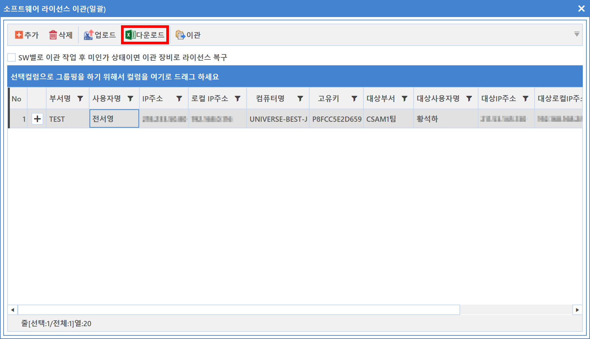
© Copyright SWeeper Inc.. All Rights Reserved
5-5-3. 이관이력
Source: https://www.sweeper.or.kr/etc/manual/553.html
5-5-3. 이관이력
5. 소프트웨어 ›› 5-5. 라이선스 이관 ››


라이선스 이관 이력을 확인 합니다.


참고사항
- [SW별로 이관 작업 후 미인가 상태이면 이관 장비로 라이선스 복구]
이관대상 장비가 라이선스를 받지 못하는 경우, 이관 장비로 라이선스 복구 여부를 체크하는 항목입니다.
이관대상 장비가 라이선스를 받지 못하는 대표적인 경우로는 라이선스 소유 부서가 다른경우, 하위부서포함에 해당하지 않는 경우 등이 있습니다.
이때, 이관이 된 이후 라이선스 정리에 의해 할당정보가 사라진 것이기 때문에, 이관이력에는 "성공"으로 노출 됩니다.
© Copyright SWeeper Inc.. All Rights Reserved
6. 배포
Source: https://www.sweeper.or.kr/etc/manual/6.html
6. 배포


MENU | 배포
SWeeper
에이전트를 통해서 원하는 폴더 또는 파일을 지정된 대상 장비들에 전송하는 기능입니다. Windows 와 Mac OS를 지원합니다.
| THE SOFTWARE MANAGEMENT |
파일 전송 기능뿐아니라 전송 완료 후 포함된 실행파일의 실행도 가능하여 설치파일 전송 후 설치할 수 있도록 응용할 수 있습니다.
또한 대상장비의 상태(파일 존재여부, OS 종류 등)를 분석하여 배포될 수 있도록 다양한 설정을 할 수 있습니다.
© Copyright SWeeper Inc.. All Rights Reserved
6-1. 배포관리
Source: https://www.sweeper.or.kr/etc/manual/61.html
6-1. 배포관리
6. 배포 ››


장비에 SW를 배포하기 위해 패키지를 생성하고, 배포하는 방법에 대해 설명합니다. Windows와 Mac OS를 지원합니다.

© Copyright SWeeper Inc.. All Rights Reserved
6-1-1. 패키지생성
Source: https://www.sweeper.or.kr/etc/manual/611.html
6-1-1. 패키지생성


배포에 사용할 패키지를 생성하고 관리하는 화면입니다.
패키지 생성시에는 어떤 파일을 어떤 위치에 내려받도록 할 것인지 지정하고, 내려받은 경우 어떤 파일이 실행되도록 하는 등의 설정을 통해 패키지를 구성합니다.
이렇게 생성한 패키지는 이후 6-1-2. 배포실행 에서 배포 마법사를 통해 배포할 수 있습니다.


설정방법
- 추가 버튼을 클릭합니다.
-
새 패키지가 추가됩니다.

-
우측에 있는 패키지 정보를 설정합니다. (이름과 OS유형만 입력 후 저장합니다)

- 패키지명 : 패키지명을 입력합니다.
- 패키지버전 : SWeeper에서 인식하는 버전으로 설정을 완료하면 자동으로 표시됩니다.
- OS유형 : Windows 와 Mac 중 선택합니다.
-
자료실 공개 : 사용자 PC 에이전트 UI에서 해당 SW를 노출할지 여부를 선택합니다.
-
자료실 공개하는 경우, OS 유형에 따라 해당하는 SW만 보여집니다.
-
ex) Mac으로 등록된 패키지는 Mac장비에서만 보여짐
-
공개자료실 실행규칙 : 사용자나 관리자가 내려보낸 SW가 어디에 다운로드되고 실행되는 등의 규칙을 선택합니다.
-
설정방법은 아래 배포 파일 실행규칙을 참고합니다.
-
라이선스 체크여부 : SWDB 라이선스 설정과 연동하여 인가된 사용자만이 배포되도록 할지 여부를 선택합니다.
-
소프트웨어 : SWDB 라이선스 연동할 소프트웨어를 선택합니다.
-
라이선스를 할당받은 장비는 에이전트 UI의 SW 신청화면에서 다운로드 받을 수 있게 됩니다.
-
우선순위 : ClientUI에서 보여주는 배포리스트 순서를 설정합니다.
-
설명 : 패키지 관련하여 설명할 내용을 입력합니다.
-
배포 파일(폴더)을 선택하고 업로드(전송) 합니다.

-
새로고침 : 현재 업로드된 파일(폴더)상태를 재확인 합니다.
- 파일추가 : 파일을 추가할 수 있습니다.
- 폴더추가 : 폴더를 추가할 수 있습니다. (폴더 내 파일 포함됨.)
-
삭제 : 배포된 파일을 삭제합니다.
-
삭제 후 업로드(전송)을 해야 서버에서 삭제가 됩니다.
-
전송 : 서버로 파일을 업로드합니다.
-
실행규칙을 등록합니다.
-
실행규칙은 배포 후 실행되는 규칙을 등록 및 설정합니다.

-
추가버튼을 클릭합니다. 실행추가 화면이 팝업되며 설정을 합니다.

-
규칙명 : 실행규칙 이름을 입력합니다.
-
다운로드 폴더 : 대상폴더를 선택 또는 입력 합니다.
-
디렉토리를 지정할 수 있습니다. (OS 유형에 따라 다르게 표시 됩니다.)
-
실행파일 : 배포 후 실행할 실행파일을 선택합니다.
-
실행옵션 : Silent 또는 Quiet 같은 실행옵션이 존재할 경우 입력합니다.
-
Mac 은 Silent 옵션을 지원하지 않습니다.
-
설치계정 : 실행할 수 있는 계정을 선택합니다.
-
설치 화면이 노출되어야 하는 경우 사용자를 선택해야 합니다.
-
(참고) Mac 은 pkg, dmg, mpkg 같은 확장자는 시스템계정으로 실행할 수 없습니다.
-
대상규칙 : 대상의 배포조건을 차단하는 규칙을 설정합니다.
-
소프트웨어의 [설치판단 규칙]과 설정이 동일합니다.
-
필요시부팅여부 : 배포 후 특정 실행으로 인한 재부팅이 필요한 경우 설정합니다.
-
설치판단 규칙을 등록합니다.
-
설치판단 규칙은 대상장비의 조건을 설정하여 배포될 있도록 하는 설정입니다.
-
소프트웨어의 [설치판단 규칙]과 설정방법이 동일합니다.

-
[SW설치 판단 규칙 참조 등록] 버튼을 클릭 하여 SWDB에 입력되어있는 설치판단규칙으로도 설정이 가능합니다.
- 소프트웨어명을 검색한 뒤 해당 소프트웨어를 선택 합니다.
- SWDB와 동일한 규칙으로 패키지 설치 판단 규칙이 설정된 것을 확인 할 수 있습니다.
- 자료실 공개를 비롯한 기타 옵션을 체크하고 저장합니다.

참고사항
- 본 메뉴에서는 프린트 기능이 제공되지 않습니다.
- 자료실 공개 여부 및 라이선스 체크에 따른 사용자UI 화면은 11-3-1-4. SW 자료실에서 확인할 수 있습니다.
주의사항
하나의 패키지를 동시에 다수의 관리자가 전송할 경우 문제가 발생될 수 있기 때문에 이미 전송중인 데이터가 있는 경우 경고메시지가 팝업됩니다.
경고메시지를 확인했음에도 전송을 원할경우 강제전송을 할 수 있으나, 파일/폴더 구조 및 실제 파일에 문제가 생길 수 있습니다.
© Copyright SWeeper Inc.. All Rights Reserved
6-1-2. 배포실행
Source: https://www.sweeper.or.kr/etc/manual/612.html
6-1-2. 배포실행


생성된 패키지를 배포 추가할 수 있는 화면으로 배포 진행현황을 쉽게 확인할 수 있도록 다양한 상태와 그래프로 나타냅니다.


설정방법
- 추가 버튼을 클릭합니다.
-
배포추가/수정 Wizard가 팝업되며, 최초 화면은 Intro 이므로 다음 버튼을 클릭합니다.

-
기본 사항을 설정 합니다. 설정이 완료되면 다음을 클릭합니다.
-
배포명 : 배포현황에 표시될 명칭을 입력합니다.
- 패키지 : 생성된 패키지를 선택합니다.
- 실행규칙 : 생성된 실행규칙을 선택합니다.
-
등급 :
-
일반 : 서버에서 설정된 접속 허용 수량 정책이 적용됨.
-
긴급 : 서버에서 설정된 접속 허용 수량 정책을 무시함.(빠른 배포를 위해 제한 수량을 무시함 - Network Traffic 영향 높음)
-
일정 설정을 합니다. 설정이 완료되면 다음을 클릭합니다.
-
일정 : 현재 날짜가 시작일자와 종료일자 사이이며, 현재 시간이 배포 시작과 종료시간 사이에 있을 경우만 배포합니다.
-
시작일자 : 배포정책 시작일자를 설정합니다.
- 종료일자 : 배포정책 종료일자를 설정합니다.
- 배포시작시간 : 배포정책 시작시간을 설정합니다.
-
배포종료시간 : 배포정책 종료시간을 설정합니다.
-
동기화 설정을 합니다. 설정이 완료되면 다음 버튼을 클릭합니다.
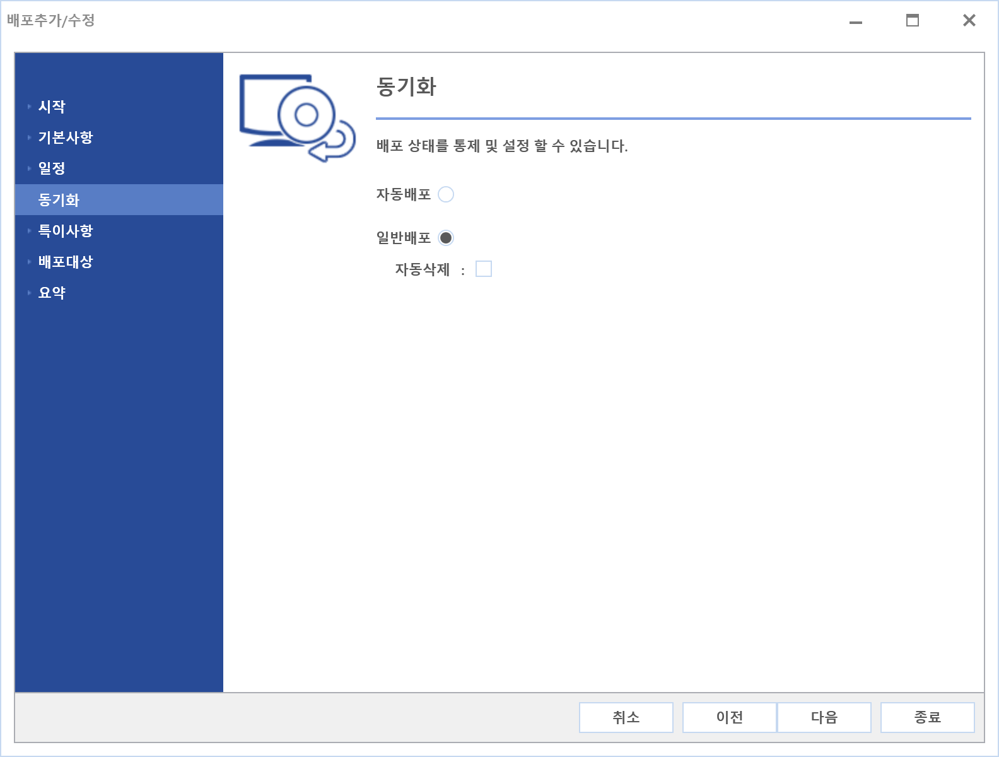 -
자동배포 : 배포 완료 후 파일이 추가 혹은 삭제된 경우 자동으로 재배포 진행 합니다.
-
동기화삭제여부 : 기본 옵션 사용 안함
-
해당 옵션 활성화 시 배포 경로 설정에 주의가 필요합니다.
- 옵션 활성화 시 지정된 경로 내 배포 파일 외의 모든 파일이 삭제됩니다.
(ex: 사용자 바탕화면 으로 경로 지정 시, 바탕화면 내 배포 파일을 제외한 모든 파일이 삭제 됨.)
-
일반배포 : 배포 완료 후 파일이 추가 혹은 삭제되더라도 재배포하지 않습니다.
-
자동삭제여부 : 설치 완료 후 배포파일 다운로드 폴더 내 파일을 삭제합니다. 에이전트에 배포파일이 내려간 시간 기준 24시간 이후 삭제됩니다.
-
특이여부를 설정합니다.
-
설치검증여부 : 설정된 배포 내용이 설치되었는지 여부를 검증하는 기능을 설정합니다.
-
설치유도 방법
-
없음 : 아무런 동작을 하지 않습니다.
- 경고 : 경고 메시지를 팝업시킵니다.
-
네트워크 차단 : 네트워크를 차단합니다.
-
설치검증유형
-
설치시까지 : 해당 배포가 설치될 때까지 검증합니다.
-
Agent 재시작 시 : 에이전트 재시작 시만 검증합니다.
-
강제재설치
-
일반적인 배포는 이미 SW가 설치된 경우 배포하지 않습니다.
-
해당옵션은 사용자 장비의 해당 SW 설치여부와 상관 없이 강제 (재)설치 됩니다.
-
P2P 허용 여부 : P2P 기능 정책을 사용하는 것에 대한 설정을 합니다.
-
배포 대상을 설정합니다. 설정을 완료하면 다음을 클릭합니다.

-
장비추가 : 장비를 추가할 수 있습니다.
- 부서추가 : 부서를 추가할 수 있습니다.
- 필터그룹 추가 : 필터그룹을 추가할 수 있습니다.
- 장비그룹 추가 : 장비그룹을 추가할 수 있습니다.
-
네트워크그룹 추가 : 네트워크그룹을 추가할 수 있습니다.
-
설정을 모두 완료하면 정책설정에 대한 요약 내용을 확인할 수 있습니다.

현황 확인 방법
-
배포 리스트 확인 : 등록된 배포 리스트와 설정을 확인 및 조회할 수 있습니다.
-
배포 진행결과 확인 : 배포 결과 Tab을 선택하면 상태 및 그래프를 확인할 수 있습니다.
-
배포 결과 이력 확인 : 배포 결과 이력 Tab을 선택하면 현재까지 진행된 배포 이력을 확인할 수 있습니다.

-
배포대상 확인 : 배포대상 Tab을 선택하면 배포대상을 확인할 수 있습니다. 추가 버튼(장비, 부서, 필터그룹)을 통해 대상을 더 추가/삭제할 수 있습니다.
\
배포 상태 변경
개별 패키지를 우클릭 하여 변경 하거나, 다중으로 선택 한뒤 우클릭하여, 변경 할 수 있습니다.
참고사항
- 배포의 배포현황 메뉴항목을 선택하면 아래 그림과 같이 "배포작업항목" 메뉴가 추가로 나타납니다. 수행 가능한 내용은 위에서 설명한 내용과 동일 합니다.

- 배포 마법사 "특이여부"의 네트워크 차단은 Mac Agent의 경우 배포 진행 1시간 이내 설치되지 않으면, 네트워크 차단이 됩니다.
이때, 네트워크 차단을 위해서는 해당 프로그램 설치 후 Mac 장비의 재부팅이 필요합니다.
- 배포 마법사 "배포대상"에서 장비들은 배포 패키지 OS유형이 Windows/Mac 을 구분하여, 해당 장비만 등록됩니다.
© Copyright SWeeper Inc.. All Rights Reserved
6-1-3. 서버관리
Source: https://www.sweeper.or.kr/etc/manual/613.html
6-1-3. 서버관리


배포서버는 여러대를 구성하여 운영할 수 있습니다.
다수의 서버 운영 상태 확인을 할 수 있으며, 각 서버별 운영 환경설정을 할 수 있습니다.


설정방법
- 서버 현황 Tab을 선택 합니다.
-
추가 버튼을 클릭합니다. "서버추가/수정" 화면이 팝업되면 해당 정보를 입력합니다.
-
서버이름 : 서버 명칭을 입력합니다.
- IP주소 : 서버 IP주소를 입력합니다.
-
메인배포여부 : 메인서버 설정을 합니다.
-
메인배포 서버는 한대만 설정 가능합니다.
-
최대동시접속수 : 최대접속 가능한 에이전트 수량을 설정합니다.
-
서버 및 Network 과부하를 줄이고 효율적인 사용을 위한 설정입니다.
-
설정이 완료되면 확인 버튼을 클릭합니다.
-
추가된 정보를 확인합니다.

-
배포 서버 프로그램이 설치된 후 Data 서버와 통신되어야만 온라인 표시가 됩니다.
-
그룹 및 관리 대역 Tab을 선택합니다.
-
그룹 및 관리 대역은 관리 운영 서버를 등록하고 해당 서버그룹에서 담당하는 배포 네트워크를 설정할 수 있습니다.
- 추가 버튼을 클릭하면 새 서버 그룹이 생성됩니다.

- 서버 목록 Tab을 선택한 뒤 추가 버튼을 클릭합니다.
- 서버 현황이 팝업되면 검색버튼을 클릭한 뒤 대상 서버를 선택하여 확인 버튼을 클릭합니다.

- 서버 선택이 완료되면 배포 네트워크 Tab을 선택합니다.

-
추가 버튼을 클릭하면 네트워크 추가/수정 화면이 팝업됩니다. 해당 정보를 입력한 뒤 확인 버튼을 클릭합니다.

-
서버그룹 : 해당 서버 그룹을 선택합니다.
- 시작 IP : 대상 네트워크 시작 IP를 입력합니다.
- 끝 IP : 대상 네트워크 마지막 IP를 입력합니다.
- 체크우선순위 : 우선 순위를 설정합니다. "0"이 최우선 순위 입니다.
- 활성화 여부 : 사용여부를 설정합니다.
-
설명 : 확인할 수 있는 간단한 설명을 입력합니다.
-
추가된 정보를 확인합니다.
© Copyright SWeeper Inc.. All Rights Reserved
6-1-4. P2P 설정
Source: https://www.sweeper.or.kr/etc/manual/614P2P.html
6-1-4. P2P 설정


SWeeper에는 배포 시 Network를 효율적으로 사용하기 위해서 P2P 모드를 설정할 수 있습니다.
P2P 모드는 Network 서브넷 범위에서 가장 먼저 배포를 받은 장비가 다른 장비들에게 P2P 방식으로 전달하는 기능입니다.

본사가 아닌 지점에 배포할 경우, 지점 Network 효율이 좋지 못한 경우, 배포 시 Traffic 과부하로 인한 통신 장애 발생가능성이 높습니다.
이런 경우 P2P 모드를 사용하게되면 Traffic 과부하를 최소화하면서 배포를 안정적으로 동작시킬 수 있습니다.
설정방법
설정방법은 매우 간단하며 P2P 허용여부 체크박스에 체크만 하면 됩니다.
© Copyright SWeeper Inc.. All Rights Reserved
7. 자산
Source: https://www.sweeper.or.kr/etc/manual/7.html
7. 자산


MENU | 자산
SWeeper
기업에서 구매한 IT자산을 구매에서 폐기까지 쉽게 운영관리할 수 있으며, 지급/회수, 대여/반납을 위한 효과적인 프로세스를 제공합니다.
| THE SOFTWARE MANAGEMENT |
자산관리에 있어서 중요한 부분은 자산정보 변경에 대한 이력, 실 사용자, 상태 관리가 쉽게 이뤄질 수 있어야하며 SWeeper는 이 부분에 대하여 효율성을 극대화 할 수 있도록 개발되었습니다.

© Copyright SWeeper Inc.. All Rights Reserved
7-1. 자산현황
Source: https://www.sweeper.or.kr/etc/manual/71.html
7-1. 자산현황
7. 자산 ››


조직 내의 모든 자산현황 (구매목록, 거래처목록, 자산목록, 자산이력, 지급/대여)을 관리합니다.
참고사항
자산의 자산현황 메뉴항목을 선택하면 아래 그림과 같이 "자산작업항목" 메뉴가 추가로 나타납니다.
수행 가능한 내용은 7-1-3. 자산목록의 자산 추가/수정/삭제가 가능하고, 7-1-3-1. 자산 지급/대여등의 자주 사용하는 메뉴와 , 8-2-7. 코드관리에서의 자산 코드를 등록/수정 할수 있습니다.

© Copyright SWeeper Inc.. All Rights Reserved
7-1-1. 거래처목록
Source: https://www.sweeper.or.kr/etc/manual/711.html
7-1-1. 거래처목록


자산을 구매한 거래처 내역(회사, 담당자, 계좌정보 등)을 등록합니다.


설정방법
-
추가버튼을 클릭합니다. 거래처 추가화면이 팝업되면 해당 정보를 입력합니다.
-
입력이 완료되면 확인 버튼을 클릭합니다.
- 화면에서 추가된 내용을 확인합니다.
© Copyright SWeeper Inc.. All Rights Reserved
7-1-2. 구매목록
Source: https://www.sweeper.or.kr/etc/manual/716.html
7-1-2. 구매목록


회사에서 구매한 자산정보를 등록/편집 가능하도록하며 자산목록과 연계하여 구매현황 관리가 용이합니다.
대부분 기업에서 구매내용과 실제운영자산 연계가 불가능하여 이력 및 실제 사용에 대한 현실적 어려움에 직면해 있습니다.
SWeeper 자산관리는 이러한 부분을 자산목록 연계 기능을 통해 간단한 회계(감가상각법 적용)를 적용하여 효과적인 자산관리가 될 수 있도록 구현되어 있습니다.
구매목록은 자산관리 기본 정보이므로 무엇보다 중요하며 최대한 자세한 정보를 담을 수 있어야 합니다.
연계된 자산 일부가 확인되지 않더라도 이러한 정보 또한 자산관리 부분에서는 중요한 정보로 활용될 수 있습니다.
개별등록 방법
-
추가 버튼을 클릭합니다. 구매추가 화면이 팝업되면 해당 정보를 입력합니다.
-
구매번호 : 관리하는 구매번호가 있을 경우 입력하며 생성 버튼을 클릭하면 자동생성합니다.
-
기존에 있는 구매번호와 중복되지 않는 정보를 입력해야 합니다.
-
회사명 : 거래처 목록에서 선택합니다. 없을 경우 [거래처 목록]에서 추가합니다.
- 부서이름 : 구매부서를 선택합니다.
-
감가상각법 : 회사 감가상각법 기준을 확인하여 해당하는 방법으로 선택합니다.
-
입력이 완료되면 확인 버튼을 클릭합니다.
엑셀 업로드 방법
-
화면에 마우스 우클릭하여 엑셀업로드 메뉴를 선택합니다.

-
엑셀업로드 Wizard가 팝업되며 "엑셀업로드" 버튼을 클릭하여 해당 Excel 파일을 선택합니다.
-
Excel 양식이 필요한 경우 Wizard에서 다운로드 받아 편집하신 후 저장하시면 됩니다.

-
정보가 로드된 것이 확인되면 다음 버튼을 클릭합니다. 업로드 확인에 대한 메시지가 팝업되며 확인 버튼을 클릭합니다.
- 업로드 처리 결과를 확인한 뒤 완료 버튼을 클릭합니다.
- 화면에서 업로드된 내용을 확인합니다.
연계자산 설정방법
- 구매목록을 선택한 뒤 마우스 우클릭하여 자산 반영 메뉴를 클릭합니다.

-
"자산에 반영하시겠습니까?" 메시지가 팝업되면 확인 버튼을 클릭합니다.
-
자산 반영 기능은 구매된 정보를 바탕으로 자산종류와 수량을 참고하여 구매수량 만큼 연계자산을 자동생성합니다.

주의사항
엑셀 업로드 양식에 맞아야 정상업로드 됩니다. 혹시 에러가 발생했다면 [엑셀 업로드 오류] 를 참고바랍니다.
© Copyright SWeeper Inc.. All Rights Reserved
7-1-3. 자산목록
Source: https://www.sweeper.or.kr/etc/manual/713.html
7-1-3. 자산목록


자산관리 기본이 되는 화면으로 보유한 자산목록을 관리할 수 있는 메뉴입니다. 조직도를 기본으로 자산목록과 하단에 다양한 이력정보를 함께 확인할 수 있습니다.
자산상세 속성창과 함께 사용하면 관리 효율성이 높습니다. 자산관리의 자산상세 속성은 개별 자산의 많은 내용을 쉽게 확인할 수 있도록 다양한 정보를 제공합니다.
우클릭 메뉴 설명
- 자산목록 화면에서 특정 자산을 선택한 후 마우스 우클릭하면 다양한 메뉴가 나타납니다.

자산추가
- 추가 버튼을 클릭합니다. 자산상세 화면이 팝업되며 자산정보 Tab을 선택하여 해당 정보를 입력합니다.

- 자산종류 : 자산종류를 선택합니다. (자산종류에 따라 자산번호가 다르게 자동부여됩니다.)
-
자산번호 : 관리하고 있는 자산번호를 입력합니다.
-
관리하고 있는 자산번호가 없다면 생성 버튼을 클릭합니다. SWeeper에서 자산번호를 자동 생성하여 부여합니다. (생성 기준은 별도 협의 필요합니다.)
-
자산명 : 자산명칭을 입력합니다.
- 자산상태 : 추가는 신규 자산 등록이므로 가용으로 기본 표시됩니다.
- 세부상태 : 자산 세부 상태를 선택합니다.
- 수리상태 : 정상으로 기본 표시됩니다.
- 부서 : 자산 부서를 선택합니다.
- 장비 : 장비를 선택합니다.
- 모델 : 자산 모델을 입력합니다.
- 시리얼번호 : 자산 시리얼번호를 입력합니다.
- 사용용도 : 자산 사용용도를 선택합니다.
- 사용용도상세 : 사용용도 상세 정보를 입력합니다.
- 설치위치 : 자산 설치 위치를 선택합니다.
- 설치위치상세 : 자산 설치 위치 상세정보를 입력합니다.
- 등록일 : 등록하면 등록일자와 시간이 자동 입력됩니다.
- 비고 : 기타 필요한 정보를 입력합니다.
-
장비 사용자
-
자산을 장비와 매핑할 경우 장비의 사용자 정보가 나타납니다.
-
지급한 사용자와 실제 사용자를 비교하기 위해 사용됩니다.
-
자산 사용자
-
자산사용 구분 : 자산 사용 구분을 선택합니다.
- 사번 : 지급 사용자를 입력합니다.
- 사용자명 : 사번 입력 시 자동으로 표시됩니다.
- 부서 : 사번 입력시 자동으로 표시됩니다.
- 직위 : 사번 입력 시 자동으로 표시됩니다.
- 직책 : 사번 입력 시 자동으로 표시됩니다.
- 전화번호 : 사번 입력 시 자동으로 표시됩니다.
- 이메일 : 사번 입력 시 자동으로 표시됩니다.
-
상태 : 사번 입력 시 자동으로 표시됩니다.
-
구매정보 Tab을 선택합니다. 해당 정보를 입력합니다.
-
구매번호 : 매핑되는 구매자산을 찾아 선택합니다.
-
구매자산 선택시 입고번호, 입고일, 단가, 제조일, 감가상각방법, 사용연한은 자동 표시됩니다.
-
입고번호 : 자산 입고 번호를 입력합니다. (회사 내부 회계 정보에서 참고합니다.)
- 입고일 : 자산 입고일을 입력합니다.
- 단가 : 단가 정보를 입력합니다.
- 제조일 : 자산 제조일을 입력합니다.
-
감가상각방법 : 회사에서 사용중인 자산 감가상각방법을 선택합니다.
-
정액법 : 매년 같은 금액을 감가상각하는 방법입니다.
-
정률법 : 초기 감가상각을 하고 마지막에 가장 적은 감가상각을 하는 방법입니다.
-
사용연한 : 회사에서 지정한 사용연한을 입력합니다.
-
부가정보 Tab을 선택합니다. 해당 부가 정보를 입력합니다.

- 부가정보는 기본 제공 정보이외 추가 정보가 필요할 경우 사용되며 해당 명칭변경은 별도 협의가 필요합니다.
자산수정
- 상단의 수정버튼과 혹은 우클릭 자산수정을 이용해 자산 정보를 수정합니다.

- 멀티 선택후 수정도 가능합니다.
자산삭제
-
상단의 삭제버튼과 혹은 우클릭 자산삭제를 이용해 자산 정보를 수정합니다.
-

자산상태변경
- 자산상태를 변경하는 기능입니다.
구매변경
-
구매 번호를 매핑 하는 기능입니다.
-
다중 선택시에도 구매 번호 매핑 가능합니다.
자산지급/대여
- 자산/지급 대여 처리할 수 있는 기능입니다. 자세한 설정방법은 [지급/대여]내역을 참고하십시요.
자산회수/반납
- 자산회수/반납 처리할 수 있는 기능입니다. 자세한 설정방법은 [지급/대여]내역을 참고하십시요.
수리요청 추가
-
수리요청 추가 : 자산 수리요청을 추가할 수 있는 기능입니다.
-
신청자 : 수리 신청자를 선택합니다.
- 요청종류 : 요청종류를 선택합니다.
수리결과 처리
-
자산 수리요청을 완료처리할 수 있는 기능입니다.
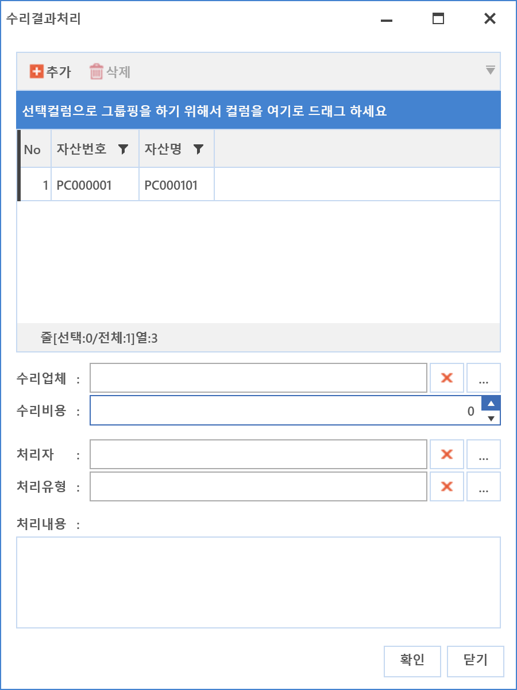 -
수리업체 : 등록된 수리 업체를 선택합니다.
- 등록된 수리업체가 없을 경우 [거래처 목록]에서 추가합니다.
- 수리비용 : 수리에 발생된 비용을 입력합니다.
- 처리자 : 수리 처리자를 선택합니다.
- 처리유형 : 처리된 유형을 선택합니다.
- 처리내용 : 처리한 상제정보가 있을 경우 입력합니다.
메모추가
- 간단한 이슈정보를 추가할 수 있는 기능입니다.
- 추가한 메모는 자산변경내역에서 확인할 수 있습니다.

바코드 출력
- 바코드 정보를 출력할수 있도록 하는 기능이며, 바코드 프린터가 연동되어야만 합니다.

바코드 선출력
- 자산을 생성하기 전에 바코드 정보를 먼저 출력하는 기능으로 바코드 프린터가 연동되어 있어야 사용할 수 있습니다.
-
변수설정
-
추가로 출력하고자 하는 정보(변수)를 설정합니다. (부서명, 자산명, 자산종류 등)
- 단, [2-1-3. 자산] 의 출력내용 대로 바코드 출력이 되니 이곳에 해당 변수가 등록되어 있어야 합니다.
참고사항
- 자산목록은 [일반정보-자원상세] 속성창과 연동이 가능합니다.

주의사항
엑셀 업로드 양식에 맞아야 정상업로드 됩니다. 혹시 에러가 발생했다면 [엑셀 업로드 오류] 를 참고바랍니다.
© Copyright SWeeper Inc.. All Rights Reserved
7-1-3-1. 자산 지급/대여
Source: https://www.sweeper.or.kr/etc/manual/7131.html
7-1-3-1. 자산 지급/대여
7. 자산 ›› 7-1. 자산현황 ›› 7-1-3. 자산목록 ››


각 자산별 지급/대여 이력을 확인할 수 있습니다.
개별 자산 기준으로 생성된 지급/대여 이력을 쉽게 조회할 수 있도록 했습니다.
© Copyright SWeeper Inc.. All Rights Reserved
7-1-3-2. 자산수리목록
Source: https://www.sweeper.or.kr/etc/manual/7132.html
7-1-3-2. 자산수리목록
7. 자산 ›› 7-1. 자산현황 ›› 7-1-3. 자산목록 ››


각 자산별 자산 수리 이력을 확인할 수 있습니다.
개별 자산 기준으로 생성된 수리 이력을 쉽게 조회할 수 있도록 했습니다.
© Copyright SWeeper Inc.. All Rights Reserved
7-1-3-3. 자산변경내역
Source: https://www.sweeper.or.kr/etc/manual/7133.html
7-1-3-3. 자산변경내역
7. 자산 ›› 7-1. 자산현황 ›› 7-1-3. 자산목록 ››


각 자산별 자산정보 변경이력을 확인할 수 있습니다.
개별 자산 기준으로 생성된 자산변경 이력을 쉽게 조회할 수 있도록 했습니다.
설정방법
자산변경 이력의 특이사항이 있을 경우 설명 부분을 수정할 수 있도록 하여 쉽게 찾아 조회할 수 있도록 편의성을 높였습니다.
참고사항
- 버튼 클릭시 변경된 내용을 상세히 확인할 수 있습니다. (변경 항목, 변경 전/후)
© Copyright SWeeper Inc.. All Rights Reserved
7-1-3-4. 실사내역
Source: https://www.sweeper.or.kr/etc/manual/7134.html
7-1-3-4. 실사내역
7. 자산 ›› 7-1. 자산현황 ›› 7-1-3. 자산목록 ››


각 자산별 자산 실사이력을 확인할 수 있습니다.
개별 자산 기준으로 생성된 실사 이력을 쉽게 조회할 수 있도록 했습니다.

© Copyright SWeeper Inc.. All Rights Reserved
7-1-4. 자산이력
Source: https://www.sweeper.or.kr/etc/manual/714.html
7-1-4. 자산이력


전체 자산정보의 변경이력을 확인할 수 있으며, 지급/대여 내역, 자산변경 내역, 실사내역으로 구분됩니다.
자산목록에서는 개별 자산별로 이력을 조회할 수 있지만 자산이력 메뉴는 모든 자산의 이력정보를 통합 조회할 수 있습니다.
탭 설명
- 자산변경 내역 : 자산변경 내역 Tab을 선택한 뒤 기간을 설정하고 '검색' 버튼을 클릭합니다.
- 실사내역 : 실사내역 Tab을 선택한 뒤 기간을 설정하고 '검색' 버튼을 클릭합니다.
설정방법
자산변경 이력의 특이사항이 있을 경우 설명 부분을 수정할 수 있도록 하여 쉽게 찾아 조회할 수 있도록 편의성을 높였습니다.
참고사항
- 버튼 클릭시 변경된 내용을 상세히 확인할 수 있습니다. (변경 항목, 변경 전/후)
© Copyright SWeeper Inc.. All Rights Reserved
7-1-5. 지급/대여
Source: https://www.sweeper.or.kr/etc/manual/719.html
7-1-5. 지급/대여


장비를 지급/대여한 현황을 확인하고 쉽도록 별도 화면을 구성했습니다. 지급/대여와 관련된 상세 이력도 확인 가능합니다.
각 항목별 지급된 자산들은 하단화면을 통해 확인가능하며, 개별적인 회수/반납 작업도 가능합니다.


자산지급 방법
- 추가 버튼을 클릭합니다. 자산지급/대여 화면이 팝업되면 해당정보를 입력합니다.

-
처리구분 : 지급, 대여 중 해당되는 처리 방법을 선택합니다.
-
지급 : 퇴직 시까지 사용되는 자산 지급을 말합니다.
-
대여 : 특정 기간동안 사용되는 자산 지급을 말합니다.
-
대여를 선택하는 경우 반납예정일을 설정하는 내용이 추가됩니다.
-
간단모드
-
세부상태와 메모 입력 만으로 지급/대여를 해줍니다.
-
자산선택
-
추가 버튼을 클릭하여 지급해야 하는 자산을 선택합니다.
-
자산사용 구분 : 자산구분을 선택합니다.
-
개인 : 지정된 직원 한사람이 사용하는 자산을 말합니다.
- 공용 : 다수 사용자가 사용하는 자산을 말합니다.
-
외부/협력사 : 외부 방문자 또는 협력사 직원들이 사용하는 자산을 말합니다.
-
사원번호 : 해당 사용자의 사번을 입력합니다.
- 사용자명 : 사번 입력시 자동으로 입력됩니다.
- 전화번호 : 사번 입력시 자동으로 입력됩니다.
- 반납예정일 : 반납 예정일을 설정합니다. (자산사용 구분을 대여로 선택했을 시 나타납니다.)
- 대상부서 : 지급되는 대상 부서를 선택합니다.
- 사용용도 : 자산사용 용도를 선택합니다.
- 사용용도상세 : 자산사용 용도을 추가 내용을 입력합니다.
- 설치위치 : 설치위치를 선택합니다.
- 설치위치 상세 : 설치위치 추가 내용을 입력합니다.
- 세부상태 : 지급/대여 표시 이외 추가적인 상태가 있을 경우 선택합니다.
-
메모 : 간단한 설명을 추가해야 하는 경우 입력합니다.
-
입력이 완료되면 확인버튼을 클릭합니다.
- 등록된 지급 및 대여 내용을 확인합니다.
자산회수 방법
- 회수 대상 목록을 선택한 후 마우스 우클릭하여 회수/반납 메뉴를 선택합니다.
- 회수 내용을 확인하고 세부상태를 선택한 뒤 간단한 메모내용을 입력합니다.

- 입력이 완료되면 '확인' 버튼을 클릭합니다.
- 화면에 회수/반납 일자가 표시된 것을 확인합니다.

© Copyright SWeeper Inc.. All Rights Reserved
7-1-6. 수리목록
Source: https://www.sweeper.or.kr/etc/manual/720.html
7-1-6. 수리목록


자산목록에 등록한 수리요청 내용을 확인할 수 있으며, 요청된 수리내용에 대해서 처리할 수 있습니다.
설정방법
수리요청은 자산목록에서만 가능합니다. 수리목록에서는 등록된 수리 내용에 대한 결과처리만 가능합니다.
- 처리하기 위한 대상 수리 내용을 선택한 뒤 마우스 우클릭하여 수리결과 처리 메뉴를 선택합니다.
-
수리 처리에 대한 내용을 입력합니다.
-
수리업체 : 등록된 수리 업체를 선택합니다.
-
등록된 수리업체가 없을 경우 [거래처 목록]에서 추가합니다.
-
수리비용 : 수리에 발생된 비용을 입력합니다.
- 처리자 : 수리 처리자를 선택합니다.
- 처리유형 : 처리된 유형을 선택합니다.
-
처리내용 : 처리한 상제정보가 있을 경우 입력합니다.
-
입력이 완료되면 확인 버튼을 클릭합니다.
© Copyright SWeeper Inc.. All Rights Reserved
7-2. 자산검증
Source: https://www.sweeper.or.kr/etc/manual/72.html
7-2. 자산검증
7. 자산 ››


자산 내역에 대해 실사를 진행합니다.

© Copyright SWeeper Inc.. All Rights Reserved
7-2-1. 실사목록
Source: https://www.sweeper.or.kr/etc/manual/721.html
7-2-1. 실사목록


자산실사 현황을 관리할 수 있으며, 실사와 대상 자산을 등록할 수 있기 때문에 실사에 대한 이력관리를 확실하게 정리하여 관리할 수 있습니다.
실사의 경우 다수 인원이 실사한 정보를 취합하여 기록하는 경우가 많기 때문에 Excel 문서를 업로드 할 수 있는 기능을 기본 제공합니다.

실사추가 방법
- 추가 버튼을 클릭합니다. 실사 추가/수정 화면이 팝업되면 해당 내용을 입력합니다.
- 실사명 : 실사 진행 명칭을 입력힙니다.
-
실사기간 : 실사가 진행되는 기간을 설정합니다.
-
실사기간은 단순 일정에 대한 정보이며 실사 기간 종료 후 자동마감되지 않습니다.
-
메모 : 실사 정보에 대한 간단한 추가 정보를 입력합니다.
-
입력이 완료되면 확인 버튼을 클릭합니다.
- 실사 정보가 추가되면 해당 실사 정보를 클릭합니다.
-
하단화면에서 추가버튼을 클릭합니다. 보유자산 화면이 팝업되면 실사대상 자산을 검색하고 선택하여 확인 버튼을 클릭합니다.

-
추가된 실사대상 자산을 확인합니다.

개별 실사 진행방법
- 실사 대상 자산을 선택한 뒤 마우스 우클릭하여 실사결과 변경 메뉴를 선택합니다.
-
실사결과 화면이 팝업되면 해당 정보를 입력합니다.
-
입력이 완료되면 확인 버튼을 클릭합니다.
일괄 실사 진행방법
- 일괄 처리할 실사 대상 자산을 선택한 뒤 마우스 우클릭 합니다.
- Excel 97 - 2003 통합 문서(*.xls), Excel 2007 통합 문서(*.xlsx) 중 선택하면 해당 포멧으로 Data가 저장됩니다.
-
저장된 Excle 문서 파일을 열어 해당 내용을 편집합니다.
-
업로드 적용여부 : 업로드하여 정보를 업데이트 하는 것에 대한 설정입니다.
- 실사결과 : 미적용/유/무 중 선택하여 입력합니다.
-
정보 입력과 관련해서는 Excel 문서 하단 Sheet를 참고합니다.
-
실사 대상 장비 선택 후 마우스 우클릭하여 엑셀 업로드 메뉴를 선택합니다.
-
Excel 업로드 Wizard가 팝업되면 엑셀업로드 버튼을 클릭하여 저장된 Excel 문서를 선택합니다.
-
정보가 로드된 것이 확인되면 다음 버튼을 클릭합니다. 업로드 확인에 대한 메시지가 팝업되며 확인 버튼을 클릭합니다.


-
업로드 처리 결과를 확인한 뒤 완료 버튼을 클릭합니다.
-
처리 결과가 실패되는 경우는 Excel 문서 작성 시 오류일 수 있으므로 다시한번 재확인합니다.
-
최종 업로드된 결과를 화면에서 확인합니다.

실사 마감
- 마감할 실사를 선택한 뒤 마우스 우클릭하여 실사 마감을 선택합니다.
-
확인을 누릅니다.
-
미완료 실사가 없을 경우
- 미완료 실사가 있을 경우
자산 반영
- 자산 실사가 완료된 자산을 선택하고 우클릭 자산반영을 누릅니다.
- 자산반영 확인에 대한 메시지가 팝업되며 확인 버튼을 클릭합니다.
- 반영 완료된 자산은 자산반영에 체크 표시됩니다.

모바일 자산실사
- 모바일 자산실사 앱을 통해 추가한 자산은 추가자산에 체크 표시됩니다.
- 자산번호가 없는 경우는 자산반영을 하면 자동 채번되어 자산목록에 추가됩니다.
오프라인 실사
- 자산 실사 목록에서 우클릭하여 실사 내보내기 시 마감 되지 않은 모든 실사정보가 파일로 저장 됩니다.

- 모바일 자산 실사 앱의 자산정보 다운로드에서 파일 읽어오기 기능을 통해 저장 한 파일을 통한 자산 실사가 가능합니다.
- 모바일 자산 실사 앱의 실사정보 업로드에서 파일 내보내기 기능 을 통해 완료한 자산실사 정보를 파일로 저장 할 수 있습니다.
- 자산 실사 목록에서 우클릭 하여 실사 업로드 시 실사 데이터가 반영이 됩니다.
참고사항
관리자 관리에서 관리자에 사용자가 매핑되어 있어야 실사자에 이름이 나타납니다.
주의사항
엑셀 업로드 양식에 맞아야 정상업로드 됩니다. 혹시 에러가 발생했다면 [엑셀 업로드 오류] 를 참고바랍니다.
© Copyright SWeeper Inc.. All Rights Reserved
7-3. 설치현황에서 자산등록
Source: https://www.sweeper.or.kr/etc/manual/73.html
7-3. 설치현황에서 자산등록
7. 자산 ››


일반정보의 "장비설치현황"에서 자산등록이 가능합니다. 상세 내용은 [일반정보-자산으로 등록]을 참고 바랍니다.
© Copyright SWeeper Inc.. All Rights Reserved
7-4. 속성창
Source: https://www.sweeper.or.kr/etc/manual/74.html
7-4. 속성창
7. 자산 ››


[메인화면] 에서 표시하기 힘든 많은 데이터를 별도의 창을 이용하여 상세한 정보를 표시합니다.
필드 목록이 많을 경우 한 눈에 볼 수 있는 내용이 제한적이므로 SWeeper에서는 속성창이라는 확장 화면을 제공하고 있습니다.
특히 최근 대형화되고 가로비율이 큰 모니터의 경우 상당히 효과적으로 관리할 수 있도록 화면 구성이 가능합니다.
© Copyright SWeeper Inc.. All Rights Reserved
7-4-1. 자산상세
Source: https://www.sweeper.or.kr/etc/manual/741.html
7-4-1. 자산상세


선택한 장비의 자산에 대한 상세정보를 볼 수 있는 속성창입니다.
© Copyright SWeeper Inc.. All Rights Reserved
8. 설정
Source: https://www.sweeper.or.kr/etc/manual/8.html
8. 설정


MENU | 설정
SWeeper
관리자 계정 및 권한 설정과 조직도 구성, 서버구성에 대한 설정을 할 수 있습니다.
| THE SOFTWARE MANAGEMENT |
중요한 내용으로 관리자 권한 설정 시 잘못 할당되지 않도록 주의하시기 바랍니다.
© Copyright SWeeper Inc.. All Rights Reserved
8-1. 관리자 설정
Source: https://www.sweeper.or.kr/etc/manual/8-1.html
8-1. 관리자 설정
8. 설정 ››


SWeeper 콘솔 접속 계정 및 권한을 설정하며, 접속로그 현황관리와 쿼리 관리자 설정을 할 수 있습니다.
© Copyright SWeeper Inc.. All Rights Reserved
8-1-1. 관리자 관리
Source: https://www.sweeper.or.kr/etc/manual/8-1-1.html
8-1-1. 관리자 관리
8. 설정 ›› 8-1. 관리자 설정 ››


SWeeper 콘솔 관리자 접속 계정을 설정할 수 있습니다.

관리자 추가 설정방법
- 추가버튼을 클릭합니다. 관리자 추가/수정 화면이 팝업되면 관리자 정보 Tab 선택 후 해당 정보를 입력합니다.
- 로그인 아이디 : 생성할 계정 아이디를 입력합니다.
- 관리자명 : 사용자 이름을 입력합니다.
- 사용자 : 계정사용자를 찾아 선택합니다.
- 권한그룹 : 해당되는 권한을 선택합니다. 추가 방법은 [권한관리]를 참고하시기 바랍니다.
- 관리자 허용 IP 목록 : 특정 IP에서만 사용할 수 있도록 하는 설정입니다.
지정된 IP를 입력하고 추가버튼을 클릭한 후 등록된 IP를 선택하고 확인 버튼을 클릭하면 됩니다.

- 관리허용 시작일 : 계정 사용 시작일을 입력합니다.
- 관리허용 종료일 : 계정 사용 만료일을 입력합니다.
-
사용 : 계정 사용 여부를 설정합니다.
-
슈퍼 관리자는 관리자 '사용' 옵션을 변경 할 수 있으나, 일반 관리자는 옵션 변경이 불가능 합니다.
-
일반 관리자는 '사용' 옵션이 해제 된 관리자가 표시되지 않습니다.
-
슈퍼 관리자는 '사용' 옵션이 해제 된 관리자여도 표시 됩니다
-
계정 잠금 : 계정 잠금 설정을 합니다.
-
체크가 되어 있으면 계정이 잠기게 되어 사용할 수 없습니다.
-
계정 잠김이 자동 체크될 경우
-
로그인 연속 실패 : 관리자 로그인 연속실패 5회가 된 경우
-
사용기간만료 : 관리허용종료일이 지난 뒤에 로그인한 경우
-
입력이 완료되면 담당부서 Tab을 선택합니다.
-
담당부서는 관리 대상을 부서에 제한하기 위한 권한 입니다.
-
담당 부서를 선택합니다. 선택이 완료되면 담당 네트워크 Tab을 선택합니다.

-
담당 네트워크는 관리 대상을 관리 네트워크에 제한하기 위한 권한입니다.
-
추가 버튼을 클릭하여 관리네트워크를 추가하고 추가된 네트워크를 우측 화살표 버튼을 클릭하여 설정합니다.

-
설정이 완료되면 이벤트 Tab을 선택합니다.
-
이벤트 설정은 특정 이벤트 발생 시 관리자에게 알리기 위한 방법을 설정합니다.
-
알람 : 콘솔에서 알람 메시지가 나타납니다.
-
이메일 : 관리자 계정에 설정된 이메일 주소로 알림 메일을 발송합니다.
-
설정이 완료되면 확인 버튼을 클릭합니다.
- 등록된 관리자 정보를 확인 합니다.
기타 설정방법
대상 관리자를 선택한 뒤 마우스 우클릭하면 설정 가능한 메뉴가 나타납니다.

- 관리자 추가 : 추가 버튼과 같이 관리자를 추가할 수 있습니다.
- 비밀번호 변경 : 비밀번호를 변경합니다.
- 비밀번호 초기화 : 설정된 비밀번호를 netrix로 초기화 합니다
참고사항
-
생성된 계정은 보안 문제로 인해 삭제되지 않습니다. 계정 추가에 주의하시기 바랍니다.
-
비밀번호는 수퍼관리자만 수정이 가능하며 기존의 비밀번호를 확인하는 단계없이 바로 비밀번호를 변경합니다.
수퍼관리자가 아닌 관리자 자신의 비밀번호를 변경하려면 비밀번호 변경 메뉴를 사용합니다.
- 담당부서는 설정된 장비만 보여지며, 장비의 추가/수정시 지정된 권한의 부서만 지정이 가능합니다.
예를들면, 담당부서 아닌 곳에서 장비추가가 가능하지만, 부서 지정시 부여받은 부서만 선택할 수 있습니다.
이는 수정시에도 동일합니다.
- 담당부서 선택시, 우클릭 메뉴에서 특정부서를 한번에 선택하거나, 해제할 수 있습니다.

-
[비밀번호 초기화]는 슈퍼 관리자만 가능합니다.
-
슈퍼관리자는 비밀번호 초기화를 할 수 없습니다.
© Copyright SWeeper Inc.. All Rights Reserved
8-1-2. 접속로그
Source: https://www.sweeper.or.kr/etc/manual/8-1-2.html
8-1-2. 접속로그
8. 설정 ›› 8-1. 관리자 설정 ››


관리자별로 SWeeper 관리콘솔에 접속한 이력을 조회할 수 있으며 접속 시작일과 종료일, 접속시간, IP정보를 확인할 수 있습니다.


© Copyright SWeeper Inc.. All Rights Reserved
8-1-3. 권한관리
Source: https://www.sweeper.or.kr/etc/manual/8-1-3.html
8-1-3. 권한관리
8. 설정 ›› 8-1. 관리자 설정 ››


각각의 관리자에게 부여할 권한을 그룹으로 설정할 수 있습니다.

설정방법
-
추가버튼을 클릭합니다. 새그룹이 생성되며 각 권한별 설정을 합니다.
-
메뉴 권한 : 메뉴 보임에 대한 권한 설정입니다.
- 기능 권한 : 메뉴 화면에서 설정하는 기능들에 대한 권한 설정입니다.
-
명령 선택 : 에이전트에 전송할 명령 권한 설정입니다.
-
해당 메뉴 권한 내용에 마우스 우클릭하여 권한 설정 변경을 합니다.
-
설정이 완료되면 저장버튼을 클릭합니다.
참고사항
-
본 메뉴에서는 프린트 기능이 제공되지 않습니다.
-
슈퍼관리자는 설정한 권한과 관계없이 모든 권한을 가지고 있습니다.
-
변경된 권한은 콘솔을 재시작해야만 적용되므로 주의하시기 바랍니다.
© Copyright SWeeper Inc.. All Rights Reserved
8-1-4. 쿼리관리자
Source: https://www.sweeper.or.kr/etc/manual/8-1-4.html
8-1-4. 쿼리관리자
8. 설정 ›› 8-1. 관리자 설정 ››


쿼리 관리자는 기본 보고서로 제공되지 않는 내용에 대해, 대응하기 위해 개발된 기능입니다. 사용된 SQL 쿼리문을 저장관리할 수 있으며, 조회된 결과를 파일로 저장할 수 있습니다.


쿼리추가 설정방법
-
그룹추가 버튼을 클릭합니다.
-
그룹추가 : 쿼리 그룹을 추가합니다. 생성된 그룹을 선택하고 다시 그룹추가하면 하위 그룹이 생성됩니다.
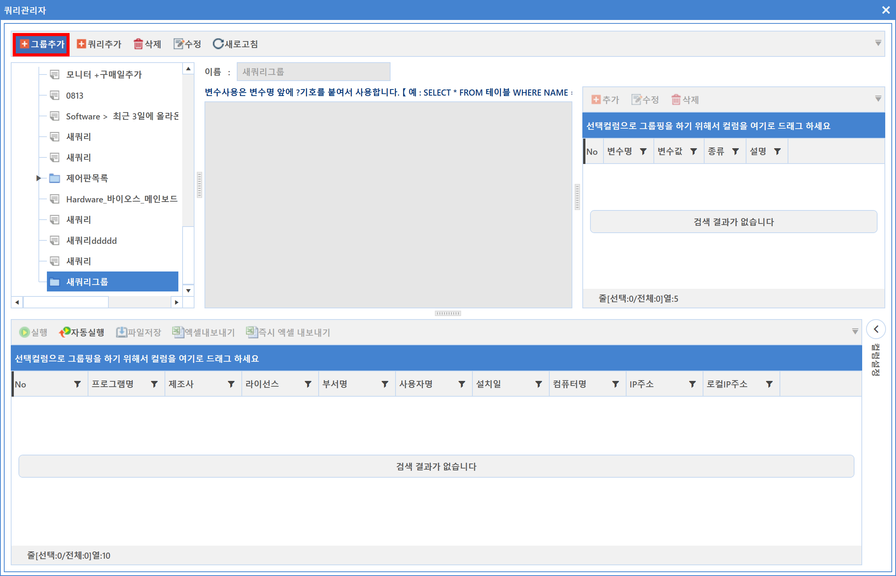 -
이름 : 쿼리 그룹명을 입력합니다.
-
그룹 이름을 변경한 뒤 저장 버튼을 클릭합니다.
-
생성된 그룹을 선택하고 쿼리 추가 버튼을 클릭합니다.
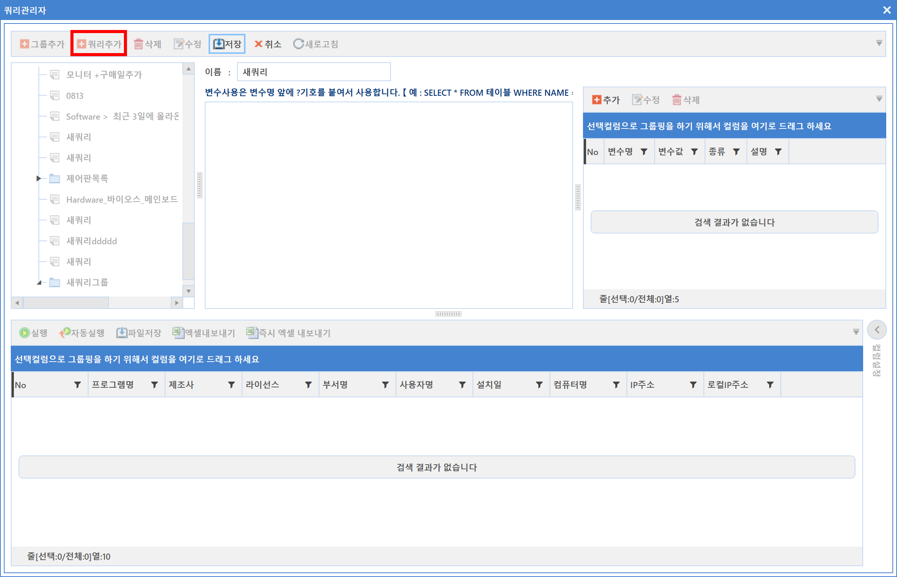 -
이름 : 쿼리명을 입력합니다.
-
쿼리 등록 : SWeeper는 MySQL을 DBMS로 사용합니다. MySQL에서 사용되는 표준 쿼리로 입력합니다.
-
쿼리명을 입력하고 정보를 조회할 수 있는 쿼리를 입력합니다.

-
입력이 완료되면 화면 하단에 실행/자동실행/파일저장이 활성화 되며 실행 버튼을 클릭하면 쿼리 결과가 조회됩니다.
-
실행 : 쿼리를 실행합니다.
- 자동실행 : 해당 쿼리를 선택했을 경우 자동 실행할 수 있는 설정입니다.
- 파일저장 : 조회 결과를 *.xls 파일 포멧으로 저장합니다.
쿼리 변수값 설정
쿼리에 변수값을 지정하여 관리자가 입력하는 변수 값을 반영하여 조회할 수 있는 기능입니다.
- 쿼리 입력 시 변수가 필요한 변수명 앞에 '?' 기호를 붙여 사용합니다.
예) SELECT * FROM TCM_EQUIP WHERE WORKGROUP = ?WORKGROUP
- 변수지정이 완료되면 우측 변수 설정의 편집 버튼들이 활성화 됩니다.

-
추가버튼을 클릭하면 파라메터 설정화면이 팝업되며 해당 정보를 입력합니다.
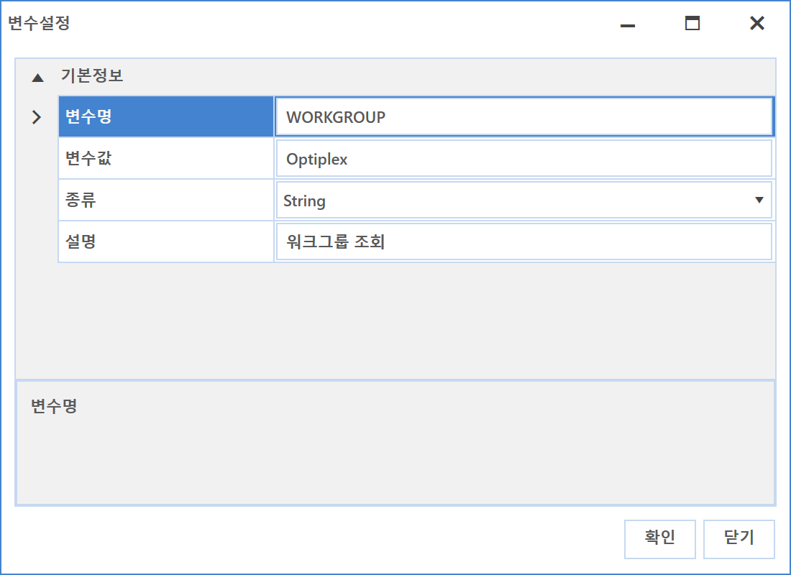 -
변수명 : 원하는 변수명을 입력합니다.
- 변수값 : 원하는 조회의 정보값을 입력합니다.
- 종류 : 데이터 타입을 설정합니다.
-
설명 : 간단한 설명을 입력합니다.
-
입력이 완료되면 확인 버튼을 클릭합니다.
- 실행버튼을 클릭하여 설정한 변수값을 기준으로 조회되는지 확인합니다.
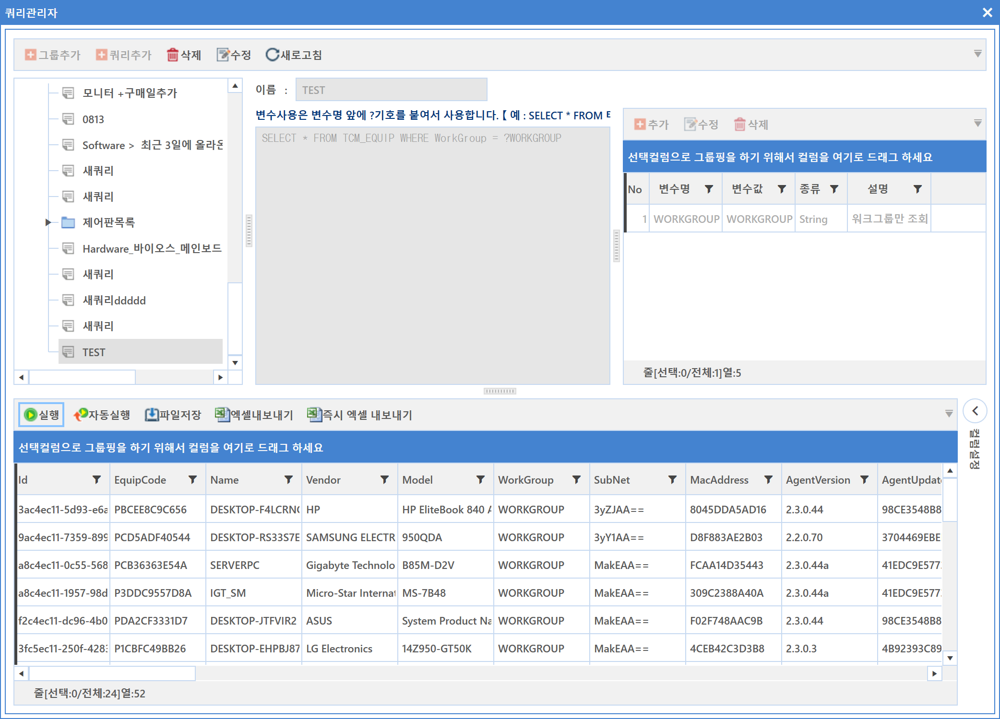
엑셀내보내기
문서 양식이 이미 작성되어 있는 경우 엑셀내보내기 기능을 이용하여 쿼리 내용을 저장합니다.
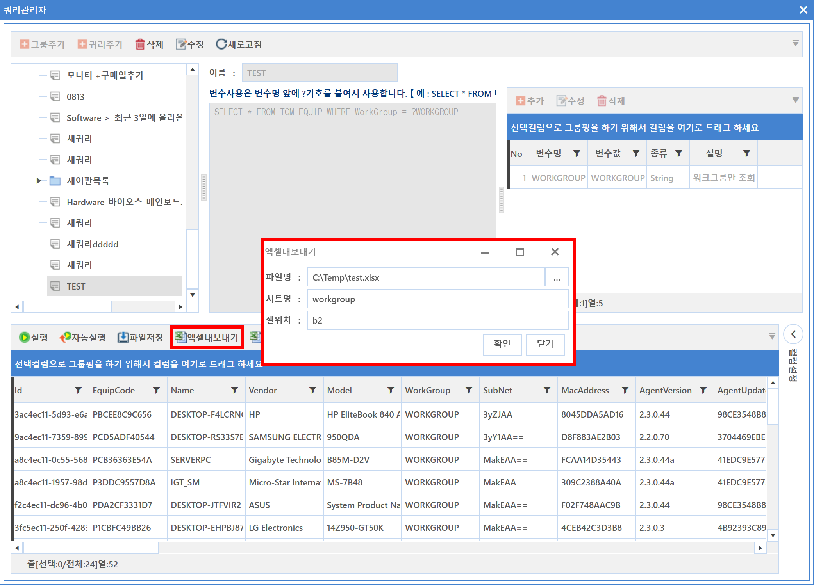
- 파일명 : 양식이 작성된 파일을 선택합니다.
- 시트명 : 내보내기 하려는 시트명을 입력합니다.
- 셀위치 : 내보내기 하려는 셀 위치를 입력합니다.
참고사항
본 메뉴에서는 프린트 기능이 제공되지 않습니다.
© Copyright SWeeper Inc.. All Rights Reserved
8-2. 정보 설정
Source: https://www.sweeper.or.kr/etc/manual/8-2.html
8-2. 정보 설정
8. 설정 ››


정보설정에서는 그룹관리(부서, 필터, 네트워크, 장비)를 위해 필요한 다양한 그룹을 생성하고 관리할 수 있습니다. 또한 인사정보나 서버관리, 코드관리 같은 설정을 할 수 있습니다.
© Copyright SWeeper Inc.. All Rights Reserved
8-2-1. 부서관리
Source: https://www.sweeper.or.kr/etc/manual/8-2-1.html
8-2-1. 부서관리
8. 설정 ›› 8-2. 정보 설정 ››


부서 조직을 설정 및 입력할 수 있으며, 인사 연동을 하는 경우 자동으로 부서가 생성됩니다.


설정방법
- 추가버튼을 클릭합니다. 새 부서가 생성됩니다.
-
부서 생성 시 선택된 부서의 하위 부서로 생성되므로 설정 시 주의하시기 바랍니다.
-
부서정보를 입력합니다.
-
부서코드 : SWeeper 기준으로 자동 생성됩니다.
- 부서이름 : 부서명칭을 입력합니다.
- 전체경로명 : 전체 경로명이 나타납니다.
-
부서 속성 01 ~ 05 : 추가 정보가 필요할 경우 설정하여 입력합니다.
-
입력이 완료되면 저장 버튼을 클릭합니다.
부서 우선순위 변경
- 생성된 부서 항목을 마우스로 클릭하여 Drag & Drop 할 수 있습니다.

- 상/하위 부서로 이동은 물론, 같은 부서내에서의 우선순위를 지정할 수 있습니다.
참고사항
- 본 메뉴에서는 프린트 기능이 제공되지 않습니다.
- 부서관리는 장비 부서 설정을 기준으로 자동 분류하기 위한 설정입니다.
- 설정된 부서는 조직도에서 나타납니다.

- 부서 또한 파일 업로드를 제공하며, 방법은 5-1-1. 라이선스와 동일합니다.

- 우클릭 엑셀 내보내기시, 해당 PC에 다운받으려는 엑셀 버전이 설치되어 있어야 합니다.
업로드시에는 다운받은 엑셀파일을 임의로 변경하면, 업로드시 실패할 수 있습니다. 정확한 데이터만 입력해 주시기 바랍니다.
다운받은 엑셀파일에서 진한 회색이 된 곳은 필수 입력 컬럼입니다.
붉은색 컬럼은 업로드가 가능하며 검정색 컬럼은 업로드가 불가합니다.
주의사항
내려받은 엑셀샘플 양식의 서식이 변경되면, 업로드시 문제가 될 수 있습니다.
다른 파일에서 Copy & Paste 시, 의도치 않게 서식이 변경되어 오류가 발생됨을 주의하시기 바랍니다.
(대표적인 예)
구매일과 만료일 입력시, 구매일 (텍스트)을 날짜로 변경되었을 경우, 실제 데이터 오류의 예
- 셀서식을 임의로 날짜로 변경
- 업로드시 데이터 오류
© Copyright SWeeper Inc.. All Rights Reserved
8-2-2. 필터그룹
Source: https://www.sweeper.or.kr/etc/manual/8-2-2.html
8-2-2. 필터그룹
8. 설정 ›› 8-2. 정보 설정 ››


부서 및 네트워크 그룹은 고정된 정보값을 기준으로 그룹 구성을 합니다. 필터그룹은 DB쿼리를 이용한 조건에 의해 다이나믹한 그룹을 구성할 수 있습니다.
- 설정방법은 [쿼리 관리자]와 유사한 구조로 되어 있습니다.
-
단, 변수 설정이 없으며, SELECT 기준 컬럼값은 "ID" 컬럼을 기본으로 합니다.
-
ID 컬럼은 장비 정보를 저장하고 있는 DB 테이블의 장비 고유 정보를 갖고 있는 컬럼입니다.
-
설정의 상세한 내용은 [쿼리 관리자]를 참고합니다.

설정방법
-
그룹 추가 버튼을 클릭합니다.
-
선택한 그룹 하위 그룹으로 추가되므로 설정 시 주의합니다.
-
생성된 그룹을 선택하고 필터 추가 버튼을 클릭합니다.
-
추가된 필터를 선택하고 우측에 이름과 쿼리를 입력합니다.
-
쿼리 관리자와는 달리 별도 저장 버튼 없이 정보가 저장됩니다.
-
입력이 완료되면 실행 버튼을 클릭하여 결과를 확인합니다.
참고사항
-
본 메뉴에서는 프린트 기능이 제공되지 않습니다.
-
필터 그룹 설정은 에이전트 정보의 특정값을 필터하여 자동 분류하기 위한 설정입니다.
설정된 필터 그룹은 조직도의 필터 그룹 목록에서 나타납니다.
© Copyright SWeeper Inc.. All Rights Reserved
8-2-3. 네트워크 설정
Source: https://www.sweeper.or.kr/etc/manual/8-2-3.html
8-2-3. 네트워크 설정
8. 설정 ›› 8-2. 정보 설정 ››


네트워크 단위로 관리하기 위한 그룹설정을 할 수 있습니다.

설정방법
-
추가버튼을 클릭합니다. 새 네트워크 그룹이 생성됩니다.

-
부서관리 설정과 같이 해당 그룹을 선택한 후 추가버튼을 클릭할 경우 하위 그룹을 생성됩니다.
-
화면 우측 설정정보를 입력합니다.
-
이름 : 네트워크 그룹명을 입력합니다.
- 버전 : IP 버전을 설정합니다.
- 시작 IP : 그룹 시작 IP를 입력합니다.
-
끝 IP : 그룹 끝 IP를 입력합니다.
-
입력이 완료되면 저장 버튼을 클릭합니다.
참고사항
- 본 메뉴에서는 프린트 기능이 제공되지 않습니다.
- 네트워크 그룹 설정은 에이전트 정보의 IP를 기준으로 자동 분류하기 위한 설정입니다.
설정된 네트워크 그룹은 조직도의 네트워크 구성 목록에서 나타납니다.

© Copyright SWeeper Inc.. All Rights Reserved
8-2-4. 장비그룹
Source: https://www.sweeper.or.kr/etc/manual/8-2-4.html
8-2-4. 장비그룹
8. 설정 ›› 8-2. 정보 설정 ››


자산정책, 소프트웨어 정책등을 그룹으로 묶어서 에이전트에 적용하기 위한 정보를 설정합니다.


참고사항
- 본 메뉴에서는 프린트 기능이 제공되지 않습니다.
- 장비 그룹 설정은 장비를 원하는 그룹으로 묶기 위한 설정입니다.
설정된 장비 그룹은 조직도의 장비그룹에서 나타납니다.

8-2-5. 사용자관리
Source: https://www.sweeper.or.kr/etc/manual/8-2-5.html
8-2-5. 사용자관리
8. 설정 ›› 8-2. 정보 설정 ››


사용자 정보 추가 및 편집 관리가 가능하며 사용장비, 사용자 정보이력, 사용장비이력 등을 확인할 수 있습니다.
인사정보 연동시 자동으로 구성할 수 있습니다.
설정방법
- 추가버튼을 클릭합니다. 사용자 정보/수정 화면이 팝업되며 해당 정보를 입력합니다.
- 입력이 완료되면 확인 버튼을 클릭합니다.
사용자와 관련된 부가정보 조회 방법
사용자 정보 화면하단에 3가지 Tab이 존재하며 사용자 장비, 사용자 정보 이력, 사용장비 이력을 조회 할 수 있습니다.
-
사용자 장비 Tab : 사용자가 사용중인 장비를 확인할 수 있습니다.
-
사용자 정보 이력 Tab : 사용자 정보가 변경된 이력을 확인할 수 있습니다.
-
사용 장비 이력 : 사용 장비의 변경 이력을 확인할 수 있습니다. 과거 사용했었던 장비도 표시됩니다.
참고사항
- [사용자 정보이력]과 [사용장비이력]에서 + 버튼 클릭시 변경된 내용을 상세히 확인할 수 있습니다. (변경 항목, 변경 전/후)
- 사용자 관리 또한 파일 업로드를 제공하며, 방법은 5-1-1. 라이선스와 동일합니다.
- 우클릭 엑셀 내보내기시, 해당 PC에 다운받으려는 엑셀 버전이 설치되어 있어야 합니다.
업로드시에는 다운받은 엑셀파일을 임의로 변경하면, 업로드시 실패할 수 있습니다. 정확한 데이터만 입력해 주시기 바랍니다.
다운받은 엑셀파일에서 진한 회색이 된 곳은 필수 입력 컬럼입니다.
붉은색 컬럼은 업로드가 가능하며 검정색 컬럼은 업로드가 불가합니다.
주의사항
내려받은 엑셀샘플 양식의 서식이 변경되면, 업로드시 문제가 될 수 있습니다.
다른 파일에서 Copy & Paste 시, 의도치 않게 서식이 변경되어 오류가 발생됨을 주의하시기 바랍니다.
(대표적인 예)
구매일과 만료일 입력시, 구매일 (텍스트)을 날짜로 변경되었을 경우, 실제 데이터 오류의 예
- 셀서식을 임의로 날짜로 변경
- 업로드시 데이터 오류
© Copyright SWeeper Inc.. All Rights Reserved
8-2-6. 서버관리
Source: https://www.sweeper.or.kr/etc/manual/8-2-6.html
8-2-6. 서버관리
8. 설정 ›› 8-2. 정보 설정 ››


서버 관리는 SWeeper의 데이터 서버, 명령서버를 관리하도록 구현되었으며, 다중 서버 운영시 각 서버들의 상태를 확인할 수 있습니다.
특히 장비를 많이 사용하는 경우 다중 서버 및 접속 에이전트를 분배하여 운영할 수 있는 환경설정을 할 수 있습니다.


© Copyright SWeeper Inc.. All Rights Reserved
8-2-6-1. 데이터 서버
Source: https://www.sweeper.or.kr/etc/manual/8-2-6-1.html
8-2-6-1. 데이터 서버
8. 설정 ›› 8-2. 정보 설정 ›› 8-2-6. 서버관리 ››


데이터 서버는 명령서버들의 DB 연결을 담당합니다. 하나이상의 서버운영이 가능하며 데이터 서버 메뉴는 이러한 서버들을 관리하기 위해 구현되었습니다.
각 데이터 서버들의 접속과 관련한 보고일자 및 상태를 통해 운영 상태를 확인할 수 있습니다.

설정방법
-
데이터 서버 Tab을 선택한 뒤 추가버튼을 클릭합니다. 서버 정보 등록/수정 화면이 팝업되면 해당 정보를 입력합니다.
-
마스터 서버여부 : 마스터는 메인이 되는 서버 기능을하며 한대만 설정 가능합니다.
-
입력이 완료되면 확인 버튼을 클릭합니다.
- 추가된 정보를 화면에서 확인합니다.
참고사항
서버관리를 위해서는 해당 서버에 SWeeper 데이터 서버 프로그램이 설치되어 있어야 합니다.
© Copyright SWeeper Inc.. All Rights Reserved
8-2-6-2. 명령서버
Source: https://www.sweeper.or.kr/etc/manual/8-2-6-2.html
8-2-6-2. 명령서버
8. 설정 ›› 8-2. 정보 설정 ›› 8-2-6. 서버관리 ››


명령서버는 에이전트들과 통신을 담당하며 명령과 처리 결과를 데이터 서버로 전달하는 역할을 합니다.
하나 이상의 서버 구성이 가능하기 때문에 명령서버 메뉴는 이러한 명령서버들을 그룹단위로 관리할 수 있으며, 각 서버 그룹이 담당하고 있는 에이전트 IP대역을 설정하여 분배관리할 수 있습니다.
설정방법
-
명령서버 Tab을 선택한 뒤 추가버튼을 선택하면 새 서버그룹이 생성됩니다.
-
서버목록 Tab을 선택한 뒤 추가 버튼을 클릭합니다.
-
서버그룹 : 생성한 서버 그룹을 선택합니다.
- 이름 : 서버 명칭을 입력합니다.
- 서버 IPv4 주소 : 서버 IP를 입력합니다.
-
최대 에이전트 개수 : 서버 접속 가능한 에이전트 수량을 입력합니다.
-
전체 서버에서 각 서버의 최대 에이전트 접속 수량이 초과할 경우 자동으로 분산 접속시킵니다.
-
우선순위 : 에이전트 접속 우선 수위를 설정합니다.
-
입력이 완료되면 확인 버튼을 클릭합니다.
- 추가된 내용을 확인 합니다.
- 담당 IP 대역 Tab을 선택한 뒤 추가버튼을 클릭합니다.
-
IP대역 정보 등록/수정 화면이 팝업되면 해당 정보를 입력합니다.
-
입력이 완료되면 확인 버튼을 클릭합니다.
- 추가된 정보를 확인합니다.
© Copyright SWeeper Inc.. All Rights Reserved
8-2-7. 코드관리
Source: https://www.sweeper.or.kr/etc/manual/8-2-7.html
8-2-7. 코드관리
8. 설정 ›› 8-2. 정보 설정 ››


자산, 장비, 사용자, 소프트웨어 입력 설정에서 사용되는 코드를 추가/편집 할 수 있습니다. 특히 상태나 용도등은 별도 커스트마이징 없이 고객사의 상황에 맞게 변경 적용할 수 있도록 구현되었습니다.
설정방법
- 코드 추가/수정이 필요한 목록을 선택합니다.
-
우측에 해당 코드들이 표시되면서 편집 기능이 활성화 됩니다.
-
추가 버튼 또는 수정 버튼을 사용하여 필요한 내용을 편집합니다.
참고사항
본 메뉴에서는 프린트 기능이 제공되지 않습니다.
© Copyright SWeeper Inc.. All Rights Reserved
9. 보기
Source: https://www.sweeper.or.kr/etc/manual/9.html
9. 보기


MENU | 보기
SWeeper
장비목록이나 자산목록, 소프트웨어 목록에 대한 상세정보를 추가적으로 결합하여 비교할 수 있는 기능입니다.
| THE SOFTWARE MANAGEMENT |
추가적으로 보고서와 대시보드 기능도 제공하여 다양한 데이터 분석이 가능하도록 했습니다.

참고사항
본 메뉴에서는 프린트 기능이 제공되지 않습니다.
© Copyright SWeeper Inc.. All Rights Reserved
9-1. 보고서
Source: https://www.sweeper.or.kr/etc/manual/9-1.html
9-1. 보고서
9. 보기 ››


SWeeper는 에이전트에서 수집된 데이터를 기준으로 자료를 분석할 수 있는 다양한 보고서를 제공하고 있습니다.
-
일반정보
-
운영체제 현황 보고서
- AGENT 현황 보고서
-
하드웨어 현황 보고서
-
소프트웨어
-
자원현황
-
소프트웨어 자원현황
-
소프트웨어 자원 실사용현황
-
SPC +DB 불법 소프트웨어 차단
-
+DB 미인가 소프트웨어 진단 요약 보고서
-
+DB 미인가 소프트웨어 진단 상세 보고서
-
구매대장 대비 설치현황
-
대통령 훈령보고서
-
소프트웨어 설치현황표
- 소프트웨어 관리대장
-
소프트웨어 점검결과 확인표
-
부서별 설치현황
-
사용자별 설치현황
-
자산
-
부서별 자산수량 보고서
- 자산별 상태현황 보고서
© Copyright SWeeper Inc.. All Rights Reserved
9-1-1. 리포트
Source: https://www.sweeper.or.kr/etc/manual/9-1-1.html
9-1-1. 리포트


일반정보, 소프트웨어, 자산으로 분류되는 보고서를 출력할 수 있으며, 보고서 이름에 맞는 내용으로 출력이 가능합니다.
화면 출력 후 다양한 파일 포맷으로 저장할 수 있습니다.
보고서출력 방법
샘플로 위 캡쳐된 화면을 기준으로 설명합니다.
- 부서를 선택합니다.
- 장기미사용 정보를 포함할 것인지 선택합니다.
- 보고서 버튼을 클릭합니다.
-
보고서 출력화면이 팝업됩니다.

-
내용을 확인 합니다.
- 필요에 따라 화면 상단의 저장 버튼을 클릭하여 Excel 포멧을 PC에 저장합니다.
엑셀내보내기
데이터가 많은 경우에 엑셀로 바로 출력하는 기능입니다. (미리보기 지원하지 않습니다.)
© Copyright SWeeper Inc.. All Rights Reserved
9-1-2. 대시보드
Source: https://www.sweeper.or.kr/etc/manual/9-1-2.html
9-1-2. 대시보드


대시보드는 핵심적인 정보를 한 눈에 쉽게 확인할 수 있도록 그래픽컬한 형태로 보여주는 화면입니다.

화면 설명
- 소프트웨어, 장비 정보등의 중요정보를 한눈에 확인할 수 있습니다.
- 지정한 주기(기본 1분)마다 자동으로 검색이 가능하며 원치 않을 경우 타이틀에 우클릭 메뉴를 통하여 중지할 수 있습니다.

- 주기 설정은 항목별로 가능하며 타이틀 우클릭 메뉴로 설정이 가능합니다. (로컬 저장)
- 자세한 정보를 확인할 수 있습니다.
© Copyright SWeeper Inc.. All Rights Reserved
9-1-3. 한눈에 보기
Source: https://www.sweeper.or.kr/etc/manual/9-1-3.html
9-1-3. 한눈에 보기


한눈에 보기는 흩어져 있는 주요정보들을 모아 한눈에 볼 수 있도록 하기 위해 만들어진 기능입니다.
키워드 입력을 통해 제조사/소프트웨어/부서/이름별 사용현황을 파악할 수 있습니다.
각각의 데이터 조회기간에 대한 설명은 하단에 설명되어 있습니다.
화면 설명
- 검색 : 소프트웨어명, 성명, 부서, 제조사로 검색을 합니다.
-
최근검색 : 가장최근에 검색한 내용을 보여줍니다.
-
최근 검색어를 삭제할 수 있습니다.
사용방법(예시)
우리회사의 Microsoft 365 for business에 대해 어떤 이슈가 있는지 궁금한 경우를 예로 들어봅니다.
- 소프트웨어명을 선택하고, Microsoft 365를 입력합니다.
- Microsoft 365를 포함하는 모든 제품들 중 보고자 하는 소프트웨어를 선택합니다.(Microsoft 365 for business 선택)
- Microsoft 365 for business에 대한 현황을 확인
참고사항
- 화면에 표시되는 데이터 수치는 설정한 기간에 따라 다르게 표시됩니다.
-
①② : 현재 시간 기준으로 불법 설치율과 설치현황 데이터가 보여집니다.
-
기간을 정하여 볼 수 없습니다.
-
③⑤⑥ : 소프트웨어 환경설정 (2-1-4-1. 기본설정)의 "한눈에보기 검색기간(일)" 설정 기간에 따라 표시됩니다.
-
④ : 구매 만료일(30일전)이 다가오는 소프트웨어의 건수가 표시됩니다.
-
30일 기준으로만 표시됩니다.
-
⑦ : 소프트웨어 환경설정 (2-1-4-1. 기본설정)의 "휴면라이선스(일)" 설정 기간에 따라 표시됩니다.
-
지정한 주기마다 정보가 자동으로 갱신되며, 갱신주기는 우클릭 매뉴로 합니다. (기본 1분)

© Copyright SWeeper Inc.. All Rights Reserved
9-1-3-1. 소프트웨어 현황
Source: https://www.sweeper.or.kr/etc/manual/9-1-3-1.html
9-1-3-1. 소프트웨어 현황
9. 보기 ›› 9-1. 보고서 ›› 9-1-3. 한눈에 보기 ››


개별 소프트웨어에 대한 전체적인 현황을 확인할 수 있습니다.
-
설치현황
-
현황
-
설치 : 해당 소프트웨어를 설치한 모든 장비를 확인합니다.
- 불법 : 해당 소프트웨어를 불법으로 사용하는 모든 장비를 확인합니다.
- 합법 : 라이선스를 할당받은 합법 장비를 확인합니다.
-
임시 : 임시 라이선스를 할당받은 장비를 확인합니다.
-
라이선스
-
잔여 : 구매한 소프트웨어를 장비/사용자에 할당하고, 남은 수량을 확인합니다.
- 할당 : 구매한 소프트웨어를 장비/사용자에 할당한 사항을 확인합니다.
-
선할당 : 장비에 해당 소프트웨어를 설치하지 않았지만, 라이선스를 미리 할당한 사항을 확인합니다.
-
불법원인
-
비구매 : 구매하지 않았음을 의미합니다.
- 구매초과 : 구매한 소프트웨어보다 더 많이 설치되었음을 의미합니다.
- 미인가 : 할당할수 있는 라이선스를 보유한 상태지만, 관리자의 승인없이 불법 설치하였음을 의미합니다.
-
비인가 : 회사에서는 사용할 수 없는 소프트웨어로 분류되어졌음을 의미합니다.
-
사용분석
-
실행
-
합법사용 : 합법적으로 설치된 소프트웨어의 실행시간이 표시됩니다.
-
라이선스를 할당했지만, 효율적으로 사용하지 않는 사용자를 확인할 수 있습니다.
-
불법사용 : 불법적으로 설치된 소프트웨어의 실행시간이 표시됩니다.
-
불법 사용자의 이용실태를 확인할 수 있습니다.
-
휴면라이선스
-
합법 : 합법으로 설치되었다가 휴면관리 대상에 지정된 소프트웨어의 실행시간이 표시됩니다.
-
불법 : 불법으로 설치되었다가 휴면관리 대상에 지정된 소프트웨어의 실행시간이 표시됩니다.
-
통제현황
-
차단 : 프로그램 실행중 차단된 건수가 표시됩니다.
- 설치 : 설치된 프로그램의 건수가 표시됩니다.
-
실행 : 샐행된 프로그램의 건수가 표시됩니다.
-
구매만료예정
-
구매 만료일(30일전)이 다가오는 소프트웨어의 건수가 표시됩니다.
-
삭제이력
-
소프트웨어가 삭제된 건수가 표시됩니다.
참고사항
- 표시된 모든 수치를 선택(클릭)하면 해당 내용을 자세히 확인할 수 있습니다.
- 통제현황(차단/설치/실행), 삭제이력, 사용분석(실행)의 조회기간은 기본 일주일이며 관리자가 설정할 수도 있습니다. (2-1-4. 소프트웨어)
© Copyright SWeeper Inc.. All Rights Reserved
9-1-3-2. 사용자 현황
Source: https://www.sweeper.or.kr/etc/manual/9-1-3-2.html
9-1-3-2. 사용자 현황
9. 보기 ›› 9-1. 보고서 ›› 9-1-3. 한눈에 보기 ››


사용자에 대한 전체적인 현황을 확인할 수 있습니다.
-
설치현황
-
현황
-
설치 : 사용자의 PC에 설치한 모든 소프트웨어의 종류를 확인합니다.
- 불법 : 사용자의 PC에 불법으로 설치한 모든 소프트웨어의 종류를 확인합니다.
- 합법 : 사용자의 PC에 합법적인 라이선스를 가진 소프트웨어의 종류를 확인합니다.
-
임시 : 사용자의 PC에 임시 라이선스를 받은 소프트웨어의 종류를 확인합니다.
-
라이선스
-
할당 : 구매한 소프트웨어를 장비/사용자에 할당한 사항을 확인합니다.
-
선할당 : 장비에 해당 소프트웨어를 설치하지 않았지만, 라이선스를 미리 할당한 사항을 확인합니다.
-
불법원인
-
비구매 : 구매하지 않았음을 의미합니다.
- 구매초과 : 구매한 소프트웨어보다 더 많이 설치되었음을 의미합니다.
- 미인가 : 할당할수 있는 라이선스를 보유한 상태지만, 관리자의 승인없이 불법 설치하였음을 의미합니다.
-
비인가 : 회사에서는 사용할 수 없는 소프트웨어로 분류되어졌음을 의미합니다.
-
사용분석
-
실행
-
합법사용 : 합법적으로 설치된 소프트웨어의 실행시간이 표시됩니다.
-
라이선스를 할당했지만, 효율적으로 사용하지 않는 사용자를 확인할 수 있습니다.
-
불법사용 : 불법적으로 설치된 소프트웨어의 실행시간이 표시됩니다.
-
불법 사용자의 이용실태를 확인할 수 있습니다.
-
휴면라이선스
-
합법 : 합법으로 설치되었다가 휴면관리 대상에 지정된 소프트웨어의 실행시간이 표시됩니다.
-
불법 : 불법으로 설치되었다가 휴면관리 대상에 지정된 소프트웨어의 실행시간이 표시됩니다.
-
통제현황
-
차단 : 프로그램 실행중 차단된 건수가 표시됩니다.
- 설치 : 설치된 프로그램의 건수가 표시됩니다.
-
실행 : 샐행된 프로그램의 건수가 표시됩니다.
-
구매만료예정
-
구매 만료일(30일전)이 다가오는 소프트웨어의 건수가 표시됩니다.
-
삭제이력
-
소프트웨어가 삭제된 건수가 표시됩니다.
참고사항
- 표시된 모든 수치를 선택(클릭)하면 해당 내용을 자세히 확인할 수 있습니다.
- 통제현황(차단/설치/실행), 삭제이력, 사용분석(실행)의 조회기간은 기본 일주일이며 관리자가 설정할 수도 있습니다. (2-1-4. 소프트웨어)
© Copyright SWeeper Inc.. All Rights Reserved
9-1-3-3. 부서 현황
Source: https://www.sweeper.or.kr/etc/manual/9-1-3-3.html
9-1-3-3. 부서 현황
9. 보기 ›› 9-1. 보고서 ›› 9-1-3. 한눈에 보기 ››


부서에 대한 사용현황을 확인할 수 있습니다.

-
설치현황
-
현황
-
설치 : 부서에 설치된 모든 소프트웨어의 종류를 확인합니다.
- 불법 : 부서에 불법으로 설치된 소프트웨어의 건수를 확인합니다.
- 합법 : 부서에 합법으로 설치된 소프트웨어의 건수를 확인합니다.
-
임시 : 부서에 임시 라이선스를 받은 소프트웨어의 건수를 확인합니다.
-
불법원인
-
비구매 : 구매하지 않았음을 의미합니다.
- 구매초과 : 구매한 소프트웨어보다 더 많이 설치되었음을 의미합니다.
- 미인가 : 할당할수 있는 라이선스를 보유한 상태지만, 관리자의 승인없이 불법 설치하였음을 의미합니다.
-
비인가 : 회사에서는 사용할 수 없는 소프트웨어로 분류되어졌음을 의미합니다.
-
사용분석
-
실행
-
합법사용 : 합법적으로 설치된 소프트웨어의 실행시간이 표시됩니다.
-
라이선스를 할당했지만, 효율적으로 사용하지 않는 사용자를 확인할 수 있습니다.
-
불법사용 : 불법적으로 설치된 소프트웨어의 실행시간이 표시됩니다.
-
불법 사용자의 이용실태를 확인할 수 있습니다.
-
휴면라이선스
-
합법 : 합법으로 설치되었다가 휴면관리 대상에 지정된 소프트웨어의 실행시간이 표시됩니다.
-
불법 : 불법으로 설치되었다가 휴면관리 대상에 지정된 소프트웨어의 실행시간이 표시됩니다.
-
통제현황
-
차단 : 프로그램 실행중 차단된 건수가 표시됩니다.
- 설치 : 설치된 프로그램의 건수가 표시됩니다.
-
실행 : 샐행된 프로그램의 건수가 표시됩니다.
-
구매만료예정
-
구매 만료일(30일전)이 다가오는 소프트웨어의 건수가 표시됩니다.
-
삭제이력
-
소프트웨어가 삭제된 건수가 표시됩니다.
참고사항
- 표시된 모든 수치를 선택(클릭)하면 해당 내용을 자세히 확인할 수 있습니다.
- 조회된 내용은 해당 부서에 대한 결과만 출력됩니다. (하위부서는 제외)
- 통제현황(차단/설치/실행), 삭제이력, 사용분석(실행)의 조회기간은 기본 일주일이며 관리자가 설정할 수도 있습니다. (2-1-4. 소프트웨어)
© Copyright SWeeper Inc.. All Rights Reserved
9-1-3-4. 부서(하위포함) 현황
Source: https://www.sweeper.or.kr/etc/manual/9-1-3-4.html
9-1-3-4. 부서(하위포함) 현황
9. 보기 ›› 9-1. 보고서 ›› 9-1-3. 한눈에 보기 ››


부서(하위보서 포함)에 대한 사용현황을 확인할 수 있습니다.
-
설치현황
-
현황
-
설치 : 부서에 설치된 모든 소프트웨어의 종류를 확인합니다.
- 불법 : 부서에 불법으로 설치된 소프트웨어의 건수를 확인합니다.
- 합법 : 부서에 합법으로 설치된 소프트웨어의 건수를 확인합니다.
-
임시 : 부서에 임시 라이선스를 받은 소프트웨어의 건수를 확인합니다.
-
불법원인
-
비구매 : 구매하지 않았음을 의미합니다.
- 구매초과 : 구매한 소프트웨어보다 더 많이 설치되었음을 의미합니다.
- 미인가 : 할당할수 있는 라이선스를 보유한 상태지만, 관리자의 승인없이 불법 설치하였음을 의미합니다.
-
비인가 : 회사에서는 사용할 수 없는 소프트웨어로 분류되어졌음을 의미합니다.
-
사용분석
-
실행
-
합법사용 : 합법적으로 설치된 소프트웨어의 실행시간이 표시됩니다.
-
라이선스를 할당했지만, 효율적으로 사용하지 않는 사용자를 확인할 수 있습니다.
-
불법사용 : 불법적으로 설치된 소프트웨어의 실행시간이 표시됩니다.
-
불법 사용자의 이용실태를 확인할 수 있습니다.
-
휴면라이선스
-
합법 : 합법으로 설치되었다가 휴면관리 대상에 지정된 소프트웨어의 실행시간이 표시됩니다.
-
불법 : 불법으로 설치되었다가 휴면관리 대상에 지정된 소프트웨어의 실행시간이 표시됩니다.
-
통제현황
-
차단 : 프로그램 실행중 차단된 건수가 표시됩니다.
- 설치 : 설치된 프로그램의 건수가 표시됩니다.
-
실행 : 샐행된 프로그램의 건수가 표시됩니다.
-
구매만료예정
-
구매 만료일(30일전)이 다가오는 소프트웨어의 건수가 표시됩니다.
-
삭제이력
-
소프트웨어가 삭제된 건수가 표시됩니다.
참고사항
- 표시된 모든 수치를 선택(클릭)하면 해당 내용을 자세히 확인할 수 있습니다.
- 조회된 내용은 해당 부서 및 하위 부서에 대한 결과가 출력됩니다.
- 통제현황(차단/설치/실행), 삭제이력, 사용분석(실행)의 조회기간은 기본 일주일이며 관리자가 설정할 수도 있습니다. (2-1-4. 소프트웨어)
© Copyright SWeeper Inc.. All Rights Reserved
9-1-3-5. 제조사 현황
Source: https://www.sweeper.or.kr/etc/manual/9-1-3-5.html
9-1-3-5. 제조사 현황
9. 보기 ›› 9-1. 보고서 ›› 9-1-3. 한눈에 보기 ››


소프트웨어 제조사별 사용현황을 확인할 수 있습니다.
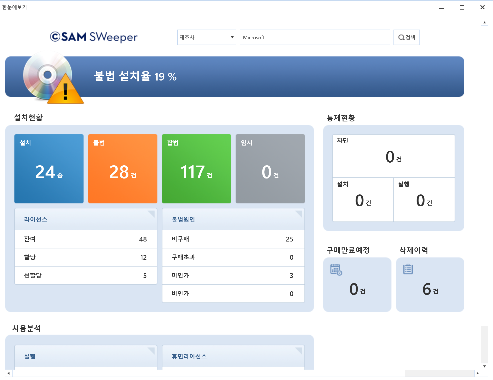
-
설치현황
-
현황
-
설치 : 해당 제조사의 소프트웨어의 종류를 확인합니다.
- 불법 : 해당 제조사를 기준으로 불법 소프트웨어 건수를 확인합니다.
- 합법 : 해당 제조사를 기준으로 합법 소프트웨어 건수를 확인합니다.
-
임시 : 해당 제조사의 소프트웨어에 임시 라이선스를 부여한 건수를 확인합니다.
-
라이선스
-
잔여 : 구매한 소프트웨어를 장비/사용자에 할당하고, 남은 수량을 확인합니다.
- 할당 : 구매한 소프트웨어를 장비/사용자에 할당한 사항을 확인합니다.
-
선할당 : 장비에 해당 소프트웨어를 설치하지 않았지만, 라이선스를 미리 할당한 사항을 확인합니다.
-
불법원인
-
비구매 : 구매하지 않았음을 의미합니다.
- 구매초과 : 구매한 소프트웨어보다 더 많이 설치되었음을 의미합니다.
- 미인가 : 할당할수 있는 라이선스를 보유한 상태지만, 관리자의 승인없이 불법 설치하였음을 의미합니다.
-
비인가 : 회사에서는 사용할 수 없는 소프트웨어로 분류되어졌음을 의미합니다.
-
사용분석
-
실행
-
합법사용 : 합법적으로 설치된 소프트웨어의 실행시간이 표시됩니다.
-
라이선스를 할당했지만, 효율적으로 사용하지 않는 사용자를 확인할 수 있습니다.
-
불법사용 : 불법적으로 설치된 소프트웨어의 실행시간이 표시됩니다.
-
불법 사용자의 이용실태를 확인할 수 있습니다.
-
휴면라이선스
-
합법 : 합법으로 설치되었다가 휴면관리 대상에 지정된 소프트웨어의 실행시간이 표시됩니다.
-
불법 : 불법으로 설치되었다가 휴면관리 대상에 지정된 소프트웨어의 실행시간이 표시됩니다.
-
통제현황
-
차단 : 프로그램 실행중 차단된 건수가 표시됩니다.
- 설치 : 설치된 프로그램의 건수가 표시됩니다.
-
실행 : 샐행된 프로그램의 건수가 표시됩니다.
-
구매만료예정
-
구매 만료일(30일전)이 다가오는 소프트웨어의 건수가 표시됩니다.
-
삭제이력
-
소프트웨어가 삭제된 건수가 표시됩니다.
참고사항
- 표시된 모든 수치를 선택(클릭)하면 해당 내용을 자세히 확인할 수 있습니다.
- 통제현황(차단/설치/실행), 삭제이력, 사용분석(실행)의 조회기간은 기본 일주일이며 관리자가 설정할 수도 있습니다. (2-1-4. 소프트웨어)
© Copyright SWeeper Inc.. All Rights Reserved
9-1-4. 퀵뷰
Source: https://www.sweeper.or.kr/etc/manual/9-1-4.html
9-1-4. 퀵뷰


장비 및 소프트웨어에 관한 간략한 핵심정보를 제공합니다.

장비
선택된 분류에 해당되는 장비를 확인 할 수 있습니다.

- 전체: 전체 장비를 확인 할 수 있습니다.
- 온라인: 현재 상태가 "온라인" 인 장비를 확인 할 수 있습니다.
- 오프라인: 현재 상태가 "오프라인"인 장비를 확인 할 수 있습니다.
- 장기미사용: 현재 상태가 "장기미사용"인 장비를 확인 할 수 있습니다.
- Windows: 전체 장비중 Windows OS를 사용하는 장비를 확인 할 수 있습니다.
- Mac: 전채 장비 중 Mac OS를 사용하는 장비를 확인 할 수 있습니다.
- 데스크탑: 전체 장비 중 데스크탑인 장비를 확인 할 수 있습니다.
- 노트북 : 전체 장비 중 노트북인 장비를 확인 할 수 있습니다.
소프트웨어
선택된 분류에 해당되는 소프트웨어를 확인 할 수 있습니다.
-
리스트 기준
-
전체 :설치 프로그램 리스트에 있는 소프트웨어 목록을 확인 할 수 있습니다.
- 유료: 설치 프로그램 리스트 중 유료 소프트웨어 목록을 확인 할 수 있습니다.
-
무료: 설치 프로그램 리스트 중 무료 소프트웨어 목록을 확인 할 수 있습니다.
-
설치기준
-
전체: 사용자가 설치한 전체 프로그램을 확인 할 수 있습니다.
- 유료: 사용자가 설치한 유료 프로그램을 확인 할 수 있습니다.
- 무료: 사용자가 설치한 무료 프로그램을 확인 할 수 있습니다.
© Copyright SWeeper Inc.. All Rights Reserved
10. 기타
Source: https://www.sweeper.or.kr/etc/manual/10.html
10. 기타


MENU | 기타
SWeeper
명령전송의 다양한 설명을 비롯하여, 단축키등 기타 정보에 대해 설명합니다.
| THE SOFTWARE MANAGEMENT |
© Copyright SWeeper Inc.. All Rights Reserved
10-1. 단축키
Source: https://www.sweeper.or.kr/etc/manual/10-1.html
10-1. 단축키
10. 기타 ››


-
F1. 도움말을 실행합니다.
-
F4. 화면별로 중요 속성에 해당하는 속성창을 팝업합니다.
-
F5. 새로고침을 실행(리본 공통기능이 활성화되어 있는 경우에 한정) 합니다.
-
F6. GridView의 선택모드를 행으로 변경합니다.
-
F7. GridView의 선택모드를 셀로 변경합니다.
* 한번 더 클릭할 경우 복수 선택 가능합니다.
- F8. 검색센터를 실행합니다.
© Copyright SWeeper Inc.. All Rights Reserved
10-2. 그리드
Source: https://www.sweeper.or.kr/etc/manual/10-2.html
10-2. 그리드
10. 기타 ››


-
화면을 종료 하기 전에 설정 되어있는 컬럼 정보를 자동으로 저장하여 다음에 해당 화면을 열게 되면 같은 구성으로 생성됩니다. (순서, 숨김, 그룹, 필터, 정렬)
-
수정 기능이 있는 경우 행을 선택한 후 더블 클릭하면 수정 화면이 팝업됩니다.
© Copyright SWeeper Inc.. All Rights Reserved
10-2-1. 필터
Source: https://www.sweeper.or.kr/etc/manual/10-2-1.html
10-2-1. 필터


-
각 컬럼마다 필터 아이콘을 클릭하여 필터를 설정할 수 있습니다.
-

-
하단을 클릭하면 필터 설정을 확인할 수 있으며, 'X' 아이콘 클릭시 모든 컬럼의 필터를 해제합니다.
-

-
일부 컬럼의 필터를 해제하려면 필터 아이콘으로 해제합니다.
© Copyright SWeeper Inc.. All Rights Reserved
10-3. 엑셀 업로드
Source: https://www.sweeper.or.kr/etc/manual/10-3.html
10-3. 엑셀 업로드
10. 기타 ››


엑셀 파일을 이용하여 데이터를 일괄 업데이트를 할 수 있습니다.
- [4-1-1. 설치현황]
- [5-1-1-1. 소프트웨어 라이선스 구매 등록]
- [7-2-1. 실사목록]
- [7-1-1. 구매목록]
- [7-1-2. 자산목록]
- [8-2-1. 부서관리]
- [8-2-5. 사용자관리]
업데이트에 필요한 엑셀 파일은 '엑셀 내보내기' 기능을 이용하면 받을 수 있습니다.

- Excel 97 - 2003 통합문서(*.xls) : 메크로는 지원하지 않습니다.

- Excel 2007 통합문서(*.xlsx) : 메크로는 지원하지 않습니다.

- 엑셀 업로드


참고사항
엑셀 업로드 처리 결과를 복사가 가능합니다.
복사 기능을 활용하여, 업로드 처리결과를 관리 할 수 있습니다.
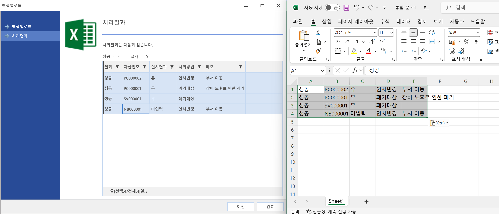
주의사항
내려받은 엑셀샘플 양식의 서식이 변경되면, 업로드시 문제가 될 수 있습니다.
다른 파일에서 Copy & Paste 시, 의도치 않게 서식이 변경되어 오류가 발생됨을 주의하시기 바랍니다.
(대표적인 예)
구매일과 만료일 입력시, 구매일 (텍스트)을 날자로 변경되었을 경우, 실제 데이터 오류의 예
- 셀서식을 임의로 날짜로 변경
- 업로드시 데이터 오류
© Copyright SWeeper Inc.. All Rights Reserved
10-4. 명령전송
Source: https://www.sweeper.or.kr/etc/manual/10-4.html
10-4. 명령전송
10. 기타 ››


에이전트의 장비 컨트롤을 위한 명령을 만들수 있으며, 다양한 기능을 설정하여 전송할 수 있습니다.
전달된 명령처리결과는 [명령센터]에서 확인 가능합니다.
설정방법
- 명령전송 대상장비를 선택한 뒤 마우스 우클릭 합니다.
-
메뉴가 나타나면 명령전송을 클릭합니다.
-
명령전송이 팝업되면 선택된 대상을 확인할수 있습니다.
-
대상을 추가하려면 추가버튼을 클릭합니다.
-
그룹으로도 명령을 보낼 수 있습니다.
-
대상 장비 확인이 완료되면 다음 버튼을 클릭합니다.
-
좌측메뉴에서 보내고자 하는 명령을 선택합니다.
-
명령상세설정 모두 완료한 뒤 다음 버튼을 클릭합니다.
- 명령전송시간 설정화면이 나타납니다. 명령전송시간이 마지막으로 설정이 끝나면 완료버튼을 클릭하면 명령이 전송됩니다.

- 즉시수행 : 명령완료 후 즉시 전송됩니다.
- 예약전송 : 설정된 시간부터 명령 전송이 진행됩니다.
- 반복전송 : 명령센터에서 설정가능하며 [반복명령]을 확인하여 주시기 바랍니다.
-
분산전송시간 : 대량 명령 전송 시 부하분산을 하기 위한 설정입니다.
-
설정된 시간을 10분 단위로하여 장비로 나누어 전송합니다.
- 전송분산식 : 100대를 1시간 설정으로 전송할 경우 100/6 = 16.66...약 17대를 10분 단위로 6회 전송합니다.
-
주의사항 : 수량이 적은 경우 오히려 전송처리가 늦을 수 있으며, Network 효율이 낮은 경우 사용하도록 합니다.
-
분산유효시간 : 오프라인 등 명령을 받지 못한 장비들을 위한 명령유지 시간 설정입니다.
-
명령 전송 후 설정된 시간만큼 유지하며 시간내 오프라인 장비가 온라인으로 되지 않은 경우 명령을 전송받을 수 없습니다.
-
반드시 전송해야 하는 중요한 명령의 경우 유효시간을 길게 설정하는 것이 좋습니다.
-
명령처리에 대한 결과는 [명령센터]에서 확인합니다.
© Copyright SWeeper Inc.. All Rights Reserved
10-4-1. 일반명령
Source: https://www.sweeper.or.kr/etc/manual/10-4-1.html
10-4-1. 일반명령
10. 기타 ›› 10-4. 명령전송 ››


지정된 특정 장비에 메시지를 팝업하거나, 레지스트리 등의 시스템 정보를 변경할 수 있는 명령을 보낼 수 있습니다.
© Copyright SWeeper Inc.. All Rights Reserved
10-4-1-1. 메시지 전송
Source: https://www.sweeper.or.kr/etc/manual/10-4-1-1.html
10-4-1-1. 메시지 전송
10. 기타 ›› 10-4. 명령전송 ›› 10-4-1. 일반명령 ››


사용자에게 특정한 내용의 알림을 전달하기 위해서 사용하는 명령으로 사용자 화면에 배너 또는 창(웹)형태로 표시됩니다.
설정방법
- 최초 명령 메뉴 선택에 대한 부분은 상위 목차인 [명령전송]을 확인하여 주시기 바랍니다.
-
본 설명에서는 각 명령에 대한 설정방법만을 설명합니다.
-
메시지 전송을 선택합니다.
-
메시지에 표시할 제목을 입력합니다.
- 내용에는 메시지 상세 내용을 편집툴을 통해 입력합니다.
-
옵션
-
종류
-
웹페이지 : 웹형태의 메시지로 사용자 화면에 팝업됩니다.
-
배너 : 배너 형태의 흐르는 메세지로 사용자 화면에 팝업됩니다.
-
사용자 종료 허용 유무 : 사용자가 종료할 수 있도록 설정할 수 있습니다.
-
사용자 종료 허용유무를 설정하지 않을 경우 표시시간이 만료되면 자동 종료됩니다.
-
표시시간 : 팝업된 메시지 유지시간을 설정합니다. 유지시간 이후 메시지는 자동 종료됩니다.
-
설정이 완료되면 다음 버튼을 클릭합니다.
- 이후 설정내용은 [명령전송]을 확인하여 주시기 바랍니다.
참고사항
-
사진 첨부시, 용량이 큰 이미지 파일(5MB이하)은 IE 9 이상의 브라우저(윈도우 비스타 이상)에서만 정상적으로 동작합니다.
-
윈도우 XP는 사진이 첨부될 경우 이미지가 부분 출력되거나, 이미지가 큰 경우 메시지 창이 나타나지 않을 수 있습니다.
-
기존의 발신 메시지를 확인하려면, 명령상세정보의 "메시지 보기" 버튼으로 확인합니다.
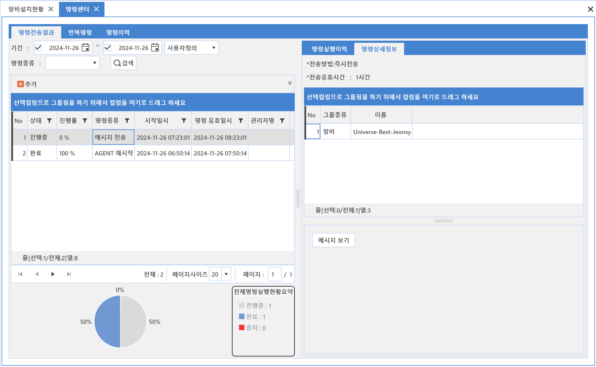
© Copyright SWeeper Inc.. All Rights Reserved
10-4-1-2. 레지스트리 제어
Source: https://www.sweeper.or.kr/etc/manual/10-4-1-2.html
10-4-1-2. 레지스트리 제어
10. 기타 ›› 10-4. 명령전송 ›› 10-4-1. 일반명령 ››


장비의 특정 레지스트리 정보를 추가/변경/삭제 할 수 있는 명령입니다. 레지스트리 변경은 장비 장애를 유발시킬 수 있으므로 충분히 확인 후 사용하시기 바랍니다.
설정방법
최초 명령 메뉴 선택에 대한 부분은 상위 목차인 [명령전송]을 확인하여 주시기 바랍니다.
-
레지스트리 제어를 선택합니다.
-
레지스트리 제어에 필요한 설정을 합니다.
-
제어구분
-
검색 : 정보 존재여부만 확인합니다.
-
명령전송결과 "완료" : 해당 레지스트리 정보가 존재합니다.
-
명령전송결과 "실패" : 해당 레지스트리 정보가 존재하지 않습니다.
-
추가/수정 : 레지스트리 내용을 추가하거나 변경할 수 있습니다.
-
추가/수정은 정보를 변경할 수 있도록 데이터형식과 값데이터를 설정할 수 있습니다.
-
삭제 : 레지스트리 정보를 삭제할 수 있습니다.
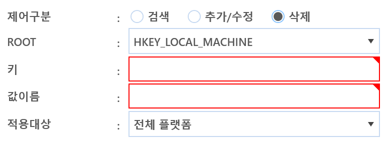 -
ROOT : 레지스트리 항목 중 ROOT에 해당하는 목록을 표시하며 변경이 필요한 목록을 선택합니다.
- 키 : 레지스트리 키를 입력합니다.
- 값 이름 : 키에 해당하는 값을 입력합니다.
- 적용 대상 : Windows 32 Bit 또는 64 Bit 중 대상에 맞도록 선택합니다.
- 데이터 형식 : 값 이름의 데이터 형식을 선택합니다.
-
값 데이터 : 값 이름의 데이터 정보를 입력합니다.
-
설정이 완료되면 다음버튼을 클릭합니다.
-
이후 설정내용은 [명령전송]을 확인하여 주시기 바랍니다.
주의사항
Windows 레지스트리 정보는 잘못 변경할 경우 시스템 장애를 발생시킬 수 있으므로 충분히 내용 확인 후 사용하시기 바랍니다.
참고사항
Windows에서 레지스트 편집기를 이용한 편집 방법을 참고합니다.
레지스트리 편집기는 Windows 명령프롬프트 또는 실행에서 "regedit"를 입력하시면 레지스트리 편집기가 실행됩니다.
SWeeper의 레지스트리 제어는 손쉽게 원격지 PC의 레지스트리 정보를 검색하고 추가/수정/삭제 할 수 있습니다.
-
키 생성
-
값 생성
-
값 데이터 입력
참고사항
Mac Agent 는 해당 명령을 지원하지 않습니다.
© Copyright SWeeper Inc.. All Rights Reserved
10-4-1-3. 서비스 제어
Source: https://www.sweeper.or.kr/etc/manual/10-4-1-3.html
10-4-1-3. 서비스 제어
10. 기타 ›› 10-4. 명령전송 ›› 10-4-1. 일반명령 ››


장비의 [관리도구]-[서비스] 정보를 검색하여 확인할 수 있으며, 시작/중지/재시작 등 컨트롤 할 수 있는 명령입니다.
설정방법
최초 명령 메뉴 선택에 대한 부분은 상위 목차인 [명령전송]을 확인하여 주시기 바랍니다.
-
서비스 제어를 선택합니다.

-
서비스 제어에 필요한 설정을 합니다.
제어구분
-
검색 : 정보 존재 여부만 확인합니다.

-
명령전송결과 "완료" : 해당 서비스 정보가 존재합니다.
-
명령전송결과 "실패" : 해당 서비스 정보가 존재하지 않습니다.
-
서비스명 : 컨트롤 대상 서비스명을 입력합니다.
-
Windows 서비스명 확인방법
-
[제어판] - [관리도구] - [서비스]를 선택합니다.
-
해당 서비스를 선택하고 마우스 우클릭하여 속성을 클릭합니다.
-
속성창이 팝업되면 서비스 이름을 확인합니다.
-
설정이 완료되면 다음버튼을 클릭합니다.
-
이후 설정내용은 [명령전송]을 확인하여 주시기 바랍니다.
참고사항
Mac Agent 는 해당 명령을 지원하지 않습니다.
© Copyright SWeeper Inc.. All Rights Reserved
10-4-1-4. URL 전송
Source: https://www.sweeper.or.kr/etc/manual/10-4-1-4URL.html
10-4-1-4. URL 전송
10. 기타 ›› 10-4. 명령전송 ›› 10-4-1. 일반명령 ››


특정 장비를 대상으로 설정한 URL을 Explorer를 실행하여 사용자 PC화면에 팝업시킬 수 있습니다.
설정방법
최초 명령 메뉴 선택에 대한 부분은 상위 목차인 [명령전송]을 확인하여 주시기 바랍니다.
-
URL 전송을 선택합니다.
-
URL 설정 정보를 입력합니다.
-
설정이 완료되면 다음버튼을 클릭합니다.
-
이후 설정내용은 [명령전송]을 확인하여 주시기 바랍니다.
참고사항
다른 사람이 해당 PC에 원격데스크톱으로 연결한 경우, URL 기능이 되지 않습니다
© Copyright SWeeper Inc.. All Rights Reserved
10-4-1-5. 사용자 정보요청
Source: https://www.sweeper.or.kr/etc/manual/10-4-1-5.html
10-4-1-5. 사용자 정보요청
10. 기타 ›› 10-4. 명령전송 ›› 10-4-1. 일반명령 ››


장비에서 사용자 정보를 입력할 수 있도록, 관리자가 명령으로 사용자 PC에 사용자 정보입력창을 팝업시키는 명령입니다.
설정방법
최초 명령 메뉴 선택에 대한 부분은 상위 목차인 [명령전송]을 확인하여 주시기 바랍니다.
-
사용자 정보 요청을 선택합니다.
-
별도 설정이 없으므로 다음 버튼을 클릭합니다.
- 이후 설정내용은 [명령전송]을 확인하여 주시기 바랍니다.
참고사항
명령 이후 사용자 UI에서 처리되는 내용은 11.3.1.1. 기본정보에서 설명합니다.
재직상태가 "퇴직"인 사용자로 매핑시, 아래와 같이 팝업됩니다.

© Copyright SWeeper Inc.. All Rights Reserved
10-4-2. 컴퓨터 제어
Source: https://www.sweeper.or.kr/etc/manual/10-4-2.html
10-4-2. 컴퓨터 제어
10. 기타 ›› 10-4. 명령전송 ››


PC 전원을 원격으로 컨트롤하기 위한 명령입니다.
© Copyright SWeeper Inc.. All Rights Reserved
10-4-2-1. 컴퓨터 재시작/종료
Source: https://www.sweeper.or.kr/etc/manual/10-4-2-1.html
10-4-2-1. 컴퓨터 재시작/종료
10. 기타 ›› 10-4. 명령전송 ›› 10-4-2. 컴퓨터 제어 ››


PC 전원을 재시작 또는 종료할 수 있는 명령입니다.
설정방법
최초 명령 메뉴 선택에 대한 부분은 상위 목차인 [명령전송]을 확인하여 주시기 바랍니다.
-
컴퓨터 재시작/종료를 선택합니다.

-
컴퓨터 재시작/종료를 위한 설정을 합니다.
-
제어구분 : 컨트롤 방법을 선택합니다.
-
안내메시지 표시 :재시작/종료 전 사용자 PC 안내창 팝업 여부를 설정합니다.
-

-
대기시간(초) : 안내메시지 표시 체크시에만 설정할 수 있습니다.
-
0일 때는 사용자 선택을 대기하고, 그 외에는 지정된 시간에 강제종료(재시작) 합니다.
-
설정이 완료되면 다음버튼을 클릭합니다.
-
이후 설정내용은 [명령전송]을 확인하여 주시기 바랍니다.
주의사항
종료 시 사용자가 작업을 위해 실행한 프로그램도 함께 강제 종료되므로 이 부분에 대한 사용자 컴플레인 이슈가 발생하지 않도록 충분한 사전 공지 후 사용하는 것을 권장합니다.
© Copyright SWeeper Inc.. All Rights Reserved
10-4-2-2. 주변 컴퓨터 켜기
Source: https://www.sweeper.or.kr/etc/manual/10-4-2-2.html
10-4-2-2. 주변 컴퓨터 켜기
10. 기타 ›› 10-4. 명령전송 ›› 10-4-2. 컴퓨터 제어 ››


전원이 오프된 장비를 원격에서 켜기위한 기능으로 WOL(Wake On LAN) 기능을 활용한 명령입니다.
주의사항
- 메인보드 또는 NIC에서 WOL 기능을 지원하고 활성화 시켜야 사용할 수 있는 기능입니다.
- 켜져 있는 장비를 통해 꺼져 있는 장비의 전원을 켜기 때문에 반드시 해당 Network에 에이전트가 설치된 켜져 있는 장비가 필요합니다.
- Network 환경으로 인해 WOL 패킷이 손실되어 일부 켜지는 기능이 제한적으로 동작될 수 있습니다.
- 하드웨어 제조사의 장치적 오류로 인해 WOL 기능이 정상적으로 동작하지 않을 수 있습니다.
- 선택한 장비의 서브넷(C Class)을 기준으로 대상 장비를 선택합니다.
- 에이전트가 설치된 장비를 기준으로 꺼져있는 장비를 표시하며, 에이전트가 설치되지 않은 장비는 검색되지 않습니다.
설정방법
최초 명령 메뉴 선택에 대한 부분은 상위 목차인 [명령전송]을 확인하여 주시기 바랍니다.
-
주변 컴퓨터 켜기를 선택합니다.
-
선택한 장비를 제외한 오프라인 장비만 조회됩니다.
-
전원을 켜기위한 대상 장비를 선택합니다.
- 설정이 완료되면 다음 버튼을 클릭합니다.
- 이후 설정내용은 [명령전송]을 확인하여 주시기 바랍니다.
© Copyright SWeeper Inc.. All Rights Reserved
10-4-3. 자산정보
Source: https://www.sweeper.or.kr/etc/manual/10-4-3.html
10-4-3. 자산정보
10. 기타 ›› 10-4. 명령전송 ››


자산정보(HW 장치, 소프트웨어 설치, SDC 정보 등) 수집을 위한 명령입니다.
설정방법
단순한 정보 수집명령이므로 특별한 설정 없이 명령 전송하면 됩니다.
-
자산정보 메뉴 중 필요한 정보 수집이 필요한 명령을 선택합니다.
-
하드웨어 검색 : PC의 하드웨어 장치정보를 검색합니다.
-
에이전트 최초 설치 시 HW 작동기능이 설정되었다면 자동으로 검색됩니다.
-
SW 검색 : SWDB를 기준으로 한 설치 정보를 검색하여 결과를 서버에 전송합니다.
- 제어판 검색 : 제어판의 프로그램 설치 정보를 검색하여 결과를 서버에 전송합니다.
- +DB 기반 검색 : +DB를 기준으로 한 설치 정보를 검색하여, 결과를 서버에 전송합니다.
- 라이선스 적용 : 할당하거나 설정된 라이선스 정보를 적용합니다.
-
폰트 검색 : 폰트 설치 정보를 검색하여 결과를 서버에 전송합니다.
-
명령 선택 후 다음버튼을 클릭합니다.
-
이후 설정내용은 [명령전송]을 확인하여 주시기 바랍니다.
© Copyright SWeeper Inc.. All Rights Reserved
10-4-3-1. 인스펙터 결과보고
Source: https://www.sweeper.or.kr/etc/manual/10-4-3-1.html
10-4-3-1. 인스펙터 결과보고
10. 기타 ›› 10-4. 명령전송 ›› 10-4-3. 자산정보 ››


한국저작권 위원회에서 무료 배포하는 인스펙터에 의한 점검결과를 서버에 취합하기 위한 명령입니다.
설정방법
-
인스펙터 실행에 대한 사전 설정
-
[홈-환경설정-일반]의 인스펙터 탭에서 원하는 검색 옵션을 선택합니다.
-
작동기능에서 인스펙터 연동을 설정합니다.
-

명령방법
- 명령센터에서 "추가" 버튼을 눌러 명령을 보낼 장비 선택
- "인스펙터 결과보고"를 선택하고 수집 폴더 지정

- 명령 수행
참고사항
-
서버별 수집되는 경로
-
윈도우 서버 : C:\Program Files\SWeeper\DataServer\ReportFile\Inspector\수집폴더명(ex 202011)
-
리눅스 서버 : /netrix/ReportFile/DataServer/Inspector/수집폴더명(ex 202011)
-
사용자 UI 화면
-
지정한 옵션에 따라 점검이 시작됩니다.
-
인스펙터 실행 옵션이나 개별 실행에 대한 설명은 "한국저작권위원회" 홈페이지를 참고하시기 바랍니다.
-
http://www.copy112.or.kr/
-
Mac Agent 는 해당 명령을 지원하지 않습니다.
© Copyright SWeeper Inc.. All Rights Reserved
10-4-4. 장비 설정 변경
Source: https://www.sweeper.or.kr/etc/manual/10-4-4.html
10-4-4. 장비 설정 변경
10. 기타 ›› 10-4. 명령전송 ››


에이전트의 설정을 변경하기 위한 명령입니다.
© Copyright SWeeper Inc.. All Rights Reserved
10-4-4-1. 작동기능 재설정
Source: https://www.sweeper.or.kr/etc/manual/10-4-4-1.html
10-4-4-1. 작동기능 재설정
10. 기타 ›› 10-4. 명령전송 ›› 10-4-4. 장비 설정 변경 ››


작동기능 설정이 변경되었을 경우 에이전트에 적용하기 위한 명령입니다.
에이전트 재시작은 되지 않으며, 변경된 작동기능에 대한 초기 검색 및 정책이 적용됩니다.
설정방법
단순한 정책 변경 명령이므로 특별한 설정 없이 명령 전송하면 됩니다.
© Copyright SWeeper Inc.. All Rights Reserved
10-4-4-2. AGENT 재시작
Source: https://www.sweeper.or.kr/etc/manual/10-4-4-2AGENT.html
10-4-4-2. AGENT 재시작
10. 기타 ›› 10-4. 명령전송 ›› 10-4-4. 장비 설정 변경 ››


에이전트를 재시작 시키는 명령으로 작동기능과 정책 정보를 재검색하여 반영하며 HW 검색, SW 검색이 동작됩니다.
-
설정방법
-
에이전트 재시작을 위한 명령이므로 특별한 설정 없이 명령 전송하면 됩니다.
© Copyright SWeeper Inc.. All Rights Reserved
10-4-4-3. AGENT 서버 변경
Source: https://www.sweeper.or.kr/etc/manual/10-4-4-3AGENT.html
10-4-4-3. AGENT 서버 변경
10. 기타 ›› 10-4. 명령전송 ›› 10-4-4. 장비 설정 변경 ››


서버가 추가되어 에이전트 분산을 시키거나 서버 IP Address가 변경된 경우 에이전트의 접속 서버정보를 변경하기 위한 명령입니다.
🛈 주의사항
- 서버 변경은 환경설정과 명령전달에 있어서 주의를 요하므로 반드시 담당 엔지니어와 함께 협의 후 진행하시기 바랍니다.
설정방법
최초 명령 메뉴 선택에 대한 부분은 상위 목차인 [명령전송]을 확인하여 주시기 바랍니다.
-
AGENT 서버 변경을 선택합니다.
-
추가된 서버 또는 변경된 서버를 선택합니다.
- 설정이 완료되면 다음 버튼을 클릭합니다.
- 이후 설정내용은 [명령전송]을 확인하여 주시기 바랍니다.
© Copyright SWeeper Inc.. All Rights Reserved
10-4-4-4. AGENT 제거
Source: https://www.sweeper.or.kr/etc/manual/10-4-4-4AGENT.html
10-4-4-4. AGENT 제거
10. 기타 ›› 10-4. 명령전송 ›› 10-4-4. 장비 설정 변경 ››


설치된 에이전트를 원격에서 삭제하는 명령입니다.
에이전트 [제거신청]없이 관리자가 강제 삭제할 수 있는 명령입니다.
설정방법
에이전트 삭제 명령이므로 특별한 설정 없이 명령 전송하면 됩니다.
© Copyright SWeeper Inc.. All Rights Reserved
10-4-4-5. 컴퓨터명 / 워크그룹 변경
Source: https://www.sweeper.or.kr/etc/manual/10-4-4-5.html
10-4-4-5. 컴퓨터명 / 워크그룹 변경
10. 기타 ›› 10-4. 명령전송 ›› 10-4-4. 장비 설정 변경 ››


Windows 시스템 정보인 컴퓨터명과 워크그룹명을 변경할 수 있는 명령입니다. 복수 수량의 장비를 일괄적으로 변경할 수 있습니다.
주의사항
컴퓨터명과 워크그룹 Windows 시스템 정보이기 때문에 반드시 PC가 재부팅되어야만 정보변경이 완료됩니다.
설정방법
최초 명령 메뉴 선택에 대한 부분은 상위 목차인 [명령전송]을 확인하여 주시기 바랍니다.
-
컴퓨터명 / 워크그룹 변경을 선택합니다.
-
복수 장비 선택이 가능하지만 명령에서 장비 추가를 할 수 없습니다.
-
대상 장비 선택 후 마우스 우클릭하여 변경정보 수정 메뉴를 선택합니다.
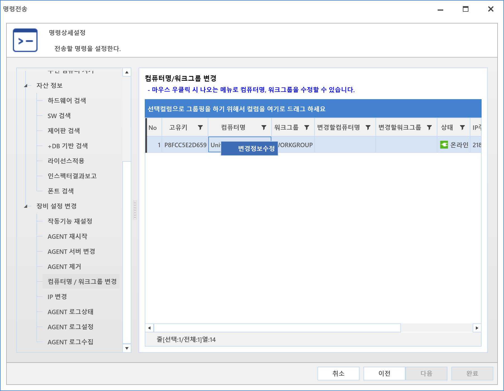 -
변경정보 수정 화면이 팝업되면 변경할 컴퓨터명과 워크그룹명 정보를 입력합니다.
-
변경할 컴퓨터명과 워크그룹명을 입력하지 않으면 변경하지 않습니다.
-
설정이 완료되면 다음 버튼을 클릭합니다.
- 이후 설정내용은 [명령전송]을 확인하여 주시기 바랍니다.
© Copyright SWeeper Inc.. All Rights Reserved
10-4-4-6. IP 변경
Source: https://www.sweeper.or.kr/etc/manual/10-4-4-6IP.html
10-4-4-6. IP 변경
10. 기타 ›› 10-4. 명령전송 ›› 10-4-4. 장비 설정 변경 ››


장비의 IP Address 정보를 변경할 수 있는 명령입니다.
주의사항
- 서브넷과 게이트웨어 정보를 변경할 수 없으므로 동일 Network Class 내에서만 변경해야 합니다.
- 복수 설정이 불가능하며 한번에 한대의 장비만 변경 가능합니다.
- 변경 명령을 전송했으나 서버와 통신이 불가능할 경우 이전 IP정보로 복원됩니다.
설정방법
최초 명령 메뉴 선택에 대한 부분은 상위 목차인 [명령전송]을 확인하여 주시기 바랍니다.
-
IP 변경을 선택합니다.
-
기존 IP와 바꿀 IP 정보를 입력합니다.
- 설정이 완료되면 다음 버튼을 클릭합니다.
- 이후 설정내용은 [명령전송]을 확인하여 주시기 바랍니다.
© Copyright SWeeper Inc.. All Rights Reserved
10-4-4-7. AGENT 로그상태
Source: https://www.sweeper.or.kr/etc/manual/10-4-4-7AGENT.html
10-4-4-7. AGENT 로그상태
10. 기타 ›› 10-4. 명령전송 ›› 10-4-4. 장비 설정 변경 ››


장비의 로그 설정 상태를 확인할 수 있는 명령입니다.
설정방법
최초 명령 메뉴 선택에 대한 부분은 상위 목차인 [명령전송]을 확인하여 주시기 바랍니다.
- Agent 로그 상태를 선택합니다.
- 별도 설정이 없으므로 다음 버튼을 클릭합니다.
- 명령 처리 상태가 완료가 되면 [명령결과] 탭에서 장비를 선택하여 명령 설정 상태를 확인합니다.
참고사항
Mac Agent 는 해당 명령을 지원하지 않습니다.
© Copyright SWeeper Inc.. All Rights Reserved
10-4-4-9. AGENT 로그수집
Source: https://www.sweeper.or.kr/etc/manual/10-4-4-9AGENT.html
10-4-4-9. AGENT 로그수집
10. 기타 ›› 10-4. 명령전송 ›› 10-4-4. 장비 설정 변경 ››


장비의 로그 수집을 할 수 있는 명령입니다.
설정방법
최초 명령 메뉴 선택에 대한 부분은 상위 목차인 [명령전송]을 확인하여 주시기 바랍니다.
- Agent 로그 수집을 선택합니다.
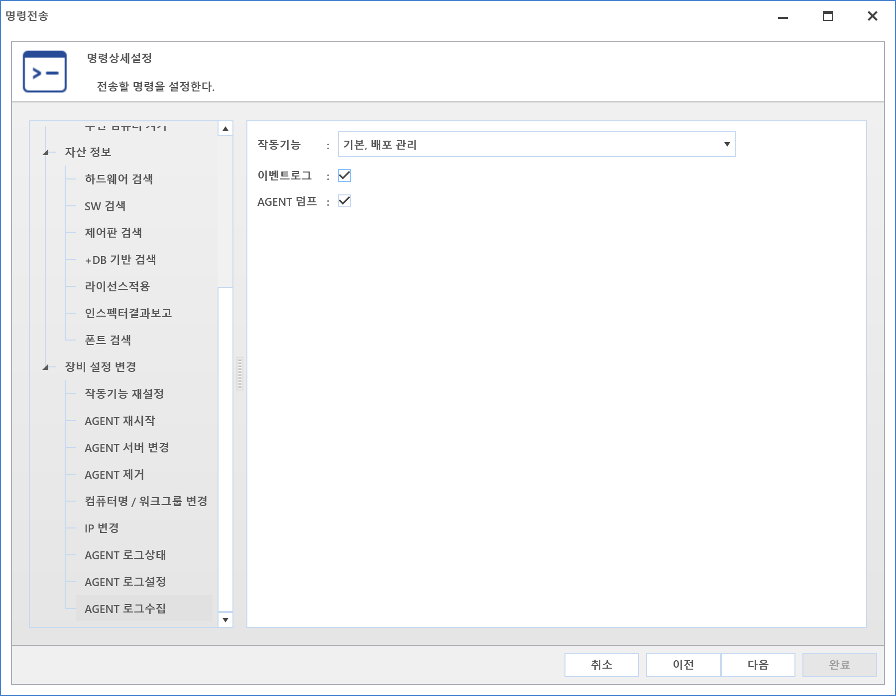
-
로그 설정에 필요한 설정을 합니다.
-
작동기능 : 어떤 작동기능 로그를 수집할지 설정합니다.
- 이벤트로그 : 이벤트 뷰어 Windows로그에서 응용프로그램과 시스템 로그를 가져옵니다.
-
Agent 덤프: C:\Windows\SysWOW64 경로의 덤프파일을 가져옵니다.
-
설정이 완료되면 다음버튼을 클릭합니다.
- 명령 처리 상태가 완료가 되면 [명령결과] 탭에서 다운로드 버튼을 클릭합니다.
- 다운 받을 폴더를 선택합니다.
- 압축을 해제하고 로그 파일을 확인합니다.
© Copyright SWeeper Inc.. All Rights Reserved
10-4-4-8. AGENT 로그설정
Source: https://www.sweeper.or.kr/etc/manual/10-4-4-8AGENT.html
10-4-4-8. AGENT 로그설정
10. 기타 ›› 10-4. 명령전송 ›› 10-4-4. 장비 설정 변경 ›› 10-4-4-9. AGENT 로그수집 ››


장비의 로그 설정을 할 수 있는 명령입니다.
에이전트 모니터링이 필요할 때, 로그 레벨/유형/경로/파일사이즈/갯수 옵션을 설정하여 원하는대로 로그를 확인할 수 있습니다.
설정방법
최초 명령 메뉴 선택에 대한 부분은 상위 목차인 [명령전송]을 확인하여 주시기 바랍니다.
- Agent 로그 설정을 선택합니다.
-
로그 설정에 필요한 설정을 합니다.
-
작동기능 : 작동기능 별 로그 설정을 할 수 있습니다.
- 로그레벨 : 로그 수준을 설정합니다.
-
로그유형 : 파일 사이즈별 / 일자별 중 선택합니다.
-
파일 사이즈별 : '로그파일 사이즈'에 입력한 용량 이상이 되면 이전 내용은 저장하고 새 파일에 기록합니다.
-
일자별 : 하루 단위로 로그를 기록합니다. 파일 크기는 제한하지 않고 날짜가 변경되면 이전 내용은 저장하고 새 파일에 기록합니다.
-
로그파일 사이즈 : 로그파일 크기가 무제한 커지는 것을 방지하기 위해 최대 크기를 지정합니다.
- 로그파일 백업갯수 : 로그 파일 기록 파일 개수를 설정합니다.
- 로그파일 경로 : 로그 파일을 저장할 폴더를 설정합니다.
-
로그 초기화 일자 : 설정한 로그 세팅은 설정한 날짜부터 ~ 초기화일자 전날까지 적용되며 '로그 초기화 날짜' 이후에는 로그 기본설정으로 되돌아갑니다.
-
설정이 완료되면 다음버튼을 클릭합니다.
-
이후 설정내용은 [명령전송]을 확인하여 주시기 바랍니다.
참고사항
예시
- 작동기능 : 전체
- 로그 레벨 : INFO
- 로그 유형 : 파일 사이즈별
- 로그파일 사이즈 : 2,000,000 Byte
- 로그파일 백업 갯수 : 5
- 로그파일 경로 : D:\Test
- 로그 초기화 일자 : 2021-12-13
예시설명
- 전체 작동기능 로그가 D:\Test경로에 기록하며 각 기능로 로그 파일 크기가 2MB가 넘으면 새 파일에 기록합니다. 이전 로그는 총 5개의 파일까지 기록합니다.
- 이 설정은 2021-12-13일이 되면 모두 초기화 됩니다. 기본 로그 설정으로 재설정됩니다.
- 참고이미지
Mac Agent 는 해당 명령을 지원하지 않습니다.
© Copyright SWeeper Inc.. All Rights Reserved
10-5. 컬럼 우클릭
Source: https://www.sweeper.or.kr/etc/manual/10-5.html
10-5. 컬럼 우클릭
10. 기타 ››


컬럼명 우클릭을 통해 열 선택 및 정렬과 그룹핑을 할 수 있습니다.

© Copyright SWeeper Inc.. All Rights Reserved
10-5-1. 열선택
Source: https://www.sweeper.or.kr/etc/manual/10-5-1.html
10-5-1. 열선택
10. 기타 ›› 10-5. 컬럼 우클릭 ››


- 컬럼명 부분에서 우클릭 하면 화면에 특정 열을 보이게 하거나, 숨기게 할 수 있습니다.
© Copyright SWeeper Inc.. All Rights Reserved
10-5-2. 컬럼정렬
Source: https://www.sweeper.or.kr/etc/manual/10-5-2.html
10-5-2. 컬럼정렬
10. 기타 ›› 10-5. 컬럼 우클릭 ››


- 컬럼을 선택하여 우클릭하면 컬럼 기준으로 정렬할 수 있습니다.

- 정렬된 컬럼은 컬럼명이 파란색으로 표시됩니다.

© Copyright SWeeper Inc.. All Rights Reserved
10-5-3. 컬럼그룹핑
Source: https://www.sweeper.or.kr/etc/manual/10-5-3.html
10-5-3. 컬럼그룹핑
10. 기타 ›› 10-5. 컬럼 우클릭 ››


- 컬럼을 선택하여 우클릭 하면 컬럼 기준으로 그룹핑됩니다.
- 예를들어, 부서명 기준으로 그룹핑하면 부서별로 보여집니다.
© Copyright SWeeper Inc.. All Rights Reserved
10-5-4. 프린트
Source: https://www.sweeper.or.kr/etc/manual/10-5-4.html
10-5-4. 프린트
10. 기타 ›› 10-5. 컬럼 우클릭 ››


-
조회된 Data를 프린트하기 위한 기능으로 조회화면을 클릭한 뒤 프린트 메뉴를 클릭하면 화면 내용이 프린터를 통해 출력됩니다.
-
거의 모든 화면에서 우클릭 메뉴는 활성화 되며, 미지원 메뉴는 비활성화되어있습니다.
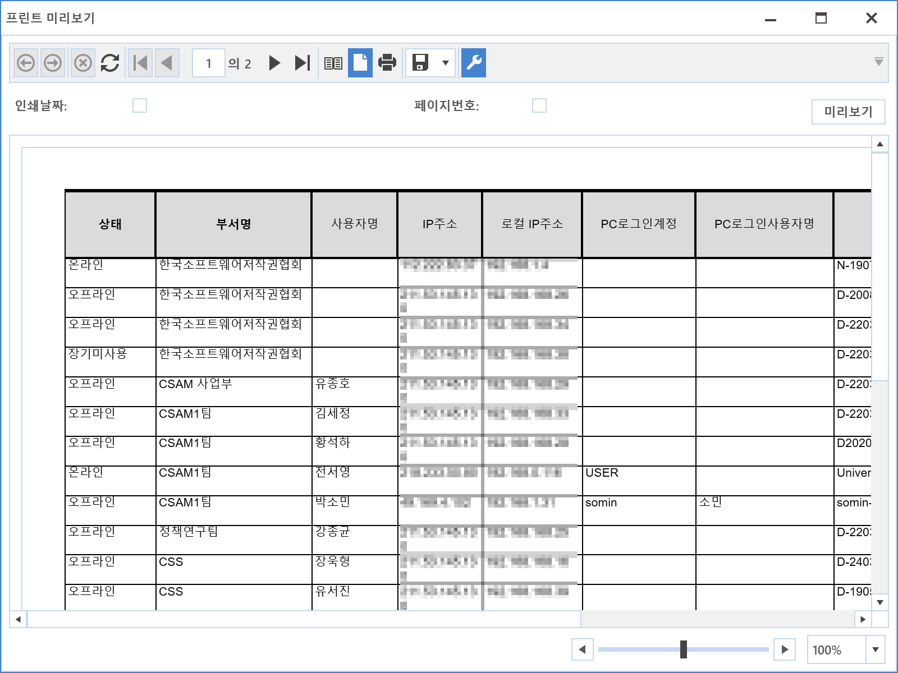
© Copyright SWeeper Inc.. All Rights Reserved
10-5-5. 내보내기
Source: https://www.sweeper.or.kr/etc/manual/10-5-5.html
10-5-5. 내보내기
10. 기타 ›› 10-5. 컬럼 우클릭 ››


-
조회된 Data를 Excel 파일로 저장하기 위한 기능으로 조회화면을 클릭한 뒤 내보내기 메뉴를 클릭하면 Excel 파일 포멧(*.xls)으로 저장할 수 있습니다.
-
거의 모든 화면에서 우클릭 메뉴는 활성화 되며, 미지원 메뉴는 비활성화되어있습니다.

© Copyright SWeeper Inc.. All Rights Reserved
10-6. 메뉴 우클릭
Source: https://www.sweeper.or.kr/etc/manual/10-6.html
10-6. 메뉴 우클릭
10. 기타 ››


메뉴 우클릭을 통해 빠른 실행도구 모음에 추가 및 도움말을 볼 수 있습니다.
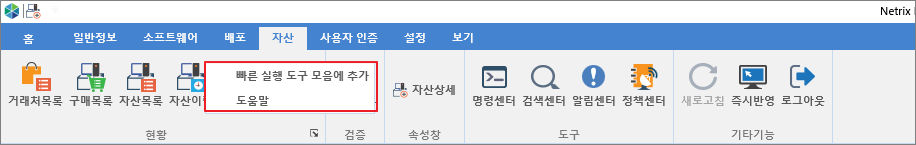
© Copyright SWeeper Inc.. All Rights Reserved
10-6-1. 빠른 실행 도구 모음에 추가
Source: https://www.sweeper.or.kr/etc/manual/10-6-1.html
10-6-1. 빠른 실행 도구 모음에 추가
10. 기타 ›› 10-6. 메뉴 우클릭 ››


-
메뉴 우클릭을 통해 빠른 실행 도구 모음에 해당 메뉴를 추가할 수 있습니다.
-
메뉴 목록에서 찾는 수고 없이 해당 메뉴로 쉽게 이동이 가능합니다.


© Copyright SWeeper Inc.. All Rights Reserved
10-6-2. 도움말
Source: https://www.sweeper.or.kr/etc/manual/10-6-2.html
10-6-2. 도움말
10. 기타 ›› 10-6. 메뉴 우클릭 ››


메뉴 위치에서 우클릭하면 해당 기능의 사용법을 확인할 수 있습니다.

© Copyright SWeeper Inc.. All Rights Reserved
11. CLIENT UI(AGENT)
Source: https://www.sweeper.or.kr/etc/manual/11CLIENTUIAGENT.html
11. CLIENT UI(AGENT)


CLIENT UI | AGENT
SWeeper
사용자, 네트워크, HW등의 정보를 제공하고, SW설치정보 확인을 통한 신청 프로세스를 이용하여 사용자가 SW 관리에 참여 가능하도록 개발되었습니다.
| THE SOFTWARE MANAGEMENT |
© Copyright SWeeper Inc.. All Rights Reserved
11-1. 개요
Source: https://www.sweeper.or.kr/etc/manual/11-1.html
11-1. 개요


자산관리를 위해 에이전트를 설치합니다.
© Copyright SWeeper Inc.. All Rights Reserved
11-1-1. 설치전 체크사항
Source: https://www.sweeper.or.kr/etc/manual/11-1-1.html
11-1-1. 설치전 체크사항
11. CLIENT UI(AGENT) ›› 11-1. 개요 ››


Windows 는 Windows 10 이상에서 동작하며, Mac 은 10.13(High Sierra) 이상에서 동작합니다.
© Copyright SWeeper Inc.. All Rights Reserved
11.2. Agent 설치 및 제거
Source: https://www.sweeper.or.kr/etc/manual/112Agent.html
11.2. Agent 설치 및 제거


Windows 및 Mac 에이전트에 대한 설치 방법에 대해 설명합니다.

© Copyright SWeeper Inc.. All Rights Reserved
11-2-1. Windows Agent 설치
Source: https://www.sweeper.or.kr/etc/manual/11-2-1WindowsAgent.html
11-2-1. Windows Agent 설치
11. CLIENT UI(AGENT) ›› 11.2. Agent 설치 및 제거 ››


설치
-
설치 언어 선택
-
설치 언어를 선택하고 다음 버튼을 누릅니다.
-
SWeeper Agent
-
명령서버의 IP정보를 입력하고 다음 버튼을 누릅니다.

-
설치할 위치 선택
-
Agent를 설치할 경로를 입력하고 다음 버튼을 누릅니다.
-
시작 메뉴 폴더 선택
-
시작메뉴에 생성할 폴더를 입력(선택)하고 다음 버튼을 누릅니다.
-
추가 사항 적용
-
빠른실행 아이콘, 제거아이콘 생성 여부를 체크하고 다음 버튼을 누릅니다.
-
설정 미체크시에는 시작메뉴에 아이콘이 생성되지 않습니다.
-
SWeeper Agent 설치 완료
-
설치 완료

© Copyright SWeeper Inc.. All Rights Reserved
11-2-1-1. Windows Agent 제거
Source: https://www.sweeper.or.kr/etc/manual/11-2-1-1WindowsAgent.html
11-2-1-1. Windows Agent 제거
11. CLIENT UI(AGENT) ›› 11.2. Agent 설치 및 제거 ›› 11-2-1. Windows Agent 설치 ››


에이전트 제거의 방법으로 사용자가 AGENT 제거를 신청하고 관리자가 승인하는 방법과 관리자가 명령을 통해 제거하는 방법 2가지를 제공합니다.
<사용자 요청에 의한 제거>
시작메뉴에서 "SWeeper Agent 제거"을 실행하거나, 에이전트 설치경로의 "nxrmagt.exe" 파일을 실행합니다.
-
삭제 요청
-
삭제키 우측의 요청버튼을 누릅니다.
- 에이전트 삭제요청은 관리자에 의해 승인/거절될 수 있습니다.
- 관리자가 정상적으로 승인하면, 사용자가 요청버튼을 다시 눌러 삭제키를 자동으로 가져올 수 있습니다.
- 승인되지 않은 요청에 대해서는 에이전트 삭제가 불가능합니다.
-
삭제
-
삭제키를 정상적으로 입력한 후에는 하단의 삭제 버튼을 눌러 에이전트를 삭제합니다.
-
시스템 재부팅
-
정삭적인 프로그램 제거를 위해 시스템을 재부팅하는 걸 권장합니다.
<관리자 명령에 의한 제거>
메뉴얼 10-4-4-4 를 참고합니다.
참고사항
<임시키>
-
서버와 통신이 불가능한 상태에서 에이전트를 설치한 경우 임시키를 통해 삭제합니다.
-
서버와 이미 통신이 된 장비에는 임시키가 나오지 않습니다.
-
서버와의 통신 시도하는 과정이 있어, 임시키 생성까지는 약 5분정도 소요됩니다.
<마스터삭제키>
- 긴급한 경우 사용합니다. 담당 엔지니어에게 문의바랍니다.
© Copyright SWeeper Inc.. All Rights Reserved
11.2.2. Mac Agent 설치
Source: https://www.sweeper.or.kr/etc/manual/1122MacAgent.html
11.2.2. Mac Agent 설치
11. CLIENT UI(AGENT) ›› 11.2. Agent 설치 및 제거 ››


설치
- 프로그램 실행
-
소개
-
설치 프로그램에서 계속을 선택합니다.

-
서버정보
-
명령서버 정보를 입력합니다.
-
설치유형
-
설치에 필요한 정보를 확인하고 설치를 선택합니다.

-
설치암호
-
관리자 암호를 입력합니다.
-
설정 업데이트 암호
-
관리자 암호를 입력합니다.
-
권한허용
-
보안 및 개인정보 보호의 개인 정보 보호 탭 하단의 "SWeeper"와 "nxagent" 선택합니다.


-
설치진행 및 종료
-
설치가 종료되었습니다.
© Copyright SWeeper Inc.. All Rights Reserved
11-2-2-1. Mac Agent 제거
Source: https://www.sweeper.or.kr/etc/manual/11-2-2-1MacAgent.html
11-2-2-1. Mac Agent 제거
11. CLIENT UI(AGENT) ›› 11.2. Agent 설치 및 제거 ›› 11.2.2. Mac Agent 설치 ››


에이전트 제거의 방법으로 사용자가 Agent 제거를 신청하고 관리자가 승인하는 방법과 관리자가 명령을 통해 제거하는 방법 2가지를 제공합니다.
<사용자 요청에 의한 제거>
Tray에서 Agent삭제를 누르거나 /Applications/Netrix.app/Contents/MacOS/ 경로의 "nxrmagt_exe" 파일을 실행 후, 아래내용을 참고합니다.
-
삭제 요청
-
삭제키 우측의 요청버튼을 누릅니다.
- Agent 삭제요청은 관리자에 의해 승인/거절될 수 있습니다.
- 관리자가 정상적으로 승인하면, 사용자가 요청버튼을 다시 눌러 삭제키를 자동으로 가져올 수 있습니다.
- 승인되지 않은 요청에 대해서는 Agent 삭제가 불가능합니다.
-
삭제
-
삭제키를 정상적으로 입력한 후에는 하단의 삭제 버튼을 눌러 Agent를 삭제합니다.
<관리자 명령에 의한 제거>
메뉴얼 10-4-4-4 를 참고합니다.
참고사항
<임시키>
-
서버와 통신이 불가능한 상태에서 Agent 설치한 경우 임시키를 통해 삭제합니다.
-
서버와 이미 통신이 된 장비에는 임시키가 나오지 않습니다.
-
서버와의 통신 시도하는 과정이 있어, 임시키 생성까지는 약 5분정도 소요됩니다.
<마스터삭제키>
- 긴급한 경우 사용합니다. 담당 엔지니어에게 문의바랍니다.
© Copyright SWeeper Inc.. All Rights Reserved
11-3. 사용자 UI
Source: https://www.sweeper.or.kr/etc/manual/11-3UI.html
11-3. 사용자 UI


PC의 사용자는 ClientUI 화면을 통해 PC의 기본정보 및 사용자 정보와 해당 PC의 합/불법 소프트웨어 현황을 확인할 수 있습니다. 또한 필요한 소프트웨어를 관리자에게 신청하거나, 자료실에서 소프트웨어를 다운받고 설치할 수 있습니다. 그외 관리자가 보낸 메시지 및 공지사항 등을 확인할 수 있습니다.
- Windows

- Mac

© Copyright SWeeper Inc.. All Rights Reserved
11-3-1. 장비정보
Source: https://www.sweeper.or.kr/etc/manual/11-3-1.html
11-3-1. 장비정보
11. CLIENT UI(AGENT) ›› 11-3. 사용자 UI ››


장비정보
-
다음과 같은 정보를 확인할 수 있습니다.
-
기본정보
- SW 설치정보
- SW 신청
- SW 자료실
- HW 정보
-
수신 메시지
-
첫화면
(좌측 : Windows Agent, 우측 : Mac Agent)

© Copyright SWeeper Inc.. All Rights Reserved
11-3-1-1. 기본정보
Source: https://www.sweeper.or.kr/etc/manual/11-3-1-1.html
11-3-1-1. 기본정보
11. CLIENT UI(AGENT) ›› 11-3. 사용자 UI ›› 11-3-1. 장비정보 ››


SWeeper Agent를 실행하면 보여지는 화면으로 사용중인 장비의 사용자,네트워크,로그인,공지사항 등의 정보를 제공 합니다.
기본정보
SWeeper Agent를 실행시, 처음 보여지는 화면으로, 사용자 PC의 사용자 정보와 네트워크 정보, 공지사항등이 보여집니다.
(위 : Windows Agent, 아래 : Mac Agent)
-
사용자 정보
-
변경 버튼을 누르면 사용자 정보입력 팝업창이 실행되어, 해당 PC 사용자 변경이 가능합니다.
-
로그인 정보
-
사용자 PC에 로그인 한 계정명과 권한이 나타납니다.
-
네트워크
-
사용자 PC의 네트워크 정보를 확인할 수 있습니다.
-
공지사항
-
관리자의 공지사항을 확인할 수 있습니다.
사용자 정보 입력
위 사용자 정보 하단의 "변경" 버튼을 누르거나, 관리자 명령에 의해 사용자 정보입력이 요청되었을 경우 아래와 같은 팝업창이 나타납니다.
(좌측 : Windows Agent, 우측 : Mac Agent)
-
개인
-
장비가 개인에게 지급된 업무용 PC(노트북 등)인 경우, 선택하여 본인의 사번을 조회하여 입력합니다.

-
공용
-
장비가 개인이 아닌 공용으로 사용되는 PC(노트북 등)인 경우, 선택하여 해당장비가 위치한 "부서"와 용도를 입력합니다.
-
외부/협력사
-
장비가 외부협력사인 경우 선택하여 입력합니다.

참고사항
- (*) 표시된 것은 필수 입력 컬럼입니다.
-
사용자가 정보를 변경할 수 없도록 할 수 있습니다. (설정 방법은 엔지니어에게 문의 바랍니다.)
-
버튼을 비활성화 할 경우
-
사용자가 정보 변경 불가 (확인 버튼 비활성화)
-
옵션 설정 여부와 상관없이 '사용자 정보 요청' 명령을 내렸을 때는 사용자가 변경 가능합니다.
© Copyright SWeeper Inc.. All Rights Reserved
11-3-1-2. SW 설치정보
Source: https://www.sweeper.or.kr/etc/manual/11-3-1-2SW.html
11-3-1-2. SW 설치정보
11. CLIENT UI(AGENT) ›› 11-3. 사용자 UI ›› 11-3-1. 장비정보 ››


사용자의 장비에 설치된, 소프트웨어의 불법 여부를 확인하고 간편한 방법으로 소프트웨어를 신청할 수 있습니다.
-
설치된 소프트웨어의 확인
-
합법 소프트웨어
- 불법 소프트웨어
-
임시 소프트웨어
-
소프트웨어 신청
(위 : Windows Agent, 아래 : Mac Agent)
- 불법으로 표시된 소프트웨어에 나타난 신청 버튼을 누릅니다.
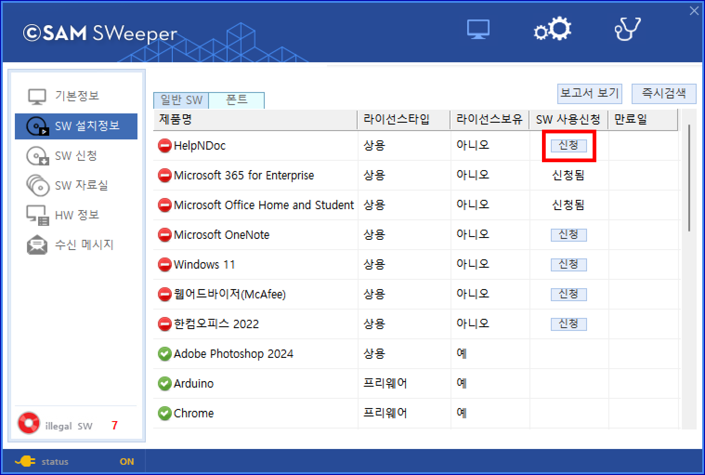
-
사용기간과 용도를 입력한 후 신청을 누릅니다.
-
임시 라이선스의 경우 사용기간을 입력해야 합니다.
- 신청이 완료 되면 아래와 같이 "신청됨" 이라는 문구로 변경되며 SW신청 화면에서 신청내역이 확인 가능합니다.
4.신청 이후 "SW신청"에서 처리상태를 확인할 수 있습니다.
-
관리자 승인이 완료되면, 아래와 같이 합법 설치로 아이콘이 변경됩니다.
-
사용자가 신청한 건에 대한 만료기간이 표시됩니다. (관리자가 임의로 할당시 표시안됨)
- 보고서 보기
사용자는 개인 PC에 설치된 소프트웨어 현황을 출력할 수 있습니다. (Windows 만)
- 보고서보기를 누릅니다.
- 미리보기 화면을 확인 후 출력합니다.
- 인쇄 설정에서 원하는 프린터를 지정후 출력합니다.
참고사항
폰트를 신청하는 경우에는 폰트탭을 눌러 동일한 방식으로 신청할 수 있습니다. (Windows만 해당)
© Copyright SWeeper Inc.. All Rights Reserved
11-3-1-2-1 제거유도
Source: https://www.sweeper.or.kr/etc/manual/11-3-1-2-1.html
11-3-1-2-1 제거유도
11. CLIENT UI(AGENT) ›› 11-3. 사용자 UI ›› 11-3-1. 장비정보 ›› 11-3-1-2. SW 설치정보 ››


관리자의 정책(경고메시지)에 의해 사용자 PC에서는 다음과 같은 제거유도창이 발생합니다. 이때 관리자 설정(2-1-4-1. 기본설정, 2-1-4-1-1. 제거유도 설정)에 따라 경고창 발생 빈도수가 다르게 나타나며, 경고창 메시지를 변경할 수 있습니다.
(위 : Windows Agent, 아래 : Mac Agent)


참고사항
제거유도 메시지창에서도 폰트 라이선스를 신청을 할 수 있습니다. (Windows 만)
© Copyright SWeeper Inc.. All Rights Reserved
11-3-1-3. SW 신청
Source: https://www.sweeper.or.kr/etc/manual/11-3-1-3SW.html
11-3-1-3. SW 신청
11. CLIENT UI(AGENT) ›› 11-3. 사용자 UI ›› 11-3-1. 장비정보 ››


사용자는 업무에 필요한 소프트웨어를 검색하여 관리자에게 승인을 요청하고 그 결과를 확인할 수 있습니다.
또한 소프트웨어 배포기능과 연계된 경우, 라이선스를 할당받은 사용자는 요청한 소프트웨어를 다운로드 받고 설치할 수 있습니다.
(위 : Windows Agent, 아래 : Mac Agent)
- SW신청을 누릅니다.
- "SW 사용/설치 신청" 화면에서 선택을 누릅니다.
- SW 선택에서 제품명을 입력하고 검색을 누르고, 검색된 목록에서 필요한 소프트웨어를 선택합니다.
-
부가 정보를 입력하고 신청을 완료합니다.
-
임시라이선스의 경우 사용기간을 지정해야 합니다.
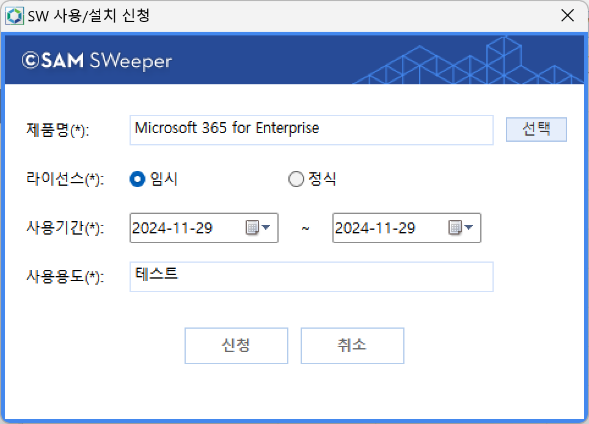
-
관리자의 승인 여부를 확인하기 위해 새로고침을 눌러 승인상태를 확인합니다.
-
관리자 승인이 완료되면, 승인상태가 "관리자 승인"으로 표시되며, 해당 소프트웨어 설치시 합법으로 표시 됩니다.

참고사항
만약 관리자가 해당 소프트웨어를 배포관리와 연계시킨 경우에는 아래와 같이 "직접 다운로드 및 설치" 할 수 있습니다.
- 설치를 누르면 해당 소프트웨어 설치 파일을 지정된 경로에 다운로드 하며, 배포패키지 옵션에 따라 설치까지 자동 진행합니다.
- 다운로드가 완료 되면 지정된 경로에서 설치파일을 확인 할 수 있습니다.
- 배포 패키지 옵션에 따라 경로 지정이 가능하며 기본 다운로드 경로는 아래와 같습니다.
아래는 다운받은 프로그램이 위치한 경로입니다.

참고사항
- 폰트도 동일하게 조회하여 신청할 수 있습니다. (Windows 만)
© Copyright SWeeper Inc.. All Rights Reserved
11-3-1-4. SW 자료실
Source: https://www.sweeper.or.kr/etc/manual/11-3-1-4SW.html
11-3-1-4. SW 자료실
11. CLIENT UI(AGENT) ›› 11-3. 사용자 UI ›› 11-3-1. 장비정보 ››


SW자료실은 사용자가 필요한 SW를 다운받을 수 있도록, 관리자가 등록한 SW입니다.
(6-1-1. 패키지생성) 관리자의 패키지 설정에 따라, 사용자 UI에 노출되기도 하고, 노출된 SW를 다양한 Case별로 다운받고 설치할 수 있도록 하는 등의 제어가 가능합니다.
(위 : Windows Agent, 아래 : Mac Agent)
SW 설치방법
- 설치 버튼을 누릅니다.
- 다운로드 설치 창에서 다운로드를 누릅니다.
- 다운로드 후 설치가 진행 됩니다.(관리자가 프로그램 실행되도록 설정한 경우)
참고사항
- 관리자가 패키지를 등록한 방법에 따라, 위의 경우와 같이 다운로드와 동시에 실행 여부가 결정됩니다.
- 다운만 받도록 설정된 경우, 프로그램 다운 완료시 해당 디렉터리가 열립니다.
- 라이선스와 연계된 경우, 라이선스 없는 사용자가 설치를 시도하는 경우 아래와 같이 팝업되어 프로그램 다운받을 수 없습니다.
- 실행조건에 일치되지 않는 경우, 역시 프로그램을 다운받을 수 없습니다.
- 이미 설치된 경우 프로그램을 다운받을 수 없습니다.
© Copyright SWeeper Inc.. All Rights Reserved
11-3-1-5. HW 정보
Source: https://www.sweeper.or.kr/etc/manual/11-3-1-5HW.html
11-3-1-5. HW 정보
11. CLIENT UI(AGENT) ›› 11-3. 사용자 UI ›› 11-3-1. 장비정보 ››


SWeeper Agent가 설치된 장비의 하드웨어 정보를 확인할 수 있습니다.
(위 : Windows Agent, 아래 : Mac Agent)

© Copyright SWeeper Inc.. All Rights Reserved
11-3-1-6. 수신메시지
Source: https://www.sweeper.or.kr/etc/manual/11-3-1-6.html
11-3-1-6. 수신메시지
11. CLIENT UI(AGENT) ›› 11-3. 사용자 UI ›› 11-3-1. 장비정보 ››


관리자가 개별 사용자에게 보낸 메세지 정보를 확인 할 수 있습니다.
(위 : Windows Agent, 아래 : Mac Agent)
- 관리자가 사용자에게 메세지를 전송한 화면

- 전송된 메세지가 저장된 화면


© Copyright SWeeper Inc.. All Rights Reserved
11-3-2. 설정
Source: https://www.sweeper.or.kr/etc/manual/11-3-2.html
11-3-2. 설정
11. CLIENT UI(AGENT) ›› 11-3. 사용자 UI ››


관리자가 사용자 PC를 원격제어시 자동으로 승인되도록 하는 설정과 ClientUI 의 언어를 변경에 대한 설정을 합니다.
© Copyright SWeeper Inc.. All Rights Reserved
11-3-2-1. 원격제어 설정
Source: https://www.sweeper.or.kr/etc/manual/11-3-2-1.html
11-3-2-1. 원격제어 설정
11. CLIENT UI(AGENT) ›› 11-3. 사용자 UI ›› 11-3-2. 설정 ››


원격제어 설정
'원격제어 자동 동의'에 체크를 하게 되면 관리자가 사용자의 동의없이 원격 연결이 가능합니다.

참고사항
Mac Agent는 현재 원격제어를 지원하지 않습니다.
© Copyright SWeeper Inc.. All Rights Reserved
11-3-2-2. 언어설정
Source: https://www.sweeper.or.kr/etc/manual/11-3-2-2.html
11-3-2-2. 언어설정
11. CLIENT UI(AGENT) ›› 11-3. 사용자 UI ›› 11-3-2. 설정 ››


언어설정
다국어를 지원하며, 언어를 선택 할 수 있습니다. (현재는 한국어와 영어만 지원)
참고사항
Mac Agent는 해당 Agent 시스템 언어를 확인하여 자동 변환됩니다.
© Copyright SWeeper Inc.. All Rights Reserved
11-3-2-3. 환경설정
Source: https://www.sweeper.or.kr/etc/manual/11-3-2-3.html
11-3-2-3. 환경설정
11. CLIENT UI(AGENT) ›› 11-3. 사용자 UI ›› 11-3-2. 설정 ››


환경설정
관리자로 부터 받은 메시지 삭제 설정을 할 수 있습니다.
(위 : Windows Agent, 아래 : Mac Agent)
© Copyright SWeeper Inc.. All Rights Reserved
11-3-3. 진단
Source: https://www.sweeper.or.kr/etc/manual/11-3-3.html
11-3-3. 진단
11. CLIENT UI(AGENT) ›› 11-3. 사용자 UI ››


SWeeper 에이전트가 정상적인 동작을 하지 않거나, 혹은 자가진단 필요시 확인합니다.
(위 : Windows Agent, 아래 : Mac Agent)
아래의 진단 이미지를 누르면 나타나는 화면입니다.
방법
- 우측 상단의 "진단시작" 버튼을 클릭합니다.
-
진단이 시작되면, 6단계로 진단하며 그 결과를 보여줍니다. (Mac 은 5단계)
-
진단의 종류
-
Agent 서비스 등록상태 진단
- Agent 프로세스 구동상태 진단
- 정책수행 프로세스 점검 구동상태 진단
- Agent 설정 파일 진단
- Agent 보조 프로세스 진단
- 서버 연결 상태 진단
© Copyright SWeeper Inc.. All Rights Reserved
12. FAQ
Source: https://www.sweeper.or.kr/etc/manual/12FAQ.html
12. FAQ


FAQ
SWeeper
운영 중 발생하는 오류나 다양한 증상에 대해 해결할 수 있는 방안을 공유합니다.
현재의 화면은 관리콘솔 프로그램의 도움말에서 확인할 수 있고, 웹을 통해 제공되고 있습니다.
능숙한 사용자를 위한 Q&A는 [홈]-[뉴스]에서 제공하고 있습니다.
사용자의 능숙한 자산관리자가 되기까지, 새로운 정보가 계속 업데이트 됩니다.
| THE SOFTWARE MANAGEMENT |
© Copyright SWeeper Inc.. All Rights Reserved
12-1 일반정보
Source: https://www.sweeper.or.kr/etc/manual/12-1.html
12-1 일반정보
12. FAQ ››


- 최상위부서의 장비 수와 하위부서의 장비 수 총합이 일치하지 않습니다.
처음 에이전트가 설치된 장비에 부서 지정되지 않으면, 최상위 부서에 기본적으로 속하게 됩니다. 아래의 왼쪽 그림과 같이 장비수가 일치되지 않는 것처럼 오해할 수 있습니다.


이것은 환경설정의 초기부서 설정(위 우측 그림)에 의해 지정이 된 것입니다. 지정된 부서가 없기 때문에 하위 부서 장비의 총 장비수와 최상위 부서 총 장비수간 수량 차이가 발생합니다.
© Copyright SWeeper Inc.. All Rights Reserved
12-2 소프트웨어
Source: https://www.sweeper.or.kr/etc/manual/12-2.html
12-2 소프트웨어
12. FAQ ››


- 소프트웨어 설치차단중 타이틀 차단이 되지 않습니다.
타이틀 차단을 통해 프로그램 설치차단을 하려는 경우, 해당 프로그램이 설치될 때의 타이틀을 참고하여 설정하면 대부분의 프로그램을 차단할 수 있습니다.
그러나 어떤 프로그램은 타이틀 이름이 실제 내부이름과 다른경우 타이틀 차단이 되지 않습니다. 대표적인 예가, 저희 에이전트 설치 프로그램입니다.
설치시 타이틀에 "설치 언어 선택"으로 보여져서, 해당 이름으로 차단을 등록하여도 차단이 되지 않습니다. 왜냐하면 내부적인 실제 타이틀 이름은 "설치"이기 때문입니다.
그러므로 관리자는 타이틀 차단을 사용하는 경우, 사전에 타이틀 차단을 하여, 차단이 정상적으로 되는 것을 확인하고 전사 적용하여야 합니다.
- 패키지 라이선스 자동 할당시, 설치된 SW가 설치로그에 남지 않습니다.
예를 들면, 장비에 SW A와 B가 설치(에이전트 설치전)되어 있고, 관리자는 패키지 그룹(SW A와 B 포함) 라이선스를 자동할당 설정한 이후,
장비에 에이전트를 설치하면, 할당 및 회수 이력 로그에는 A만 설치했다고 남습니다.
에이전트가 설치되면서 설치된 SW를 검색하게 되는데 처음 검색된 A를 확인하여 해당 라이선스(패키지)를 할당하고
이후 검색된 SW B는 앞서 라이선스를 할당했기에 중복 보고는 하지 않게됩니다.

© Copyright SWeeper Inc.. All Rights Reserved
12-3 배포
Source: https://www.sweeper.or.kr/etc/manual/12-3.html
12-3 배포
12. FAQ ››


- 관리자가 배포를 사용자에게 노출했을 때, 나타나는 배포리스트에서 받기요청 버튼은 무엇인가요?
아래 이미지는 관리자가 자동배포나 일반배포로 등록시, 나타나는 화면입니다.
받기요청 버튼은 사용자가 환경적인 이유(네트워크 트래픽, PC문제)로 배포를 받지 못하여 실패되는 경우, 사용자가 직접 받기를 요청하여 배포를 받도록 하기 위함입니다.
일시적인 네트워크 문제인 경우, 사용자가 "받기요청"을 누르면 받아지지만, 관리자의 설정 실수로 인한 배포 실패는 사용자가 "받기요청"을 하여도 실패가 나타납니다.
관리자 실수로 인한 실패시, 관리자는 배포 설정을 확인 및 수정 후, 관리콘솔에서 재전송을 하면 해당 문제를 해결할 수 있습니다.
© Copyright SWeeper Inc.. All Rights Reserved
12-4 기타
Source: https://www.sweeper.or.kr/etc/manual/12-4.html
12-4 기타
12. FAQ ››


- 엑셀 2007 통합문서로 양식 다운로드(내보내기) 시 오류가 발생합니다.
간혹 오피스 2013이 설치된 관리콘솔 PC에서 양식 다운로드시, OLEDB 관련 오류가 발생하는 경우가 있습니다. 이것은 SWeeper 프로그램 결함이 아닌 오피스의 데이터 연결 구성요소가 없기 때문입니다.

참고사항
이와 같은 현상은 소프트웨어-라이선스, 자산-구매목록, 자산-자산목록, 자산-실사목록, 설정-사용자 관리에서 동일하게 나타날 수 있습니다.
- 엑셀 방식 변경
SWeeper 2.1.8.1 버전부터 기존 OLEDB 방식이 아닌, NPOI 라이브러리를 이용합니다. 이후로 엑셀이 설치되어 있지 않은 장비에서도 엑셀 업로드/다운로드가 가능합니다.
- 관리콘솔이 자동 종료되었습니다.
관리콘솔 프로그램은 보안강화를 위해, 처음 접속후 60분이 지나면 자동 로그오프 되도록 하고 있습니다. 이것은 관리자가 부재중일 때 누군가 조작을 하지 못하도록 하기위한 조치입니다.
이때 로그오프 전, 종료하지 않고 연결 유지할 것인지 묻는 팝업 메시지를 보여주는 데, 이때 확인버튼이나 (X)닫기 버튼을 누르면 관리자가 사용을 연장한 것으로 간주하고 계속 사용이 가능합니다.
만약 사용자가 부재로 인하여 팝업 메시지를 누르지 못한다면 프로그램이 로그오프 됩니다.

© Copyright SWeeper Inc.. All Rights Reserved
12-4-1 데이터 백업 및 복원
Source: https://www.sweeper.or.kr/etc/manual/12-4-1.html
12-4-1 데이터 백업 및 복원


윈도우 명령창(Command)을 통한 백업/복구 방법을 설명합니다.
1.1 데이터 백업 (Command창에서 명령어 사용)
- 윈도우 서버 command창을 실행합니다.
- 아래의 경로로 이동합니다.
-
Mysqldump.exe를 활용한 명령어를 입력 한 뒤 패스워드를 입렵합니다.(Mysql 계정 패스워드)
-
mysqldump --rourines -u[사용자아이디] -p 데이터베이스명 [테이블명] > 저장될 경로\저장될 파일명
- 백업이 완료되어도 특정한 메세지가 없기 때문에 지정한 경로에서 백업 데이타를 확인하여야 합니다.
- 백업이 완료된 화면
1.2 데이터 복원 (Command창에서 명령어 사용)
Mysql.exe를 활용한 복원을 설명합니다.
- command창을 실행합니다.
- 아래의 경로로 이동합니다.

-
Mysql.exe를 활용한 명령어를 입력 한 뒤 패스워드를 입렵합니다.(Mysql 계정 패스워드)
-
mysql -u[사용자아이디] -p [DB명] < 덤프파일명----> 테이블만
- mysql --rountines -u[사용자아이디] -p [디비명] < 덤프파일명---->v프로시져 포함
© Copyright SWeeper Inc.. All Rights Reserved
12-4-2 엑셀 업로드 오류
Source: https://www.sweeper.or.kr/etc/manual/12-4-2.html
12-4-2 엑셀 업로드 오류


엑셀 업로드시에는 업로드 양식에 맞게 입력해야 정상 업로드가 됩니다.
오류가 발생하는 대표적인 예를 설명합니다.
- 코드관리에 없는 데이터를 입력한 경우
예를들어 사용자 정보 엑셀 업로드시, 음영 처리된 부분은 필수 입력 사항이며, [설정>코드관리]에 존재하는 항목이 들어가야 합니다.
직급을 입력할 때, 코드에 추가되지 않은 "전임"을 입력하면 해당 항목이 없기 때문에 오류가 발생합니다.
이때는 코드관리에서 사용자 직급항목에 코드를 추가한 후, 다시 업로드를 수행하면 오류없이 업로드가 가능합니다.
-
엑셀업로드 양식의 셀서식을 변경한 경우
내려받은 엑셀샘플 양식의 서식이 변경되면, 업로드시 문제가 될 수 있습니다.
다른 파일에서 Copy & Paste 시, 의도치 않게 서식이 변경되어 오류가 발생됨을 주의하시기 바랍니다.
-
예 : 구매일과 만료일 입력시 구매일 (텍스트)을 날자로 변경되었을 경우
-
셀서식을 임의로 날짜로 변경
- 업로드시 데이터 오류
참고사항
이와 같은 현상은 소프트웨어-라이선스, 자산-구매목록, 자산-실사목록, 설정-사용자 관리 등 에서 동일하게 나타날 수 있습니다.
© Copyright SWeeper Inc.. All Rights Reserved
12-5 CLIENT UI(AGENT)
Source: https://www.sweeper.or.kr/etc/manual/12-5CLIENTUIAGENT.html
12-5 CLIENT UI(AGENT)
12. FAQ ››


- Agent UI에서 네트워크 정보를 확인할 수 없습니다.
네트워크 정보는 에이전트 구동시 수집하여 보여주며, 구동중 IP정보를 임의로 변경하면, 최초에 가지고 온 정보와 일치하지 않기 때문에 정보가 보여지지 않습니다.
이 경우 Agent 재시작 명령을 통해, 변경된 네트워크 정보를 확인할 수 있습니다.
[설치현황 > 장비선택 > 우클릭 명령 > Agent 재시작]
© Copyright SWeeper Inc.. All Rights Reserved
12-6. 명령
Source: https://www.sweeper.or.kr/etc/manual/12-6.html
12-6. 명령
12. FAQ ››


- 명령을 생성했는데, 명령 전송한 장비(부서, 장비그룹 등)가 보이지 않습니다.
4-1-1-2. 권한있는 장비 확인 관련하여, 권한이 없는 경우에는 명령대상에서 제외됩니다.
명령실행이력을 확인해보면, 권한있는 장비만 대상에 추가되고 권한없는 장비는 추가되지 않습니다.
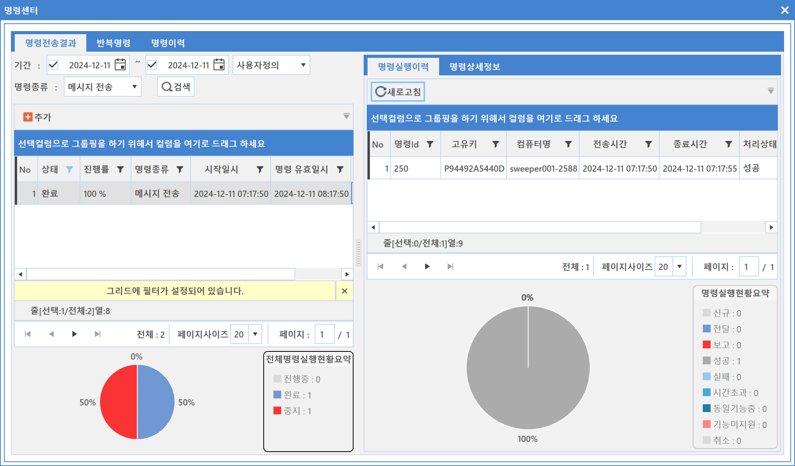
© Copyright SWeeper Inc.. All Rights Reserved